컴퓨터 과학 언플러그드
버젼 3.1
한국어 번역/삽화: 이광춘/문춘경
저자: Tim Bell, Ian H. Witten, Mike Fellows
실험수업/삽화: Robyn Adams and Jane McKenzie/Matt Powell

- 들어가며
- 한국어 번역
- 감사의 글
- 제1부 정보를 나타내는 원재료—데이터
- 제2부 컴퓨터를 동작시키기—알고리즘
- 전함 (battleship)—검색 알고리즘
- 가장 가벼운 것과 가장 무것운 것—정렬 알고리즘
- 시간내 일을 마치기—정렬 네트워크(Sorting Network)
- 진흙도시 프로젝트—최소생성나무(Minimal Spanning Trees)
- 오렌지 게임—네트워크 라우팅(Routing)과 교착상태(Deadlock)
- 돌명판(Tablets of Stone) — 네트워크 통신 프로토콜
- 제3부 컴퓨터에 무엇을 수행할지 지시하기—절차의 표현
- 제4부 정말 어려운 문제 — 난해성(Intractability)
- 제5부 비밀 공유와 범죄와 전쟁 —암호화(Cryptography)
- 제6부 사람 냄새나는 컴퓨터—컴퓨터와 상호 작용
- 추천 도서
- 라이센스
한국어 번역 이력
| 출시일자 | 주요 내용 |
|---|---|
| 2015년 05월 | CS Unplugged Ver 3.1 HTML/PDF/E-PUB/MOBI/AZW3 무료 전자책 배포 |
| 2015년 04월 | CS Unplugged Ver 3.1 한국어 번역 |
| 2015년 03월 | CS Unplugged Ver 3.0 상용 MS 워드에서 공개 소프트웨어 플랫폼 전환 |
| 2015년 02월 | CS Unplugged Ver 3.0 삽화 한국화 작업 |
| 2015년 01월 | CS Unplugged Ver 3.0 Part IV,V,VI 번역 (MS 워드) |
| 2014년 08월 | CS Unplugged Ver 3.0 Part I,II,III 번역 (MS 워드) |
들어가며 (Intro)
컴퓨터는 이제 어디에나 있다. 컴퓨터를 어떻게 사용할지를 배울 필요가 있고 여러분 중 많은 분들은 매일 컴퓨터를 사용합니다. 그러나 컴퓨터는 어떻게 작동할까요? 컴퓨터는 어떻게 생각할까요? 그리고, 사람들은 컴퓨터를 더 빠르고 더 좋게 만들까요? 컴퓨터 과학은 이런 질문을 탐구하는 매력적인 분야입니다. 실제로는 아이들이 컴퓨터를 사용하지 않고, 다양한 연령대의 어린이를 위해 고안된 이 책의 쉽고 재미있는 활동은 여러분들을 컴퓨터가 어떻게 작동하는지에 대한 핵심적인 부문에 대해서 소개합니다.
이 책은 심화나 방과후 학교 확장 프로그램으로 혹은 정규 수업시간에 효과적으로 사용될 수도 있다. 여러분의 자녀들과 컴퓨터의 원리를 배우기 위해서 컴퓨터 전문가일 필요는 없습니다. 간략하게 설명된 배경정보를 가진 다양한 활동들이 이 책에 담겨 있다. 모든 문제에 대한 답은 제공되며 각각의 활동은 연관된 활동을 설명하는 '실제 컴퓨터 적용 (What's it all about?)' 세션으로 마무리된다.
예를 들어, 이진수 탐구, 매핑과 그래프, 패턴과 정렬 문제, 암호학처럼 많은 활동은 수학에 기반하고 있다. 다른 활동은 컴퓨터가 어떻게 작동하는지에 대한 지식과 이해력, 기술 과정과 연관된다. 자녀분들은 의미 있는 커뮤니케이션, 문제해결, 창의성, 사고력 기술 향상에 적극적으로 참여한다.
이 책과 더불어"언플러그드(Unplugged)" 프로젝트로 csunplugged.org 사이트에 많은 온라인 무료 동영상, 사진, 추가 자료들이 올라가 있다.
3명의 컴퓨터 과학 강사와 두 명의 선생님이 이 책의 집필에 참여하였으며 실제 학교 수업의 경험을 반영했다. 많은 컴퓨터의 주요 개념이 실제 컴퓨터 없이 교육이 가능하다는 것을 확인했다. 때때로 컴퓨터는 학습의 교란요소가 되기도 했다. 그래서 컴퓨터의 전원을 빼고(unplug your computer), 컴퓨터 과학이 무엇인지 바로 학습하세요.
이 책은 구글 덕분에 개인 및 교육 목적으로 자유로이 다운로드 해서 사용 가능하다. 크리에이티브 커먼즈 라이선스 (Creative Commons Attribution-NonCommercial-Share Alike)로 배포된다. 여러분은 자유로이 공유(복사, 배포, 전달)할 수 있다. 또한, 리믹스를 할 수도 있다. 이러한 이용은 다음의 사항을 만족할 때만 가능하다. 저작자를 명시하여야 하며, 상업적 목적으로 사용이 가능하지 않고, 여러분이 이 책의 내용에 근거하여 변형이나 변경을 한다면 동일한 라이선스를 적용하여야 한다. 좀더 자세한 사항은 CC BY-NC-SA 3.0의 검색을 통해 확인할 수 있다. 여러분이 교육환경에 이 교재를 적극적으로 사용하고, 책을 복사하고, 책에 딸려 있는 워크시트를 학생들에게 배포하는 것을 권장한다. 저자에게 질문과 제안점을 기탄없이 보내기 바랍니다. (자세한 사항은 csunplugged.org참조 바란다.) 이 책은 여러 언어로 번역이 되었거나, 번역이 진행되고 있다. 번역본에 대한 자세한 사항은 웹사이트를 확인 바란다.
한국어 번역 (Korean translation)
우리나라의 산업발달과정을 보면 1950~1960년대 수입대체를 목표로 신발, 섬유가 중심이 된 경공업시대, 1970~1980년 수출진흥을 목표로 철강, 조선, 자동차가 중심이 된 중공업시대, 1990~2000년대 기술혁신을 통한 반도체, 핸드폰, 디스플레이가 중심이 된 ICT 산업을 지나 2010~2020년대는 소프트웨어, 콘텐트, 과학기술이 중심이 되는 융합•지식 창조산업 시대로 발전해 갈 것으로 기대하고 있다.
첫 인터넷 웹 브라우저를 만든 마크 앤더슨은 소프트웨어가 세상을 먹고 있다("Software is eating the world")는 자극적인 표현으로 2011년 월스트리트 저널에 에세이를 썼고, 카네기멜론 대학의 쟈넷 윙 교수는 이론적 사고(Theoretical Thinking), 실험적 사고(Experimental Thinking)와 더불어 컴퓨터적 사고(Computational Thinking)가 현재도 그렇지만 앞으로 인간의 사고를 지배하는 중추적인 역할을 할 것을 주장했다. 이들의 결과는 정보적 사고를 배운 사람과 소프트웨어를 이해하고 활용하는 사람과 그렇지 못한 사람과의 차이는 산업경제의 빈부격차보다 더 큰 디지털 경제의 정보 불평등(Digital Divide)를 야기할 것으로 예측했다.
정부는 '14년 7월 세계 경제, 사회 환경이 소프트웨어 중심사회로 급격히 변화하고 있으며, 소프트웨어가 혁신과 성장, 가치창출의 중심이 되고, 개인•기업•국가의 경쟁력을 좌우하는 중요한 역할을 하고 있음에도 불구하고, 우리나라는 범정부적, 국민적 관심이 미흡한 상황이라고 진단하고, 미국, 영국, 이스라엘 등 선진국과 마찬가지로, 초중등에서 소프트웨어를 전국민 보통 교육 과정으로 채택하는 것을 골자로 하는 "문이과 통합형 교육과정" 확정 고시를 2014년 9월 발표했다.
지금까지 소프트웨어가 고등교육과 직업 교육에 초점이 맞추어줘서 초중등 및 소프트웨어에 관심을 가지고 있는 일반인이 접근하기에는 높은 장벽이 있었으나, "컴퓨터 과학 언플러그드 (Computer Science Unplugged)"를 통해서 소프트웨어를 처음 접하거나, 원리를 이해하고자 하는 분들에게는 큰 도움이 되고 특히, 컴퓨터적 사고(Computational Thinking)에 대한 입문으로적 적합할 것으로 생각된다.
"컴퓨터 과학 언플러그드"는 정보 불평등 해소하고, 대한민국 전 국민을 단돈 천원($1) 정보교육으로 행복한 세상 만들기 위한 정보 소프트웨어 교육 xwMOOC(엑스더블유무크) 프로젝트 중의 하나이며, xwMOOC 웹사이트에서 좀더 많은 정보를 만난 수 있다.
많은 분들이 번역 및 감수에 참여하여 빠른 시간 내에 번역이 완료될 수 있었으며, 문춘경 작가님이 한국인에게 더 친근히 다가설 수 있는 삽화작업을 해주셨고, 소프트웨어 플랫폼 구축과 클라우드 서비스를 운영해 주신 한정수님, 그리고 프로젝트를 지원해주신 강환범님과 문용규 사장님께 특별한 감사를 드립니다.
한국어 번역을 대표하며 이광춘 ('15년 04월)
한국어 번역 이력
- 2015년 05월: Computer Science Unplugged Version 3.1 HTML/PDF/E-PUB/MOBI/AZW3 무료 전자책 배포
- 2015년 04월: Computer Science Unplugged Version 3.1 한국어 번역
- 2015년 03월: Computer Science Unplugged Version 3.0 MS 워드 기반에서 마크다운 공개 소프트웨어 플랫폼 변환
- 2015년 02월: Computer Science Unplugged Version 3.0 삽화 한국화 작업
- 2015년 01월: Computer Science Unplugged Version 3.0 Part IV,V,VI 번역 (MS 워드)
- 2014년 08월: Computer Science Unplugged Version 3.0 Part I,II,III 번역 (MS 워드)
감사의 글(Acknowledgement)
많은 어린이와 선생님 모두가 아이디어를 개선하도록 도움을 주셨습니다. 캐나다 브리티쉬 콜롬비아 빅토리아 사우스 파크 소재의 셜리 초등학교(Shirley Primary School), 이람 초등학교(Ilam Primary School), 뉴질랜드 크리스트 처치 웨스트번(Westburn Primary School)초등학교 선생님과 아이들이 초기 실험적 활동에 참여해 주셨습니다. 학습활동에 환대해 주셨으며, 여러 활동이 건설적으로 될 수 있도록 아낌없는 조언을 주신 Linda Picciotto, Karen Able, Bryon Porteous, Paul Cathro, Tracy Harrold, Simone Tanoa, Lorraine Woodfield, Lynn Atkinson 분께 특별한 감사의 말씀을 전한다. Gwenda Bensemann는 우리를 위해서 몇몇 활동을 시범적으로 수행해 주셨고, 변경 점에 대해서 조언을 주셨습니다. Richard Lynders, Sumant Murugesh 두 분은 학습활동을 도와주셨습니다. 일부 암호학 활동에서는 Ken Noblitz분이 도움을 주셨습니다. Kathy Beveridge 도움으로 Victoria “Mathmania”그룹활동 아래 몇몇 활동은 이루어졌습니다. 초기 삽화는 Malcolm Robinson, Gail Williams 도움을 주셨고, Hans Knutson으로부터의 조언도 도움이 되었습니다. Matt Powell도 언플러그드 프로젝트가 발전되는 동안 값진 도움을 주셨습니다. 이 책이 발전되는 초기단계 아낌없는 후원을 해주신 Brian Mason Scientific and Technical Trust에 무척 감사 드립니다.
도움이 되는 제안을 많이 해주시고 활동을 시범적으로 진행해 주신 Paul, Ruth Ellen Howard에 특별한 감사를 드립니다. Peter Henderson, Bruce McKenzie, Joan Mitchell, Nancy Walker-Mitchell, Gwen Stark, Tony Smith, Tim A. H. Bell , Mike Hallett, Harold Thimbleby는 많은 유용한 코멘트를 주셨습니다.
이 책이 있게 지원해준 가족 Bruce, Fran, Grant, Judith, Pam에게 많은 빚을 지고 있고, Andrew, Anna, Hannah, Max, Michael, Nikki는 이번 작업에 영감을 주었고 시범활동을 수행한 첫 아이들입니다.
언플러그드 프로젝트를 후원해고 자유롭게 다운로드될 수 있는 이 책을 만들게 해준 구글에 특별한 감사를 전합니다. 언플러그드 활동에 대해서 조언과 코멘트를 언제나 환영합니다. 저자들은 csunplugged.org를 통해서 만날 수 있습니다.
제 1 부 (Part I)
정보를 나타내는 원재료 — 데이터
데이터: 정보를 나타내는 원재료
컴퓨터로 정보를 어떻게 저장할까요?
컴퓨터(Computer)라는 말은 라틴어 'computare'에 기원하는데 계산하고 더한다는 의미를 지니지만, 오늘날 컴퓨터는 거대한 계산기 이상이다. 컴퓨터는 도서관도 될 수 있으며, 컴퓨터로 글을 작성할 수 있으며, 정보를 찾고, 음악을 연주하고, 영화를 보기도 한다. 그런데 컴퓨터는 이렇게 많은 모든 정보를 어떻게 저장할까? 믿든 믿지 않든, 컴퓨터는 단지 두 가지만을 사용한다. 영('0')과 일('1')이다.
데이터와 정보의 차이는 무얼까?
데이터는 원재료, 즉 컴퓨터가 작업하는 숫자다. 컴퓨터는 여러분과 내가 이해할 수 있는 데이터를 정보(문자, 숫자, 그림)로 변환한다.
숫자, 글자, 단어, 그림이 어떻게 영('0')과 일('1')로 변환될까?
제 1부에서는 이진수(binary number)가 무엇인지, 컴퓨터가 어떻게 그림을 그리는지, 팩시밀리 송수신기가 어떻게 동작하고, 대량의 정보를 저장하는 효율적인 방법이 무엇인지, 오류가 생기는 것을 어떻게 막을 수 있는지, 그리고 저장하려는 정보의 양을 어떻게 측정되는지를 배울 것이다.

점의 개수를 세다—이진수(binary numbers)
개요
컴퓨터의 데이터는 일련의 영과 일로 저장되고 전송된다. 단지 이 두 표식을 통해서 어떻게 언어와 숫자를 표현할 수 있을까?
교과학습 연계
- 수학: 숫자를 다른 진법으로 살펴보기. 이진법으로 숫자를 표현하기.
- 수학: 순열 패턴, 순열 패턴 규칙 기술하기. 이진법 패턴과 연관성
기술
- 계수 (Counting)
- 매칭 (Matching)
- 순서화 (Sequencing)
나이
- 6세 이상
학습 교재
- 이진 카드 5개가 데모용으로 필요합니다. 특히, A4 크기의 웃는 얼굴의 점 스티커 카드가 좋습니다.
- 아이마다 필요한 것 – 카드 5벌. 마스터 복사본: 카드에 이진수 표시된 자른 것 – 워크시트 학습: 이진수
- 필요에 따라 추가학습에 아이마다 필요한 것 – 워크시트 활동: 이진수 작업하기 – 워크시트 활동: 비밀 메시지 보내기 – 워크시트 활동: 팩스 기계와 모뎀 – 워크시트 활동: 31보다 큰 수 세기 – 워크시트 활동: 이진수 심화
이진수(Binary Numbers)
|
|
|
|
|
들어가며
5 페이지에 있는 워크쉬트를 나눠주기 전에, 전체 그룹에게 기본원리에 대해서 시범을 보여주는 것이 도움이 된다.
본 활동에서 아래와 같은 5장 카드 한 세트가 필요하다. 각각의 카드는 한 면에는 점을 반대면에는 아무것도 없다. 5명의 아이들을 골라서, 교실 앞으로 시범 카드를 나눠준다. 카드의 순서는 반듯이 다음과 같다.

토론
카드 위에 점(dot)의 개수에서 무엇을 알아챘나요? (카드 각각은 오른쪽에 있는 카드보다 점의 개수가 2배 많다.)
왼쪽으로 옮긴다면 다음 장의 카드는 점을 몇 개나 가질까요? (32) 그 다음은…… ?
카드를 몇장 뒤집고 앞면만 보이는 카드의 점을 더해서 숫자를 만들 수 있다. 아이들에게 숫자 6을 만들어 보도록 해보세요. (점 4개 카드와 점 2개 카드), 그리고 15를 만들고 (8점, 4점, 2점, 1점 카드), 그리고 21을 만들어 봅시다 (16점, 4점, 1점 카드).
이제 영에서부터 순서대로 수를 세어보자.
수업의 나머지 시간은 어떻게 카드가 변화하는지 자세히 살펴볼 필요가 있다. 카드를 뒤집는 방법에 패턴을 볼 수 있다. (각 카드를 뒤집으면 오른쪽 대비 절반이다.) 본 활동을 한 개 이상 그룹에서 확대해보자.
이진수 카드가 보이지 않을 때는 0 으로 표시한다. 이진수 카드가 보이면, 1 로 표시한다. 이것이 이진수 체계다.
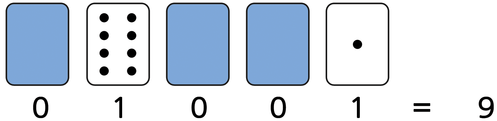
01001을 아이들에게 만들어 보게 한다. 01001은 십진수로 무엇일까요? (9) 17은 이진수로 무엇일가요? (10001)
아이들이 개념을 이해할 때까지 몇 번 더 시도해 본다.
학습 강화를 위해 다섯 가지 선택가능한 확장 활동이 있고, 아이들이 할 수 있으면 확장 활동을 가지고 많이 연습할 수 있게 합니다.
워크시트 활동: 이진수(Binary Numbers)
계수(counting)하는 방법 배우기
여러분은 어떻게 계수 하는지 이제 안다고 생각합니다. 그런데 다음에 계수하는 새로운 방법이 있다.
컴퓨터가 단지 0 과 1 만을 사용한다는 사실을 알고 있습니까? 컴퓨터에서 보고 듣는 모든 것, 글, 그림, 숫자, 영화, 소리 조차도 단지 숫자 두개로 저장된다. 컴퓨터가 사용하는 정확히 동일한 방법으로 이번 활동을 통해서 비밀 메시지를 친구에게 보내는지를 여러분에게 알려줄 것이다.
따라하기 설명
종이에서 카드를 잘라내서 다음에 보여지듯이 왼쪽에 점 16개가 있는 카드부터 순서대로 차례로 놓으세요.

카드가 정확하게 동일한 순서로 놓여있는지를 확인하세요.
정확하게 점 5개가 보여지도록 카드를 뒤집으세요. 카드는 동일한 순서로 놓여져야 합니다.
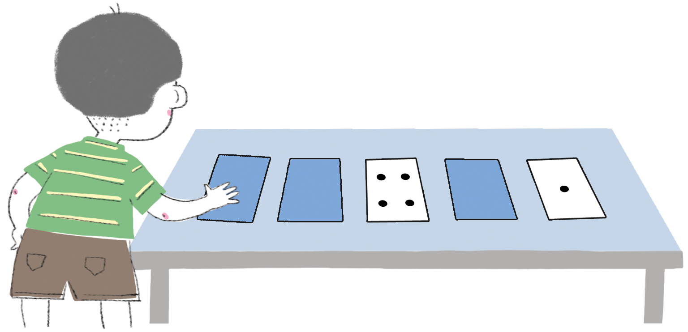
3, 12, 19를 어떻게 만드는지 알아보자. 이들 숫자를 만들기 위한 하나 이상의 방법이 있을까요? 만들 수 있는 가장 큰 수는 무얼까요? 가장 작은 숫자는 무엇일까요? 가장 큰 수와 가장 작은 수 중에 만들 수 없는 숫자가 있나요?
응용문제: 1,2,3,4 숫자를 순서대로 만드세요. 숫자를 하나씩 증가시키기 위해 카드를 뒤집는 논리적인 믿을만한 방법을 찾을 수 있나요?
복사 마스터: 이진수
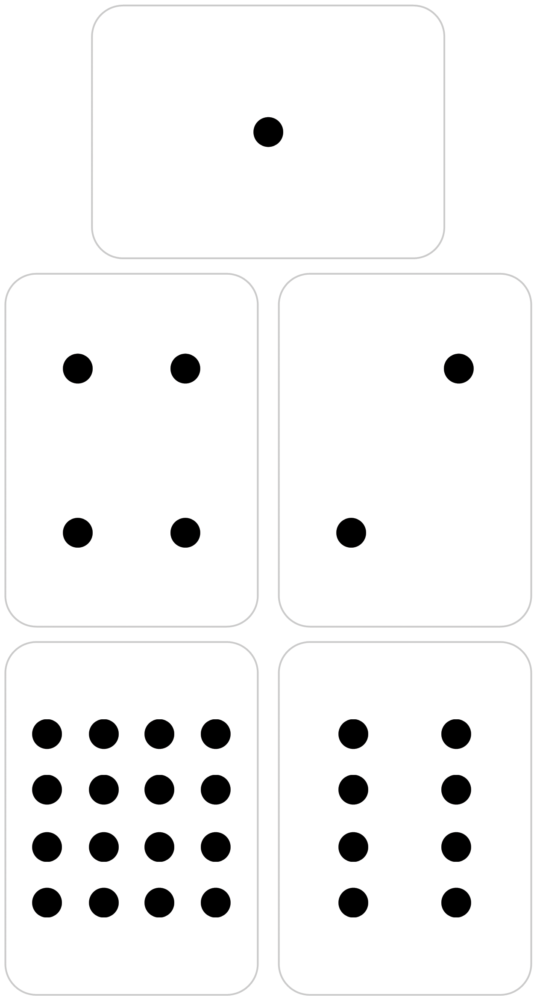
워크시트 활동: 이진수 계산
이진수 체계는 카드가 앞면인지 뒷면인지를 표현하는데 0과 1을 사용한다. 0은 카드 뒷면, 1은 점을 볼 수 있는 윗면이다. 예를 들어,
10101 이 무엇인지 풀 수 있나요? 11111 은 무엇일까요?
몇월 몇일 태어났나요? 이진수로 적어보세요. 친구 생일을 이진수로 무엇인지 알아보세요.
아래 기호를 숫자로 풀어보세요:

응용문제: 1,2,4,8,16 길이를 가진 줄(rope) 세트를 사용하여 31 단위까지 어떤 길이도 나타낼 수 있다는 것을 보여주세요. 서류가방이나 상자 같은 무거운 물건의 무게를 재기 위해서 균형저울과 무게추 몇개를 가지고 어떻게 무게를 잴 수 있는지 보이고 어른들을 놀래주세요.
워크시트 활동: 비밀 메시지 보내기
정훈이가 땡돌 땡돌 놀다가 그만 백화점 최고층에 갇혔다. 크리스마스 전날이고 선물을 가지고 무사히 집에 가고 싶었다. 정훈이는 무엇을 할 수 있을까? 전화도 시도해보고, 소리도 질러봤으나 주변에는 아무도 없었다. 길거리 반대편에 어떤 사람이 밤 늦도록 컴퓨터로 작업하고 있는 것을 봤다. 어떻게 그 사람의 관심을 끌 수 있을까? 정훈이는 주위를 둘러보고 할 수 있는 것을 찾아봤다. 그리고, 놀라운 아이디어가 떠올랐다—그녀에게 메시지를 보내기 위해서 크리스마스 트리의 전구를 사용하는 것이다. 주변의 전구를 모두 찾아 연결해서 전구를 켜거나 끌 수 있었다. 간단한 이진코드를 사용하는데 길 건너 여성분이 이진수를 이해한다고 확신했기 때문이다. 여러분도 할 수 있겠습니까?

워크시트 활동: 전자우편과 모뎀
모뎀으로 인터넷에 연결된 컴퓨터는 메시지를 보내기 위해서 이진수 체계를 사용합니다. 유일한 차이점은 비프음(beep)을 사용하는 것이다. 높은 비프음은 1, 낮은 비프음은 0이다. 이런 음조(tone)는 엄청 빨리 날아간다. 너무나 빨라서 우리가 듣게 되는 것은 끔찍하게 연속된 끼익 소리다. 만약 들은 적이 없다면, 인터넷에 연결된 모뎀소리에 귀 기울여 들어보세요. 혹은 팩시밀리의 신호음을 들어보세요—정보를 보내기 위해서 팩시밀리 기계도 모뎀을 사용합니다.

정훈이가 백화점에서 사용한 동일 신호를 사용해서, 친구에게 전자우편을 보내보세요. 친구와 여러분 모두 편안하게 해보세요—여러분이 모뎀처럼 빠를 필요는 없어요.
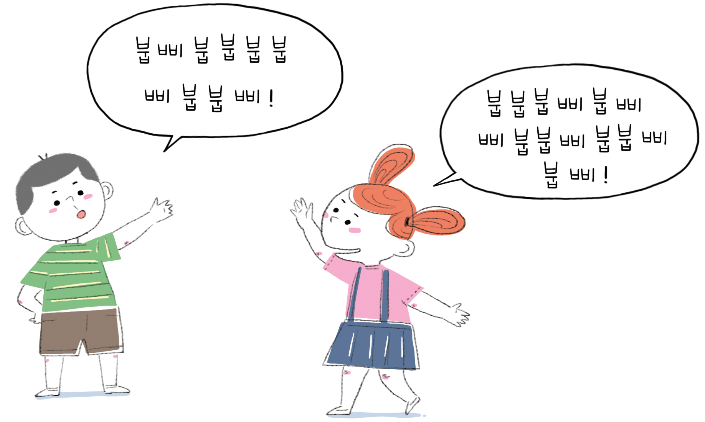
워크시트 활동: 31보다 큰 수 세기
이진 카드를 다시 보세요. 다음 카드를 나열된 순서(sequence)에서 만들려면, 얼마나 많은 점이 필요할까요? 그 다음 카드는 얼마나 많은 점이 필요할까요? 새로운 카드를 만들 때마다 여러분이 지켜야 하는 규칙은 무엇일까요? 보시다시피, 다음 큰 숫자를 만들기 위해서 단지 몇 장의 카드만 필요합니다.
주의 깊이 순서(sequence)를 살펴보면, 매우 흥미로운 관계를 발견하실 수 있습니다.
1, 2, 4, 8, 16, …
1, 2, 4를 더하면 1 + 2 + 4 = ? 얼마일까요?
1, 2, 4, 8을 더하면 1 + 2 + 4 + 8 = ?
처음부터 이들 숫자를 다 더하면 무슨 일이 생길까요?
"손가락을 걷게 한다"(''let your fingers do the walking''?)는 표현을 들어봤나요? 손가락으로 계수를 하지만 10이상 셀 수는 없어요— 외계인이 될 필요는 없어요. 이진수 체계를 사용하고 손가락 각자가 카드를 나타낸다면 0에서31가지 셀 수 있어요. 즉 32개 숫자가 됩니다. (0도 숫자라는 것을 잊지 마세요.)
손가락을 사용해서 순서대로 수를 세보세요. 손가락을 치켜 세우면, 1을 나타내고, 손가락을 내리면 0을 나타냅니다.
만약 양쪽 손 모두 사용하면 0~1023까지 셀 수 있어요. 즉, 1024개의 숫자입니다.
여러분이 만약 잘 구부릴 수 있는 발가락을 가지고 있으면(이번에는 외계인이 되셔야 합니다.^^;) 더 많은 숫자를 셀 수 있어요. 한쪽 손이 32까지 셀 수 있고, 두 손으로 32*32=1024까지 셀 수 있어요. 플렉시양(Miss Flexi)의 발가락으로는 얼마나 큰 수를 셀 수 있나요?

워크시트 활동: 이진수 더 알아보기
- 이진수의 또 다른 흥미로운 특성은 0이 오른쪽 끝에 붙게 될 때 생긴다. 십진수의 경우, 0을 오른쪽 끝에 붙이게 되면 10을 곱한 결과가 된다. 예를 들어 9에 0을 붙이면 90이 되고, 30은 300이 된다.
하지만, 이진수의 오른쪽 끝에 0을 붙이면 무슨 일이 벌어질까? 다음을 시도해 보세요.

가설을 검증하기 위해 다른 것도 만들어 시도해 보세요. 무슨 규칙이 있을까요? 왜 이렇게 될까요?
- 지금까지 우리가 사용한 각 카드는 컴퓨터의 비트(bit)를 나타냅니다. ('bit'는 ‘binary digit’의 약자입니다.) 그래서 지금까지 여러분이 사용한 알파벳 기호는 단지 5개의 카드, 즉 비트를 사용해서 나타냈습니다. 하지만, 컴퓨터는 문자가 대문자인지 소문자인지를 알아야 하고 또한 자릿수, 구두점, $, ~ 같은 특수문자를 인지해야 합니다.
직접 눈으로 키보드를 살펴보고 컴퓨터가 얼마나 많은 문자를 표현해야 하는지를 살펴보세요. 모든 문자를 저장하기 위해서 컴퓨터는 얼마나 많은 비트를 필요로 할까요?
대부분의 컴퓨터는 아스키(ASCII, American Standard Code for Information Interchange, 정보교환 미국 표준 코드체계) 코드를 사용합니다. 아스키는 문자마다 별도의 비트를 사용하는 것을 기준으로 하고 있지만 비영어권 국가에서는 더 많은 코드를 사용합니다.
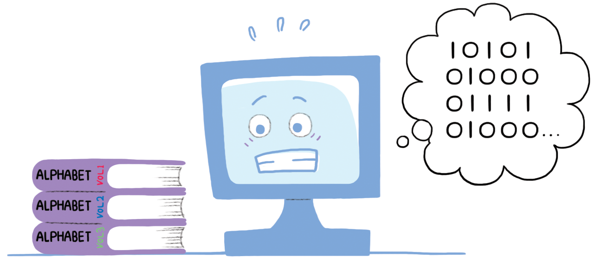
컴퓨터 과학 핵심 개념
오늘날 컴퓨터는 정보를 표현하기 위해서 이진수 체계를 사용합니다. 단지 숫자가 두개만 사용되기 때문에 이진수 체계라고 불립니다. 사람은 일반적으로 십진법(base 10)을 사용한데 반해 이진법(base 2)으로 알려져 있습니다. 0 과 1 각각은 비트(bit, binary digit)로 불립니다. 비트는 컴퓨터 주기억장치에 스위치가 온오프 상태의 트랜지스터나 충방전된 캐패시터로 표현됩니다.

전화선이나 무선 라디오를 통해서 데이터가 전송될 때, 고음과 저음 음조(tone)가 1과 0을 표현하기 위해서 사용됩니다. 자기 디스크(하드디스크나 플로피 디스크)나 테이프에서는 비트가 코팅된 표면에 자기력장 방향(북-남, 남-북)으로 표현됩니다.

오디오 CD, CD-ROM, DVD는 광학적으로 비트를 저장합니다. 비트 정보를 저장하는 표면은 빛을 반사하거나 하지 않습니다.

한 비트 자체는 많은 정보를 담을 수 없어 0~255까지 숫자를 표현할 수 있는 8개를 그룹으로 묶습니다. 비트 8개를 그룹으로 묶어 바이트(byte)라고 합니다.
컴퓨터 속도는 한번에 처리하는 비트의 숫자에 달려있다. 예를 들어, 32비트 컴퓨터는 한번의 연산으로 32비트의 숫자를 처리할 수 있고 16비트 컴퓨터는 32비트 숫자를 작은 조각으로 쪼개서 처리하게 되어 속도가 느리다.
궁극적으로 비트와 바이트는 컴퓨터가 숫자, 텍스트, 다른 종류의 정보를 저장하고 전송하기 위해서 사용하는 것이다. 앞으로 몇몇 활동에서 다른 종류의 정보를 어떻게 컴퓨터에서 표현되는지 학습하게 될 것입니다.
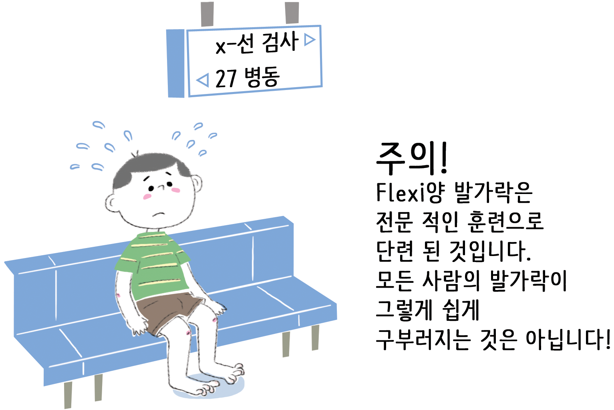
해답과 힌트
이진수 (5 페이지)
3 은 카드 2, 1 12 는 카드 8, 4 19 는 카드 16, 2, 1
어떤 숫자를 만들기 위해서 단 하나의 방법만 있다.
만들 수 있는 가장 큰 수는 31. 가장 작은 숫자는 0. 그 사이 모든 숫자를 만들 수 있고, 각 숫자를 표현하는 방법은 유일하다.
응용문제: 하나씩 숫자를 증가시키려면, 모든 카드가 윗면이 될 때까지 오른쪽부터 왼쪽까지 모든 카드를 뒤집는 것이다.
이진수 계산 (7 페이지)
10101 = 21, 11111 = 31
비밀 메시지 보내기 (8 페이지)
해독된 메시지: HELP IM TRAPPED
31보다 큰 수 세기 (10 페이지)
처음부터 숫자를 더한다면, 합계는 항상 급수열의 다음 숫자보다 1 이 작은 수가 된다. 플레시 양의 발가락은 1024 × 1024 = 1,048,576, 즉 0 부터 1,048,575 까지
이진수 더 알아보기 (11페이지)
오른쪽 끝에 0을 놓게 되면, 숫자는 항상 배수가 된다.
1을 포함하는 모든 장소는 이전 값의 배수가 된다. 그래서 총수는 배수가 된다. (10진수의 경우 0을 오른쪽 끝에 놓게 되면 10을 곱한 결과가 된다.)
컴퓨터는 모든 문자를 저장하기 위해서 7 비트가 필요하다. 128 문자까지 가능하다. 일반적으로 1 바이트 8비트에 7 비트가 저장되고 1 비트는 버려진다.
숫자로 색깔 표현하기—이미지 표현 (image representation)
개요
컴퓨터는 습작물, 사진, 그림을 저장하는데 단지 숫자만을 사용한다. 다음의 활동은 컴퓨터가 어떻게 이러한 작업을 하는지를 보여준다.
교과학습 연계
- 수학: 기하학: 모양(Shape)과 공간(Space)
- 기술: 다른 종류 데이터를 표현하는데 정수 사용
- 기술: 반복되는 데이터가 사용하는 공간 절약하기
기술
- 계수 (Counting)
- 도식화 (Graphing)
나이
- 7세 이상
학습 교재
- OHP 마스터에서 복사한 OHP 시트: 숫자로 색깔 표현하기
- 아이마다 필요한 것 – 워크시트 활동: 어린이 팩스 – 워크시트 활동: 자신만의 사진 만들기
숫자로 색깔 표현하기 (image representation)
|
|
|
|
|
들어가며
토의 질문
- 팩시밀리 기계(팩스, fax)는 무슨 일을 하나요?
- 컴퓨터가 어떤 상황에서 그림을 저장할 필요가 있나요? (그림을 그리는 프로그램, 그래픽 게임, 멀티미디어 시스템)
- 컴퓨터는 숫자만 사용할 수 있는데 어떻게 그림을 저장할까요?
(학습 활동을 위해서 아이들이 팩시밀리를 사용하여 메시지를 주고 받게 준비하는 것도 좋습니다.)
OHP 시트를 사용한 시연

컴퓨터 화면(computer screen)은 픽셀(pixels, picture elements)로 불리는 작은 점들의 격자로 나눠져 있다.
흑백 그림에서 각 픽셀은 검은색이거나 하얀색이 된다.
문자 "a"를 확대해서 픽셀을 살펴보자. 컴퓨터가 그림을 저장할 때, 필요한 전부는 어느 점이 검은색이고, 어느 점이 흰색인가하는 정보다.

위 그림은 문자 "a" 그림이 어떻게 숫자로 표현되는지를 보여준다. 첫 번째 줄은 하얀 픽셀 하나, 검은 픽셀 세 개, 다시 하얀 픽셀 하나다. 그래서 첫 줄은 1,3,1로 표현된다.
첫 번째 숫자는 항상 하얀 픽셀과 관계된다. 만약 첫 번째 픽셀이 검정색이면, 첫 번째 줄은 0으로 시작한다.
17 쪽의 연습문제에는 방금 전에 보여준 방법을 활용하여 아이들이 복호화(decode)할 그림이 있습니다.
복사 마스터: 숫자로 색깔 표현하기
 < 컴퓨터 화면에 보이는 “a” 문자. 문자 이미지“a”를 픽셀이 보이도록 확대한 뷰(view) >
< "동일한 이미지를 숫자 코드(code)로 표현한 것" >
< 컴퓨터 화면에 보이는 “a” 문자. 문자 이미지“a”를 픽셀이 보이도록 확대한 뷰(view) >
< "동일한 이미지를 숫자 코드(code)로 표현한 것" >
 < "공백 격자 그리드(grid) (교수 목적 제공)" >
< "공백 격자 그리드(grid) (교수 목적 제공)" >
워크시트 활동: 어린이 팩시밀리
첫 번째 그림이 가장 쉽고, 마지막 그림이 가장 복잡하다. 실수하기 쉬워서 색칠할 연필과 지우개를 사용하기를 권한다.


워크시트 활동: 자신만의 그림을 그리자
이제 숫자가 그림을 어떻게 표현하는지를 배웠습니다. 친구를 위해서 여러분이 직접 그림을 만들어 보세요. 위쪽 격자 그리드에 그림을 그리고, 다 그렸으면 아래쪽 격자 그리드 옆에 숫자로 코드를 적으세요. 점선을 따라서 자르고, 아래쪽 격자 그리드를 친구가 색칠하도록 전달해 주세요. (노트: 원치 않으면 전체 격자 그리드를 모두 사용하지 않아도 됩니다. 그림이 격자 전체를 차지하지 않는다면, 아래 몇몇 줄을 공백 상태로 두세요.)
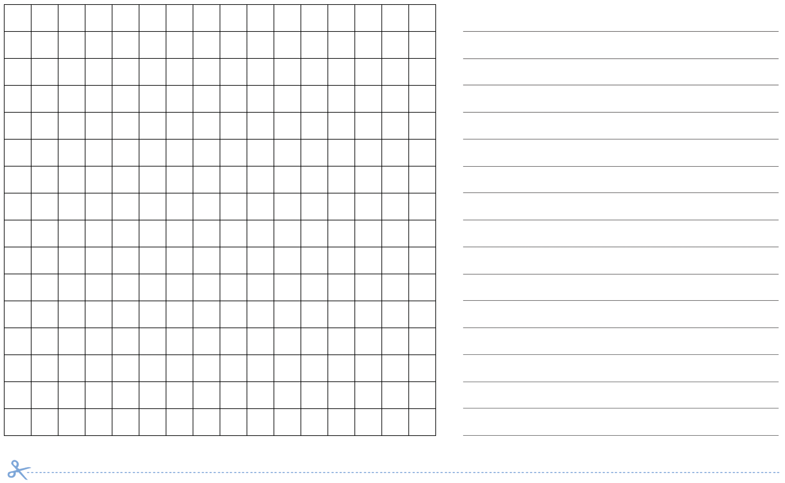
- 아래를 절취하세요
워크시트 활동: 자신만의 그림을 그리자 (심화문제)
심화문제: 채색된 이미지를 표현하려면, 색깔을 표현하는 숫자를 사용한다. (예, 0 은 검정, 1 은 빨강, 2 는 녹색 등) 두 숫자로 픽셀을 표시한다: 첫 번째 숫자는 전에 표기한 것과 같고 두 번째 숫자가 색깔을 표시한다. 친구를 위해 색깔 그림을 만들어 보세요. 각 숫자가 무슨 색깔을 의미하는지를 사전에 친구에게 알려주는 것을 잊지 마세요.
- 아래를 절취하세요
변형과 확장
- 격자 위에 종이에 그려보세요. 최종 이미지를 격자 그리드 없이 볼 수 있게 해보세요. 이미지가 훨씬 더 선명해 집니다.
- 격자 그리드에 색깔을 칠하는 대신에 좀더 커다란 격자 그리드 위에 아이들이 사각형 스티커 종이를 사용하거나 물체를 놓을 수도 있어요.
토의 점
길이가 이진수로 표현되기 때문에, 픽셀 길이에 제한이 있는 것이 보통입니다. 만약 7 까지만 숫자를 사용할 수 있는데, 어떻게 12 개 검정 픽셀을 표현할 수 있을까요? (좋은 방법은 일련의 7 개 검정 픽셀, 0 개 하얀색 픽셀, 그리고 일련의 5개 검정 픽셀로 표현하는 것입니다.)
컴퓨터 과학 핵심 개념
팩시밀리 기계는 흑백 종이를 약 1000 × 2000 픽셀로 스캔해서 모뎀을 사용하여 다른 팩시밀리 기계에 보내는 정말 단순한 컴퓨터다. 다른 팩시밀리 기계는 전송 받은 픽셀을 종이에 출력한다. 종종, 팩스 이미지가 넓은 흰 공백(예, 한계(margin)) 혹은 검은 픽셀 (예, 가로줄)을 가지고 있다. 색깔 있는 그림은 훨씬 더 많은 중복이 있다. 이런 이미지를 저장하려고 필요한 많은 저장공간을 절약하기 위해서, 프로그래머는 다양한 압축 기술을 사용한다. 여기서 사용되는 방법은 "런 길이 부호화(run-length coding)"로 불리고, 이미지를 압축하는 효과적인 방법이다. 이미지를 압축하지 않으면, 사진을 보내는데 오랜 시간이 걸리고 추가로 더 많은 저장공간이 필요하다. 따라서, 웹페이지에 사진을 게시하거나 팩스를 보내는 것이 가능하지 않을 수 있다. 예를 들어, 팩스 이미지는 일반적으로 원본 크기의 7 분의 1 로 압축된다. 압축 없이 전송하는데는 7 배 많은 시간이 걸린다.
사진과 그림은 다양한 압축기법을 사용하여 원본의 10분의 1, 혹은 100분의 1의 크기로 압축된다. 이렇게 압축해서 더 많은 이미지를 동일한 디스크에 저장할 수 있고, 인터넷을 통해서 사진과 그림을 보는데 짧은 시간내에 볼 수 있다는 의미가 된다.
프로그래머는 적절한 압축 기법을 선택해서 이미지를 전송할 수 있다.
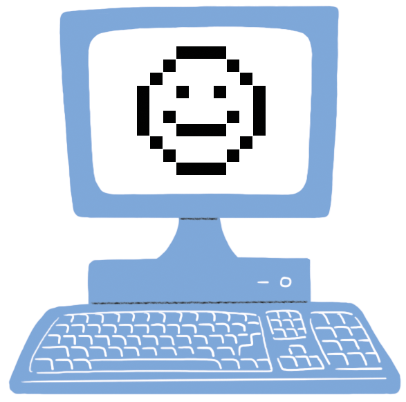
해답과 힌트
어린이 팩시밀리 워크시트 정답
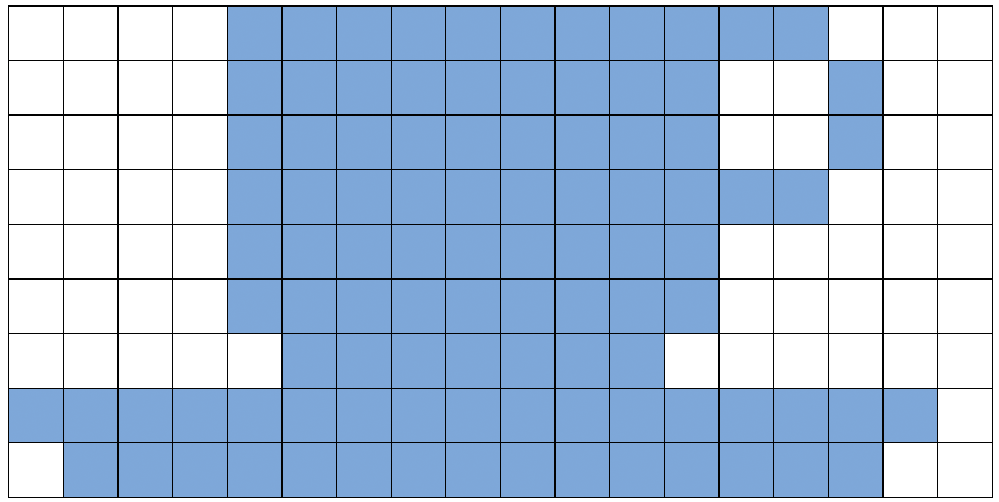 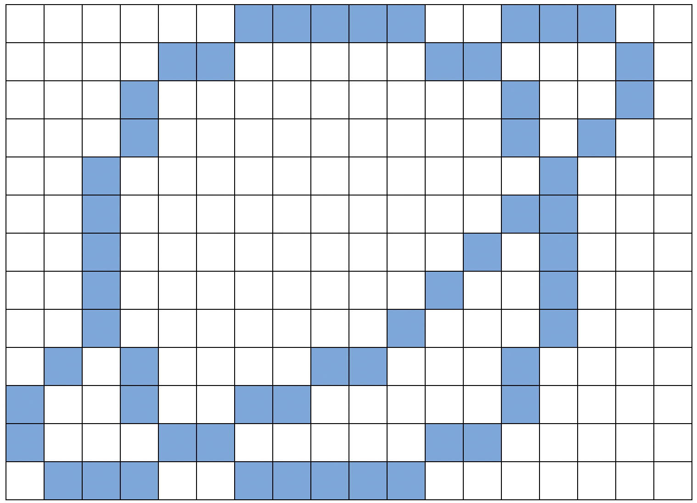 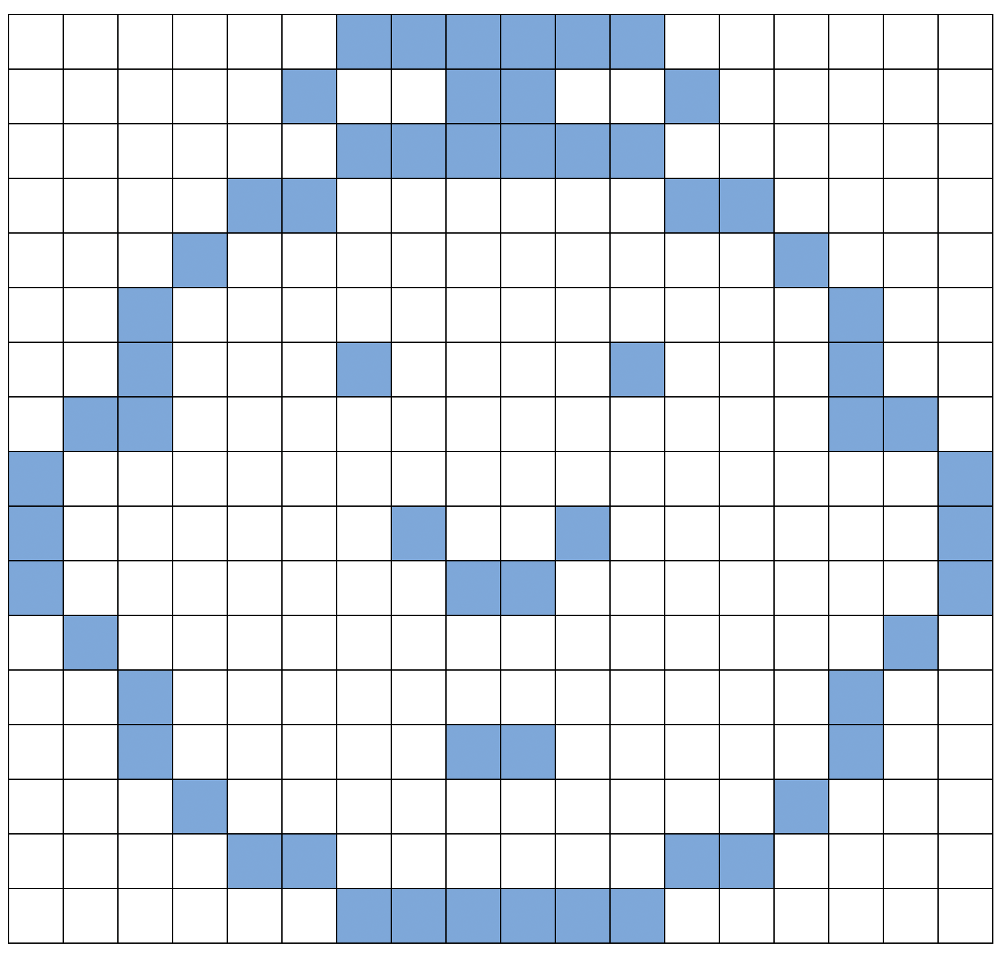
다시 말할 수 있어요!—텍스트 압축 (Text compression)
개요
컴퓨터가 정보를 저장하기 위한 공간에는 한계가 있어서, 가능하면 효율적으로 정보를 표현할 필요가 있다. 이 방법을 “압축”(compression)이라고 한다. 저장하기 전에 데이터를 부호화(coding)하고 정보를 끌어낼 때는 복호화(decoding)해서, 컴퓨터에 더 많은 데이터를 저장하고 인터넷을 통해서 더 빨리 보낼 수 있게 한다.
교과학습 연계
- 영어: 단어와 텍스트 패턴 인식
- 기술: 반복되는 데이터가 사용하는 공간 절약하기
기술
작성된 텍스트 복사하기
나이
- 9세 이상
학습 교재
- OHP 마스터에서 복사한 OHP 시트: 다시 말할 수 있어요!
- 아이마다 필요한 것 – 워크시트 활동: 다시 말하기! – 워크시트 활동: 심화 문제 – 워크시트 활동: 짧고 간결하게 – 워크시트 활동: 심화 문제 (상급자)
다시 말할 수 있어요! (Text compression)
|
|
|
|
|
들어가며
컴퓨터는 많은 데이터를 저장하고 전송해야 합니다. 그래서 너무 많은 저장 공간을 사용하거나, 네트워크를 통해 정보를 보내는데 시간이 오래 걸리면 안돼서, 텍스트를 다음과 같이 압축합니다.
시연 및 토론
“비(rain)” OHP 로 보여주세요 (25 쪽). 다음 시(poem)에서 문자 패턴을 찾아보세요. 반복되는 2 개 이상의 문자, 단어, 문구를 찾을 수 있나요? (아래 도식에서처럼 박스를 채워넣으세요, 참고. pitter patter 타닥타닥 소리)
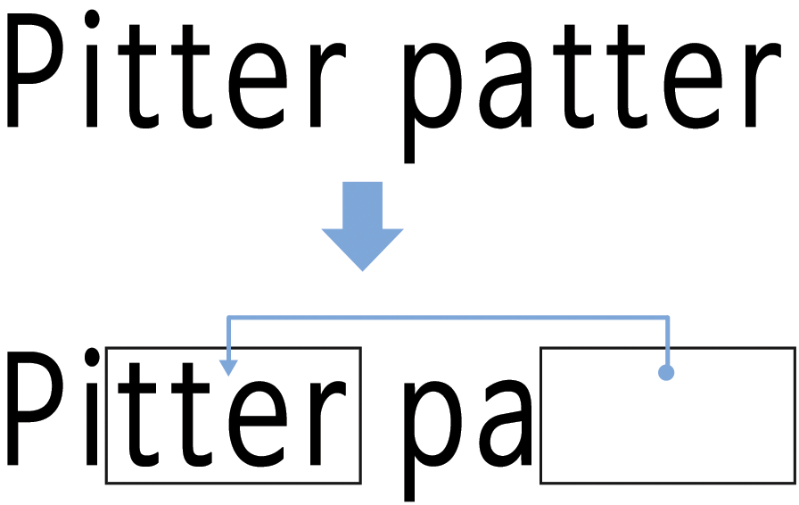
복사 마스터: 다시 말할 수 있어요!

- Rain: 비
- pitter patter: 빗소리
- Listen to:귀 기울여 듣다
- window pane: 창유리
복사 마스터: 다시 말할 수 있어요!
다음 시에서 많은 단어와 글자가 빠져있습니다. 여러분이 빠진 단어와 글자를 채워 넣어 온전한 시가 될 수 있도록 만들어 주세요. 화살표가 가리키는 박스에서 채워 넣을 단어와 글자를 찾을 수 있습니다.

이제 간단한 시나 동요를 골라서 여러분 자신만의 퍼즐을 만들어보세요. 여러분이 만든 화살표가 항상 이전 텍스트 부분을 가리키는지를 꼭 확인하세요. 우리가 읽는 동일한 방식으로 여러분의 시는 왼쪽에서 오른쪽으로 위에서 아래로 복호화할 수 있어야 합니다.
도전문제 : 여러분이 얼마나 적은 단어를 필요로 하는지 살펴보세요.
제안: “Three Blind Mice”, “Mary Mary Quite Contrary”, “Hickory Dickory Dock” 혹은 Dr Seuss 책도 시도해 보세요.
힌트: 너무나 많은 화살표를 피하세요. 글을 써가면서, 글자와 단어 주변에 많은 공백을 둬서 박스 내부와 이를 가리키는 화살표 사이에 박스를 위한 공간을 확보하세요.
시를 먼저 쓰고 나서 박스를 어디에 위치할지를 결정한다면 퍼즐 설계가 훨씬 쉬워요.
워크시트 활동: 심화 문제
이 퍼즐을 어떻게 풀 수 있나요?

가끔 빠진 텍스트가 자기 자신의 일부를 가리킵니다. 이런 경우 글자가 왼쪽부터 오른쪽으로 복사된다면 올바르게 복호화됩니다. 필요하기 전에 각 문자가 복사되어 사용가능해집니다. 특별히 긴 순서의 문자나 패턴있다면, 컴퓨터에서 유용합니다.
여러분 자신만의 그림을 몇개 그려보세요.
컴퓨터에 박스와 화살표는 숫자로 나타납니다. 예를 들어,
Banana
Ban(2,3)로 쓰여집니다. 복사를 위해서 "2"는 시작점으로 처음에서 2 글자 다음에서 시작한다는 의미가 된다.
Ban_ _ _
"3"은 연속된 3 개 문자 복사를 뜻합니다.
Ban_ _
Banan_
Banana
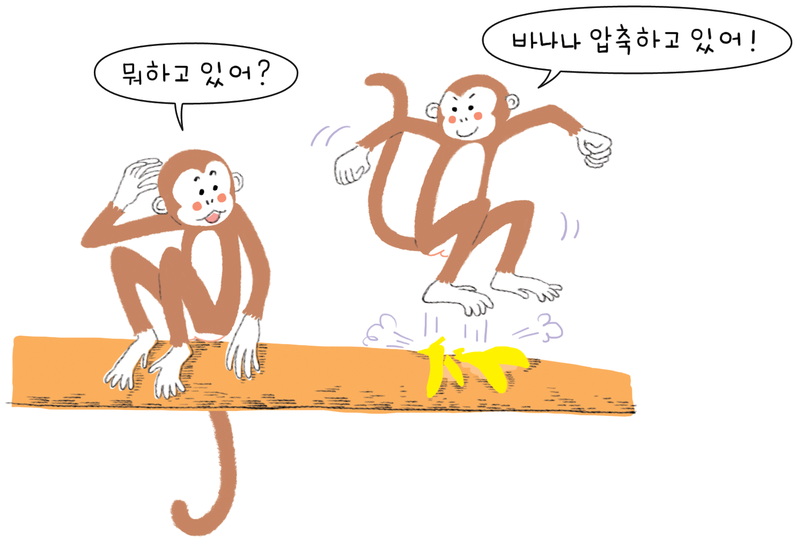
숫자 두 개가 단어를 복호화하는데 사용되었는데, 대체로 둘 혹은 이상의 문자 그룹만을 사용할 때 압축에 효과가 있습니다. 그렇지 않은 경우 공간이 절약되지 못합니다. 사실, 숫자 두개를 사용하여 한 문자를 부호화한다면 파일 크기는 올라갈 수 있어요.
컴퓨터가 압축하는 방식과 동일하게 자신만의 단어 몇개를 만드세요. 여러분의 친구가 복호화할 수 있을까요?
워크시트 활동: 짧고 간결하게
여러분은 여기에서 얼마나 많은 단어를 필요로 하나요?
여러분 자신을 가능한 많은 정보를 디스크에 저장하려고 하는 컴퓨터라고 가정해봅시다. 이미 앞에서 나온 두개 이상의 문자 그룹을 선을 그어 지우세요. 포인터로 대체될테니 이들은 더 이상 필요하지 않아요. 목적은 가능한 많은 문자를 줄을 그어 지우는 것입니다.
I know an old lady who swallowed a bird
How absurd! She swallowed a bird!
She swallowed the bird to catch the spider
That wriggled and jiggled and tickled inside her
She swallowed the spider to catch the fly
I don’t know why she swallowed a fly
Perhaps she’ll die…
워크시트 활동: 심화 문제 (상급자)
정말로 어려운 압축에 도전할 준비가 되셨나요?
아래 이야기에 대해 컴퓨터 프로그램을 실행하여 1,633 문자가 줄을 그어 지워질 수 있다는 것을 확인했다. 여러분은 얼마나 많이 찾아 지울 수 있나요? 단지, 두개 이상의 반복되는 문자만을 줄을 그어 제거할 수 있다는 것을 기억하세요. 행운을 빕니다.
Once upon a time, long, long ago, three little pigs set out to make their fortunes. The first little pig wasn’t very clever, and decided to build his house out of straw, because it was cheap. The second little pig wasn’t very clever either, and decided to build his house out of sticks, for the “natural” look that was so very much in fashion, even in those days. The third little pig was much smarter than his two brothers, and bought a load of bricks in a nearby town, with which to construct a sturdy but comfortable country home.
Not long after his housewarming party, the first little pig was curled up in a chair reading a book, when there came a knock at the door. It was the big bad wolf, naturally.
“Little pig, little pig, let me come in!” cried the wolf.
“Not by the hair on my chinny-chin-chin!” squealed the first little pig.
“Then I’ll huff, and I’ll puff, and I’ll blow your house down!” roared the wolf, and he did huff, and he did puff, and the house soon collapsed. The first little pig ran as fast as he could to the house of sticks, and was soon safe inside. But it wasn’t long before the wolf came calling again.
“Little pig, little pig, let me come in!” cried the wolf.
“Not by the hair on my chinny-chin-chin!” squealed the second little pig.
“Then I’ll huff, and I’ll puff, and I’ll blow your house down!” roared the wolf, and he did huff, and he did puff, and the house was soon so much firewood. The two terrified little pigs ran all the way to their brother’s brick house, but the wolf was hot on their heels, and soon he was on the doorstep.
“Little pig, little pig, let me come in!” cried the wolf.
“Not by the hair on my chinny-chin-chin!” squealed the third little pig.
“Then I’ll huff, and I’ll puff, and I’ll blow your house down!” roared the wolf, and he huffed, and he puffed, and he huffed some more, but of course, the house was built of brick, and the wolf was soon out of breath. Then he had an idea. The chimney! He clambered up a handy oak tree onto the roof, only to find that there was no chimney, because the third little pig, being conscious of the environment, had installed electric heating. In his frustration, the wolf slipped and fell off the roof, breaking his left leg, and severely injuring his pride. As he limped away, the pigs laughed, and remarked how much more sensible it was to live in the city, where the only wolves were in the zoo. And so that is what they did, and of course they all lived happily ever after.
컴퓨터 과학 핵심 개념
컴퓨터 저장용량은 믿기 힘든 속도로 빠르게 늘어나고 있다. 지난 25년간 일반인들이 사용하는 컴퓨터 저장용량은 백만 배 늘어났다. 하지만, 컴퓨터에 저장할 더 많은 것이 있다. 컴퓨터는 책 전체를 저장할 수 있고, 심지어 도서관의 모든 책, 음악, 영화도 저장공간만 허락된다면 저장할 수 있다. 큰 파일은 다운로드 하는데 긴 시간이 걸려서 인터넷에서도 골치거리다. 또한, 컴퓨터를 점점 더 소형화 하여 스마트폰과 스마트워치에 좀더 많은 정보가 저장되길 기대한다.
하지만, 이 문제에 해결책은 있다. 더 많은 저장 공간이나 더 빠른 네트워크를 구축하는 대신에, 데이터를 *압축해서** 적은 공간을 차지하도록 할 수 있다. 데이터를 압축하고 압축을 푸는 과정은 컴퓨터가 자동으로 해준다. 아프로 디스크는 점점 더 많은 정보를 저장하게 되고, 웹페이지는 더 빨리 화면에 정보를 뿌려주지만, 실제로 컴퓨터가 더 많은 연산처리를 한다는 것에 주목해야 한다.
많은 압축기법이 발명되었다. 이 활동에 사용된 방법이면서, 먼저 출현한 텍스트를 가리키는 원칙을 가진 압축기법은 1970년대 두명의 이스라엘 교수님이 발명하신 ‘Ziv-Lempel coding,’ 줄여서 ‘LZ coding’ 이라고 한다. 이 방법은 어떤 언어에도 사용될 수 있는 범용성이 있고, 쉽게 데이터 크기를 반으로 압축할 수도 있다. 개인용 컴퓨터의 zip 파일을 지칭하기도 하고, GIF 이미지, 초고속 모뎀에도 사용된다. 모뎀의 경우 전화선을 통해서 전송에 필요한 데이터 양을 줄여 더 빨리 데이터가 전송이 되도록 한다.
더 많이 출현하는 문자가 다른 것보다 짧은 부호를 가져야 한다는 아이디어에 기초한 다른 방법도 있다. 모스 부호(Morse code)가 이러한 아이디어를 차용했다.
해답과 힌트
다시 말할 수 있어요! (복사 마스터)
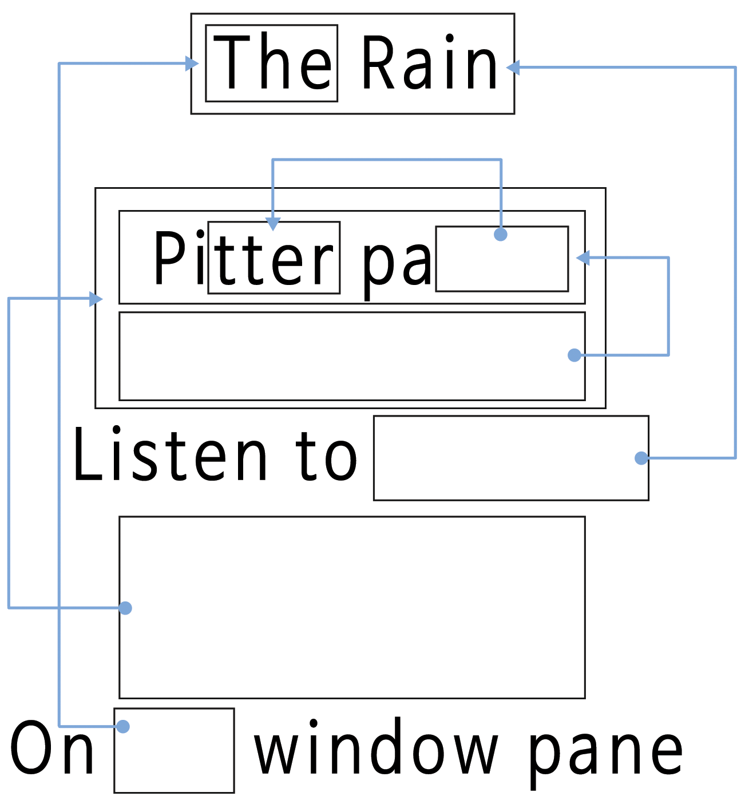
다시 말할 수 있어요!
Pease porridge hot, Pease porridge cold, Pease porridge in the pot, Nine days old.
Some like it hot, Some like it cold, Some like it in the pot, Nine days old.
카드 뒤집기 마술 — 오류 탐지 및 수정 (error detection and correction)
개요
데이터가 컴퓨터 디스크에 저장되거나 A 컴퓨터에서 B 컴퓨터로 데이터가 전송될 때, 보통 데이터처리할 때 변경될 것이라고 생각하지는 않는다. 하지만 때때로 데이터에 오류가 발생하고, 우연히 데이터 변경이 일어나기도 한다. 이번 활동은 마술을 사용해서 손상된 데이터를 어떻게 탐지하고 오류난 데이터를 어떻게 교정하는지 익힐 것입니다.
교과학습 연계
- 수학: 숫자 — 연산과 추정 탐색.
- 수학: 대수 — 패턴과 관계 탐색, 결측값 해답 찾기.
- 수학: 행(Row)과 열(Columns), 좌표
- 기술: 데이터 정합성 맞추기.
기술
- 계수 (counting)
- 짝수와 홀수 인식
나이
- 7세 이상
학습 교재
- 한쪽 면만 색칠된 냉장고 자석 36개 한 벌
- 시연을 위해서 자석이 붙을 수 있는 금속판 (화이트보드 추천) 아이 한 쌍이 필요한 것
- 한쪽 면만 색칠된 똑같은 카드 36개
마술 (error detection and correction)
|
|
|
|
|
시연
마술사가 될 기회가 있어요.
동일한 양면 카드가 필요합니다. (한쪽 면만 색칠된 커다란 종이를 자르세요) 한쪽 면만 색칠된 평평한 냉장고 자석 카드를 사용하기가 시연 목적으로 좋습니다.
- 다음과 같이 5 × 5 정사각형에 임의로 앞뒤가 뒤섞인 카드를 놓을 어린이를 고르세요.
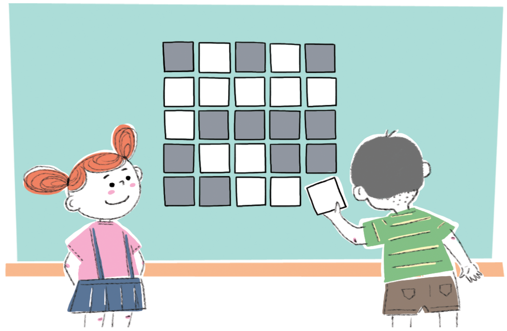
"조금 더 어렵게 만들도록" 추가로 행(row)과 열(column)을 덧붙이세요.

추가되는 카드들이 묘기의 가장 중요한 요소입니다. 추가되는 카드를 골라서 각 행과 열에 짝수 색깔 카드가 될 수 있도록 맞춥니다.
- 선생님이 눈을 감고 있는 동안 아이에게 카드 하나를 뒤집게 합니다. 바뀐 카드를 가진 행과 열은 이제 홀수개의 색깔 카드를 가지게 되어서 바뀐 카드를 쉽게 찾을 수 있습니다.
묘기가 어떻게 수행되었는지 아이들이 추론할 수 있을까요?
아이들에게 묘기 설명하기:
- 둘이 짝이 되어서, 어린이들이 5 × 5 카드를 자리에 놓습니다.
- 각 행과 열에는 얼마나 많은 색칠된 카드가 있나요? 짝수인가요, 홀수인가요? 기억하세요 0은 짝수입니다.
- 이제 각 행에 6번째 카드를 추가하는데, 색칠 카드가 항상 짝수가 되도록 합니다. 이 추가 카드를 패리터(parity) 카드라고 합니다.
- 아래쪽을 따라서 6번째 카드 행을 추가하는데, 각 열의 색칠 카드의 수가 짝수가 되도록 합니다.
- 이제 카드를 한 장 뒤집습니다. 행과 열에서 무엇을 눈치채셨습니까? (색칠 카드의 수가 홀수가 됩니다.) 패리티 카드는 언제 오류가 발생했는지를 보여주기 위해 사용됩니다.
- 이제 순서를 바꿔서 ‘묘기’를 부려봅시다.
확장 활동
- 다른 물체를 사용해 봅시다. 두 개의 상태를 가진 어떤 것도 무방합니다. 예를 들어, 가지고 노는 카드, 동전(앞뒷면), 이진수 체계와 연관되도록 과 0과 1로 인쇄된 카드도 됩니다.
- 만약 두개 혹은 그 이상의 카드가 뒤집어진다면 무슨 일이 생길까요? (어떤 것이 변경되었다는 것을 말할 수 있지만, 정확하게 어느 두 장의 카드가 뒤집혔는지를 꼭 집어서 말하는 것은 항상 가능하지는 않습니다. 통상 두 짝의 카드 중에 하나로 범위를 좁힐 수 있습니다. 4장이 뒤집히는 경우, 나중의 모든 패리티 비트가 정상일 수 있어서 오류가 탐지되지 않고 그냥 지나칠 수 있습니다.)
- 다른 흥미로운 카드놀이 연습은 오른쪽 아래 카드를 생각해 보는 것이다. 위쪽 열에 대해서 올바른 것을 고른다면, 왼쪽 행에 대해서도 그럴까요? (답은 항상 그렇다 입니다.)
- 이 카드놀이 연습에서는 짝수 색칠 카드를 사용하여 짝수 패리티(even parity)를 사용했다. 홀수 패리티(odd parity)로도 할 수 있을까? (가능하지만, 만약 행과 열의 숫자가 모두 짝수이거나 홀수이면, 오른쪽 아래 카드는 행과 열에 대해서 같다. 예를 들어, 5 × 9 나 4 × 6 배치는 작동하지만, 3 × 4 배치는 작동하지 않는다.)
오류 검사의 실사례 — ISBN 코드
동일한 검증 기법이 책코드에도 사용된다. 출판된 책은 책 뒷면에 10 자리 코드가 있다. 10 번째 자릿수는 검증 자리수로 카드놀이 연습에서 살펴본 패리티 비트(parity bit) 같은 것이다.
ISBN (International Standard Book Number)을 사용한 책을 주문한다면, 출판사는 오류가 있는지 점검을 한다는 의미가 됩니다. 출판사는 간단히 체크썸(checksum)을 살펴볼 것입니다. 이와 같은 방식으로 여러분은 잘못된 책을 기다리다 끝나지 않게 됩니다.
다음에 체크썸을 해결하는 방법이 있습니다.
첫째 자리는 10 을, 둘째 자리는 9 를, 셋째 자리는 8 을, 계속해서 내려가서, 아홉번째 자리는 2 를 곱한다. 그리고는 이들 각 값을 하나이 값으로 합친다.
예를 들어, ISBN 0-13-911991-4 는 다음과 같다.
(0 × 10) + (1 × 9) + (3 × 8) + (9 × 7) + (1 × 6) + (1 × 5) + (9 × 4) + (9 × 3) + (1 × 2) = 172
그리고 이 값을 11 로 나눈다. 나머지는 무엇일까?
172 ÷ 11 = 몫 15 나머지 7
만약 나머지가 0 이면, 체크썸은 0 이다. 그렇지 않은 경우 11 에서 나머지를 빼서 체크썸을 얻는다.
11 – 7 = 4
다시 돌아가서, 이 숫자가 ISBN 의 마지막 숫자인가? 예 맞습니다.
ISBN 의 마지막 숫자가 4 가 아니라면, 뭔가 잘못된 것을 알 수 있다.
10 을 체크썸 값으로 가지는 것도 가능하다. 이 경우 한 자릿수를 추가로 필요로 한다. 이것이 생겼을 경우, X 문자가 사용된다.

검증 자릿수를 사용하는 또 다른 사례는 식료 잡화품에 붙어있는 바코드(bar code)다. 바코드는 다른 공식을 사용한다. 만약 바코드가 잘못 읽힌다면, 마지막 자릿수는 계산된 값과 달라야 한다. 이런 경우가 발생하면, 스캐너는 삑 소리를 내고, 계산원은 바코드를 다시 스캔한다.

항상 체크썸은 맞을까?
때때로 오류가 생깁니다.
흔한 오류는 다음과 같습니다.
- 숫자의 값이 변합니다.
- 두 인접한 숫자가 서로 뒤바뀝니다.
- 숫자가 중간에 삽입됩니다.
- 숫자가 빠져버립니다.
체크썸 10 자리 문자 X 가 표기된 책을 찾을 수 있나요? 발견하기 어렵지 않을 것입니다. 모두 11 자리 중에 1 자리는 X 를 가져야 하기 때문입니다.
탐지하기 어려운 오류는 어떤 것이 있을까요? 체크썸 값을 바꾸지 않고 숫자를 바꿀 수 있나요? 두 숫자가 바뀐다면 어떨까요? (흔한 컴퓨터 타이핑 오류)
컴퓨터 과학 핵심 개념
10 달러 현찰을 은행에 예금한다고 가정해 봅시다. 은행 창구 직원이 예치금을 컴퓨터에 타이핑하면 입력된 정보는 중앙 컴퓨터로 전송됩니다. 하지만, 예치금이 전송되는 동안에 회선에 장애가 발생했서 10 달러에 대한 코드값이 1,000 달러로 바뀌었다고 생각해 봅시다. 고객인 여러분의 입장에서는 문제가 아니지만, 분명 은행에게는 심각한 문제입니다.
전송된 데이터에 오류가 있는지 탐지하는 것은 중요합니다. 그래서 정보를 수신하는 컴퓨터는 데이터가 회선에 전자기적 간섭에 의해서 손상되었는지를 검증할 필요가 있습니다. 때때로, 오류도 함께 전송된 경우에는 원본 데이터를 다시 보낼 수도 있습니다. 하지만, 만약 물리적, 열, 자기적 혹은 전기적 방사선에 노출되어 손상된 경우 다시 전송하는 것이 여의치 못한 경우도 있습니다. 만약 저 먼 우주 탐사선으로부터 데이터를 전송받았는데 오류가 발생했다고 다시 재전송되기를 기다리는 것은 매우 지루하고 시간이 많이 걸릴 것입니다. (목성이 지구에 가장 가까울 때, 목성으로부터 라디오 신호를 얻는데 30분 가량 걸립니다.)
데이터가 언제 손상됐는지를 인지(오류 탐지, error detection)하고, 원자료를 복원(오류 수정, error correction)할 필요가 있습니다.
“카드 뒤집기”에 사용된 동일한 기법이 컴퓨터에도 적용됩니다. 비트를 가상의 행과 열에 놓아, 패리티 비트를 각 행과 열에 추가함으써, 오류가 발생했는지 여부와 어디에서 발생했는지도 탐지할 수 있습니다. 문제 비트는 다시 되돌려, 오류 수정을 수행합니다.
물론, 컴퓨터는 복수의 오류를 탐지 수정할 수 있는 좀더 복잡한 오류 통제시스템을 사용합니다. 컴퓨터 하드디스크는 오류 수정 목적으로 할당된 무척이나 넓은 저장공간을 가지고 있어서 디스크의 일부분이 고장 나더라도 잘 작동될 수 있습니다. 이러한 목적으로 사용되는 시스템은 패리티 방식과 밀접한 관련이 있습니다.
이 활동을 끝난 후에 조크 하나. Q: “Pieces of nine, pieces of nine”(아홉 조각, 아홉 조각)을 무엇이라 할까요? A: 앵무새 오류 (parroty error)

해답과 힌트
1 개 숫자 값이 증가하고, 1 개 숫자 값이 줄어드는 경우에는 총합이 동일하기 때문에 오류가 탐지되지 않습니다.
질문 20 개 — 정보 이론 (Information Theory)
개요
1,000 페이지 책에는 얼마나 많은 정보가 있을까요? 1,000 페이지 전화 번호부에 더 많은 정보가 있을까요? 1,000 페이지 백지에 더 많은 정보가 있을까요? 톨킨이 저작한 "반지의 제왕"에 더 많은 정보가 있을까요? 만약 정보의 양을 측정할 수 있다면, 정보를 저장하기 위해 얼마나 많은 저장공간이 필요한지 추정할 수 있습니다. 예를 들어, 공항에서 비행기에 가방에 단 3개 로마자로 ICN(인천), NRT(나리타), HKG(홍콩) 공항을 상상합니다. 다음 문장을 모음 없이 읽을 수 있습니까?
Ths sntnc hs th vwls mssng.
아마도 여러분은 "This sentence has the vowels missing"라고 제대로 읽을 것입니다. 모음에는 그다지 정보가 많지 않기 때문입니다. 이번 활동은 정보의 양을 측정하는 방법을 소개합니다.
교과학습 연계
- 수학: 숫자 — 숫자 탐구: 이상, 이하, 범위
- 수학: 대수 — 패턴과 시퀀스(Sequence, 순열)
- 영어: 철자, 텍스트 구성 요소 인식.
기술
- 숫자를 비교하고 범위가 정해진 수를 다룬다.
- 추론한다.
- 질문한다.
나이
- 10세 이상
학습 교재
- 처음 활동에는 어떠한 교재도 필요하지 않습니다. 확장활동으로 아이마다 필요한 것
- 워크시트 활동: 의사결정나무
질문 20개 (Information Theory)
토론
-
아이들과 아이들이 생각하는 정보가 무엇인지에 대해서 토론해 봅시다.
-
책에 정보의 양이 얼마나 되는지 어떻게 측정할 수 있을까요? 페이지 숫자가 중요할까요, 아니면 단어 숫자가 더 중요할까요? 이 책이 다른 책보다 더 많은 정보가 있을까요? 책이 몹시 지루한 책이거나, 반대로 특히 재미있는 책이라면 어떨까요? "뭐라, 뭐라, 뭐라(blah, blah, blah)"라는 문구만 포함된 400 페이지 책이 전화번호부보다 더 많은 혹은 더 적은 정보를 가지고 있습니까?
컴퓨터 과학자들은 메시지(혹은 책)가 얼마나 놀라운가에 따라 정보량을 측정한다고 설명합니다. 이미 알고 있는 것, 예를 들어 항상 걸어서 학교에 오는 아이가 "오늘은 걸어서 학교에 왔다"라고 말했다고 하면 여기에는 정보가 없습니다. 왜냐하면 놀랄 일이 아니기 때문입니다. 하지만 "오늘 헬리콥터 타고 학교에 왔어 "라고 했다면, 놀랄 것이고, 엄청난 정보를 우리에게 전한 것입니다.
메시지의 '깜짝도(suprise value)'는 어떻게 측정할까요?
하나의 방법은 정보를 추측하는 것이 얼마나 어려운지를 살펴보는 것이다. 만약 함께 걸어서 학교에 온 친구에게 "오늘 어떻게 학교에 왔는지 맞춰봐"라고 물어보면, 한번에 맞출 수 있습니다. 하지만 과거에 헬리콥터를 타고 온 적이 있으면 여러 번 추측할 필요가 있을지도 모르고, 우주선으로 여행을 한 적이 있다면, 더 시간이 걸릴지도 모릅니다.
메시지가 가지는 정보량은 그것을 짐작하는 것이 얼마나 쉬운지 어려운 것인지에 따라 측정합니다. 다음 게임은 이해하는 데 도움을 줄 것입니다.

질문 20개 활동
여기 질문 20개라는 게임을 소개합니다. 정답을 맞출 때까지, 아이들은 선택된 1 명의 아이에게 질문을 계속하고, 선택된 아이는 "예", "아니오" 둘 중 하나만 대답합니다. "예" 또는 "아니오"로 대답할 수 있다면 어떤 질문을 해도 좋습니다.
질문의 예
다음과 같이 생각하고, 맞춰보세요. - 1에서 100사이의 숫자 하나 - 1에서 1,000사이의 숫자 하나 - 1에서 1,000,000사이의 숫자 하나 - 임의의 정수 - 적당한 그룹으로 패턴을 가진 5개의 숫자 순열. 처음부터 끝까지 순서를 맞춰보세요.(예: 2, 4, 6, 8, 10)
질문 개수를 세어보세요. 질문 횟수를 정보량(value of the "information")이라고 합니다.
후속 토론
어떤 전략으로 질문을 했나요? 가장 효과적인 질문 전략은 무엇이었나요?
1에서 100 사이의 숫자를 찾기 위해서 만약 질문 범위를 절반으로 줄여간다면 단 7번의 질문으로 정답을 맞출 수 있다. 예를 들어,
50보다 작습니까? 예. 25보다 작습니까? 아니요. 37보다 작습니까? 아니요. 43 보다 작습니까? 예. 40 보다 작습니까? 아니요. 41 보다 작습니까? 아니요. 42네요! 예!
흥미로운 점은 질문의 범위가 1,000으로 확대된다면, 10배만큼 노력이 들지 않고, 단지 추가 질문 3개만이 필요하다. 질문의 범위가 두 배씩 증가할 때마다 정답을 찾기 위해서 한 개의 추가 질문만을 필요로 합니다.
다음 연계된 후속 활동으로 아이들에게 Mastermind 놀이를 추천드립니다.
확장: 메시지에 얼마나 많은 정보가 있을까요?
컴퓨터 과학자는 단순한 숫자 맞추기 게임 말고, 단어나 문장에서 어느 글자가 다음에 가장 나올 것인가 같이 다음 문자를 추측하는 게임도 합니다.
4~6개 단어로 구성된 짧은 문장으로 게임을 진행해 봅시다. 글자를 처음부터 끝까지 잘 정렬된 순서로 질문을 합니다. 왼쪽에서 오른쪽 순서로 문자를 맞춰보세요. 한 아이가 글자를 적고, 얼마나 많은 시도 끝에 올바르게 정답을 맞췄는지 횟수를 기록합니다. 예/아니오 답을 가진 질문은 모두 사용될 수 있습니다. 예를 들어, ‘t’가 있나요? 모음인가요? 알파벳의 m 앞에 오나요? 단어 사이의 공백도 문자로 간주되며 맞춰야 하는 대상이 됩니다. 순서를 바꿔가며 어느 메시지가 찾기 쉬운지 확인해 보세요.
워크시트 활동 : 의사결정나무
질문하는 전략에 대해서 익숙해졌다면, 질문을 하지 않고 메시지를 보낼 수 있다.
다음 도표를 "의사결정 나무"라고 부른다. 이 그림은 0 에서 7 사이 정수를 맞추기 위해 고안된 의사결정 나무 도표입니다. yes가 "예", no가 "아니오"가 no입니다.

숫자5를 맞추기 위해서 필요한 yes / no 결정은 무엇일까요?
임의 숫자를 맞추기 위해서 yes / no 결정이 몇 번이나 필요할까요?
이제 뭔가 멋진 일을 살펴보시죠. 의사결정나무의 가장 아래 0,1,2,3 …의 숫자 아래에, 이진수를 써 봅시다. (활동 1 참조)
나무를 유심히 살펴보세요. No가 "아니오" 0을, yes가 "예" 1로 나타내면, 무엇이 보이나요? 숫자 추측 게임에서, 질문을 선택하는 하는데 응답 순서가 정확하게 숫자를 표현하는 방식과 동일합니다.
0에서 15사이 정수를 맞추기 위한 의사결정 나무를 직접 만들어 봅시다.
심화문제: 누군가의 나이를 맞추려면 어떤 종류의 의사결정 나무를 사용해야 할까요? 문장의 다음 글자를 맞추려면 어떤 의사결정나무가 있어야 할까요?
컴퓨터 과학 핵심 개념
저명한 미국 수학자 (저글러이며, 외발 자전거 선수) 클로드 섀넌(Claude Shannon)은 이 게임으로 많은 실험을 했습니다. 그는 정보량을 비트 (각 "예/아니오" 응답이 0/1 비트에 상응)로 측정했습니다. 메시지 정보량은 이미 얼마나 알고 있는냐에 달려있다는 것을 발견했습니다. 때때로 질문 하나로 다른 많은 질문을 할 필요를 없게 만듭니다. 이 경우 메시지의 정보량은 매우 적습니다. 예를 들어, 동전던지기 한번의 정보는 통상 1 비트(앞면, 뒷면)입니다. 하지만, 동전의 양면 중 한 면이 편향(bias)되어서 10번 던져 9번 앞면이 나온다면, 정보량은 더 이상 1 비트가 아니고, 믿든 믿지 않든, 1비트보다 적습니다. 어떻게 동전 던지기 결과를 1 회 미만의 질문으로 알 수 있는 것일까요? 간단합니다. 다음과 같은 질문을 하면 됩니다. "다음 2번 동전 던지기 결과 모두 앞면이 나왔나요?" 편향되어 있는 동전 던지기 결과는 이 질문에 약 80% 확률로 “예”, “아니요”가 나온 경우에는 두 개의 추가 질문을 해야 합니다. 하지만, 평균적으로, 동전을 던질 때마다 1회 미만의 질문을 할 것이다.

섀논은 메시지 정보량을 엔트로피(“entropy”) 라고 명명했습니다. "엔트로피"는 동전 던지기의 경우는 두 사건(앞면/뒷면)처럼 사건의 수(number) 뿐만 아니라 그것이 일어나는 확률(probability)도 영향을 받습니다. 있을 수 없는 사건, 즉 놀라운 정보는 해당 메시지에 대해 많은 횟수의 질문이 필요한데, 이유는 우리가 아직 알지 못하는 더 많은 정보를 알려주기 때문입니다. 마치 헬리콥터를 타고 학교에 가는 상황처럼 말입니다.
메시지 엔트로피는 컴퓨터 과학자에게 매우 중요합니다. 엔트로피보다 적은 공간을 차지하도록 메시지를 압축할 수 없습니다. 가장 압축이 좋은 시스템은 숫자 맞추기 게임과 동일합니다. 컴퓨터 프로그램이 '추측'을 하는 것이기 때문에, 질문 목록은 나중에라도 다시 재구성될 수 있다. 그래서 정답(비트)이 저장이 되어 있으면, 정보를 다시 재구성할 수 있다! 가장 효율적인 압축 시스템은 텍스트 파일을 원래 크기의 4분의 1 까지 압축할 수 있습니다. 엄청난 저장공간의 절약입니다.
숫자를 추측하는 게임 방법은 사용자가 다음에 무엇을 입력할까를 추측하는 컴퓨터 인터페이스 설계에도 사용됩니다. 키보드 입력에 어려움이 있는 장애인을 위해서 이 방법이 유용하게 사용될 수 있습니다. 장애인이 다음에 입력할 것을 컴퓨터가 추측하여 제시하면, 장애인은 원하는 바를 선택하면 됩니다. 좋은 시스템은 평균적으로 문자당 2개 예/아니오(yes/no) 결과를 필요합니다. 마우스나 키보드를 미세하게 조정하는데 어려움이 있는 장애인에게 큰 도움이 될 수 있다. 이런 종류의 시스템은 동일한 원리로 스마트폰 문자를 입력하는데 사용될 수 있습니다.
해답과 힌트
그 질문이 간단한 "50보다 큽니까?"라는 질문이든 "20과 60 사이입니까?"라는 좀더 복잡한 질문이든지, 1 회 "예/아니오" 질문에 대한 답변은 정확히 1 비트 정보에 상응합니다.
숫자를 추측하는 게임에서는 특정 방식으로 질문을 선택해 나아간다면, 응답 순서는 이진수로 표현한 것과 동일합니다. 3은 이진수로 011이고, 의사결정나무에서 응답으로 나열하게 되면 "아니오, 예, 예"입니다. "아니오" 대신에 0, "예" 대신에 1을 쓰면, 3을 이진수로 표현한 것과 동일합니다.
나이를 맞히는 의사결정 나무는 작은숫자 쪽으로 편의(bias)가 있을지도 모릅니다.
문장에서 다음 글자의 추천은 앞에 나온 글자에 좌우됩니다.
제 2 부 (Part II)
컴퓨터를 동작시키기 — 알고리즘
- 전함 (battleship)—검색 알고리즘
- 가장 가벼운 것과 가장 무것운 것—정렬 알고리즘
- 시간내 일을 마치기—정렬 네트워크(Sorting Network)
- 진흙도시 프로젝트—최소생성나무(Minimal Spanning Trees)
- 오렌지 게임—네트워크 라우팅(Routing)과 교착상태(Deadlock)
- 돌명판(Tablets of Stone) — 네트워크 통신 프로토콜
컴퓨터를 동작시키기
컴퓨터는 미리 준비된 명령어 목록에 따라 동작합니다. 명령어는 컴퓨터로 하여금 정보를 정렬하고, 찾고, 전송할 수 있게 합니다. 이러한 작업들을 가능하면 빨리 수행할 수 있도록, 대용량 데이터 속에서 원하는 정보를 찾고, 네트워크를 통해서 정보를 송신하기 위해서 좋은 방법이 필요합니다.
알고리즘(algorithm)은 작업을 수행하기 위한 명령어 집합입니다. 알고리즘 아이디어는 컴퓨터 과학의 핵심입니다. 알고리즘은 컴퓨터로 하여금 어떻게 문제를 해결해야 하는지 지정합니다. 어떤 알고리즘은 다른 알고리즘보다 빠릅니다. 새로이 발견된 많은 알고리즘은 이전에 상대적으로 너무 오랜 시간 걸려 실행불가능하다고 생각되었던 문제를 풀 수 있도록 합니다. 예를 들어, 원주율(pi)의 백만 자리를 찾는다거나 월드와이드웹(World-Wide Web)에 여러분의 이름이 포함된 모든 페이지를 찾는다거나, 컨테이너에 짐을 넣는 가장 좋은 방법을 찾는다거나, 100자리 소수를 찾는다던가 하는 것입니다.
알고리즘(algorithm) 어원은 Mohammed ibn Musa Al-Khowarizmi 이름에서 나왔는데, Khowarizm 출신 모세의 아들 모하메드(Mohammed)는 기원후 800년경 바그다드의 지혜의 집(House of Wisdom)으로 알려진 학교에서 일하게 되었다. 모하메드의 저작은 아랍의 힌두예술에 전해졌고, 유럽으로 전파되었다. 1120년 라틴어로 변역되었고, 첫 단어가 “Dixit Algorismi”이다.
전함 — 검색 알고리즘 (Searching Algorithms)
개요
컴퓨터로 대량의 데이터에서 정보를 찾아야 하는 작업이 많은데, 이런 작업을 수행하기 위해서 빠르고, 효율적인 방법이 필요합니다. 이번 활동에서는 선형 검색(linear searching), 이진 검색(binary searching), 해싱(hashing)이라는 3 종류의 다른 검색 기술을 학습합니다.
교과학습 연계
- 수학 : 숫자 — 숫자 탐구: 이상, 이하, 같다.
- 수학: 기하 — 모양과 공간 탐색: 좌표
- 컴퓨팅: 알고리즘(Algorithm)
기술
- 논리적 추론 (Logical reasoning)
나이
- 9세 이상
학습 교재
- 아이들 각자가 필요한 것 – 전함 게임 사본 — 1번 게임: 1A, 1B — 2번 게임: 2A, 2B — 3번 게임: 3A, 3B
- 예비 게임으로 1A', 1B', 2A', 2B', 3A', 3B' 시트가 몇 장 더 필요할 수 있다.
전함 (Searching Algorithms)
|
|
|
|
들어가는 활동
아이는 전함 게임을 통해 컴퓨터가 어떻게 탐색을 수행하는지 체험할 수 있습니다. 게임 속에서 배를 어떻게 구해야 할까를 생각하게 합시다.
- 대략 15명 정도 어린이를 교실 앞에 줄을 세웁니다. 각 아이에게 무작위로 두 자리 숫자가 적힌 카드를 갖게 합니다. (카드 값은 00에서 99까지 난수입니다.) 교실의 나머지 아이들이 숫자를 볼 수 없도록 잘 숨깁니다.
- 줄을 서지 않은 다른 아이에게 4~5개 사탕이 담긴 상자를 나눠줍니다. 이 아이의 임무는 주어진 숫자를 찾는 것입니다. 카드의 숫자를 보기 위해서 사탕을 "줄" 수도 있습니다. 모든 사탕을 사용하기 전에 정답을 찾는다면, 나머지 사탕을 가집니다.
- 여러 차례 반복합니다.
- 이제 다시 카드를 섞어 다시 나누어줍니다. 이번에는 아이들이 오름차순으로 정렬하게 합니다. 검색과정을 반복하여 숫자를 찾아냅니다.
만약 숫자카드가 정렬되어 있다면, 중간 아이의 카드를 펴봄으로써 단 하나의 사탕으로 절반의 아이를 후보에서 제외할 수 있습니다. 이 과정을 반복함으로써, 단지 사탕 3개로 정답을 찾을 수 있습니다. 분명히 이 방법은 효율적입니다.
활동
아이는 전함게임을 통해 컴퓨터가 어떻게 탐색을 하는지 간접적으로 느낄 수 있습니다. 아이들은 게임을 진행하면서, 전함을 찾아내기 위해 사용하는 전략들에 관해서 사고하게 됩니다.
전함 — 선형 검색 게임
아이에게 다음 명령을 전달하세요.
-
2인 1조로 짝을 만드세요. 1명은 1A 시트(sheet)를 다른 한 명은 1B시트를 가지세요. 자신의 시트를 짝꿍에게 절대 보여주지 마세요.
-
모두 게임 시트 맨윗줄 전함 하나에 동그라미를 치세요. 짝꿍에게 그 번호를 알려주세요.
-
이제 교대로, 짝꿍의 전함이 어디에 있는지 맞춰보세요. (여러분이 배의 이름(영문 문자)을 말하고, 짝꿍이 그 이름의 전함 번호를 답합니다.)
-
짝꿍의 배를 맞출 때까지 얼마나 많이 대포를 쏘았나요? 대포 발사 횟수가 점수이고, 당연히 적은 횟수가 승리합니다.
(시트 1A과 1B외에 더 게임을 하고 싶은 어린이와, 잘못해서 우연히 상대방의 시트를 본 아이를 위해서 시트 1A'과 1B'가 준비되어 있습니다. 추후 게임을 더 진행하도록 시트 2A', 2B', 3A', 3B' 예비시트도 준비되어 있습니다.)
후속 토론
-
게임 점수가 몇 점인가요?
-
가능한 최소점수와 최대점수는 얼마가 될까요? (아이들이 같은 전함을 두 번 쏘지 않았다면, 최소 1과 최대 26입니다. 모든 위치를 하나씩, 하나씩, 검색하기 때문에 이 방법을 “선형 검색(linear search)”이라고 부릅니다.
전함 — 이진 검색 게임
지시 사항
이번 게임의 방식은 이전 게임과 동일하지만, 전함의 숫자가 오름차순으로 정렬되어 있습니다. 게임을 시작하기 전에 아이들이게 설명해 주세요.
-
2인 1조로 짝을 만드세요. 1명은 2A 시트(sheet)를 다른 한 명은 2B시트를 가지세요. 자신의 시트를 짝꿍에게 보여주지 마세요.
-
모두 게임 시트 맨위줄 전함 한개에 동그라미를 치세요. 짝꿍에게 번호를 일러주세요.
-
이제 교대로, 짝꿍의 전함이 어디에 있는지 맞춰보세요. (여러분이 배의 이름(영문 문자)을 말하고, 짝꿍이 그 이름의 전함 번호를 답합니다.)
-
짝꿍의 배를 격침시킬 때까지 얼마나 많이 대포를 쏘았나요? 대포 발사 횟수가 점수이고, 당연히 적은 횟수가 승리합니다.
후속 토론
-
게임점수가 몇 점인가요?
-
점수 적은 사람은 무슨 전략을 사용했을까요?
-
여러분은 먼저 어느 전함을 선택했나요? (중간 전함은 선택된 전함이 왼쪽이나 오른쪽 절반에 있다고 말해줍니다.) 여러분은 다음으로 어느 전함을 선택했나요? (다시, 선택한 절반에서 한가운데 전함을 선택하는 것이 가장 좋은 최선의 전략입니다.)
-
만약 상기 전략을 사용한다면, 목표로하는 전함을 찾기 위해 얼마나 많은 공격이 필요할까요? (최대 5회). 문제를 두 부분으로 나누어서 찾아가기에 이 압업을 "이진 검색(binary search)"이라고 합니다.
전함 — 해싱 검색 게임
지시 사항
-
앞의 게임과 마찬가지로 각자 시트를 가지고, 짝꿍에게 선택한 전함의 숫자를 말하세요.
-
이 게임에서는 전함이 어느 열(0~ 9)에 있는지 찾습니다. 전함 번호의 각 자리 숫자를 단순히 더합니다. 합계의 마지막 숫자가 배가 있는 열의 번호입니다. 예를 들어, 2345 전함은 2 + 3 + 4 + 5 를 계산하여 14입니다. 합계의 마지막 숫자가 4이므로, 그 전함 4 열에 있는 것입니다. 열을 알면 해당 열중에서 목표 전함이 어느 전함인지를 찾아내면 됩니다. 모든 숫자를 밀어 넣고 쥐어짰기 때문에 이 방법을 해싱(hashing)이라고 합니다.
-
이 새로운 검색 전략을 사용해서 게임을 시작합시다. 다른 열을 선택하여 동일한 시트로 여러 번 게임을 진행할 수 있습니다.
(다른 게임과 달리 예비 3A와 3B 시트를 반드시 짝으로 사용합니다. 왜냐하면, 열에 들어있는 전함 패턴이 상응해야 되기 때문입니다.)
후속 토론
-
앞에서 진행했던 것과 동일하게 점수를 모아 토론하세요.
-
어떤 전함을 빠르게 찾을 수 있나요? (열에 혼자만 있는 전함) 어느 전함은 찾기가 더 어려웠나요? (많은 다른 많은 전함이 있는 열에 있는 전함)
-
세가지 검색 방법 중 가장 빠른 것은 무엇인가요? 이유는 무엇일까요?
각 3 종류의 검색 방법의 장점은 무엇인가요? 두번째 검색 전략(이진 검색)은 첫번째 검색 전략(순차 검색) 보다 빠르지만, 첫번째 검색 전략은 전함을 정렬할 필요는 없습니다. 세번째 검색전략(해싱 검색)은 다른 둘 보다 빠르지만, 때때로 매우 느릴 수 있습니다. 최악의 경우, 모든 배가 같은 열에 위치한다면, 첫 번째 전략과 마찬가지 속도로 매우 늦어버립니다.
확장 활동
-
어린이에게 자신만의 3 종류의 게임을 만들게 합시다. 두번째 게임은 숫자를 오름차순으로 정렬해야 합니다. 어떻게 하면 해싱 검색 게임을 어렵게 만들 수 있는지 생각하게 합시다. (모든 전함이 1 개의 열에 위치하는 것이 가장 어렵습니다). 가장 쉽게 되는 방법도 생각하게 합시다. (각각의 열에 동일한 숫자만큼 전함을 배치합니다.)
-
만약 찾는 전함이 없는 경우는 어떻게 됩니까? (선형 검색방법은 없다는 것을 파악할 때까지 26 회 공격을 합니다. 이진 검색방법은 5 회 필요합니다. 해싱 검색방법은 해당 열에 얼마나 많은 전함이 배치되어 있는지에 따라 결과가 달라집니다.)
-
이진 검색방법을 사용하여 100대 전함이 있는 경우 얼마나 많은 공격을 해야 전함을 찾을 수 있을까요? (약 6 회), 1,000대의 전함은 어떨까요? (약 9 회) 100만대라면 (약 19 회)? (전함 수가 증가하는 속도에 비해서, 필요한 공격의 횟수는 매우 느리게 증가하는 것에 주목하십시요. 매번 전함의 수가 두 배가 될 때마다, 1회 추가 공격이 필요하니, 전함 숫자의 대수(logarithm)에 비례합니다.)


 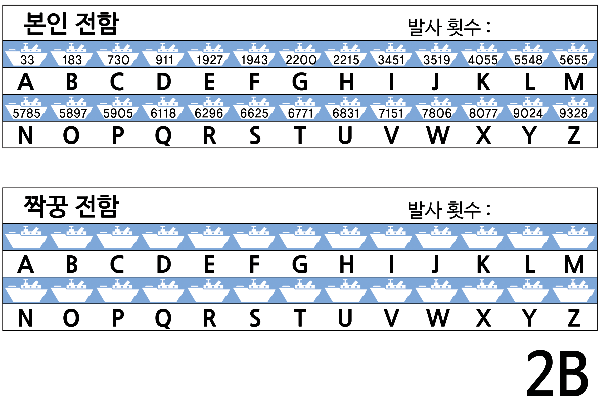
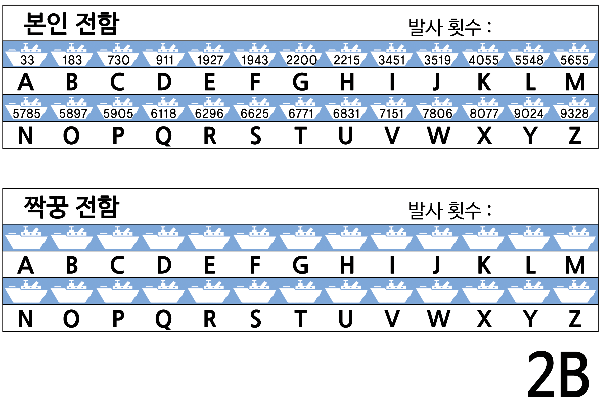
 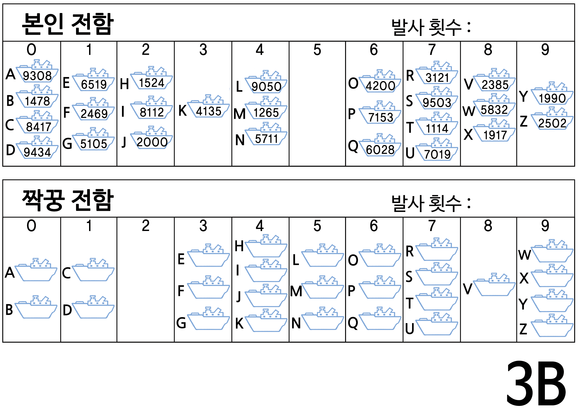
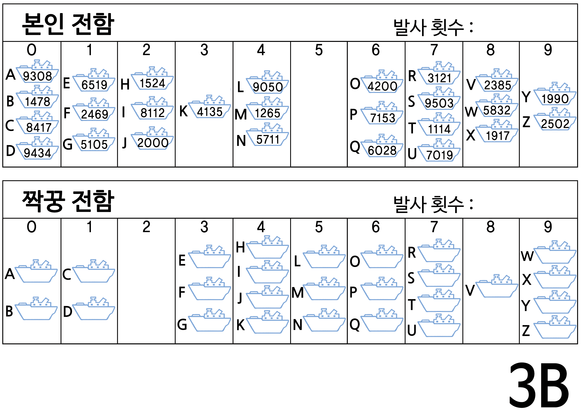


 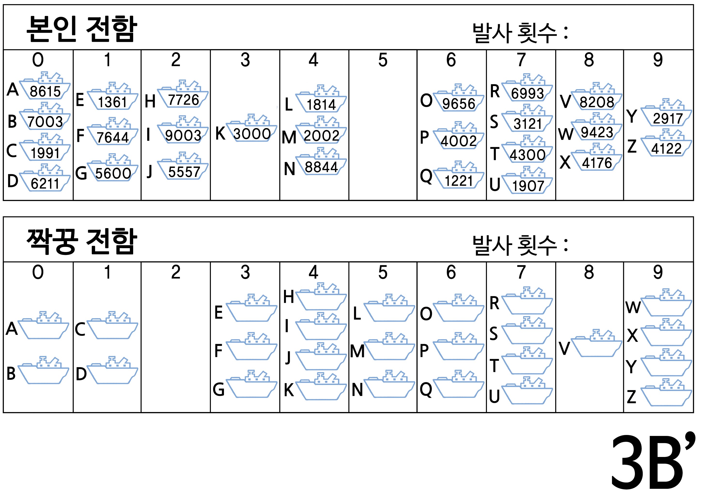
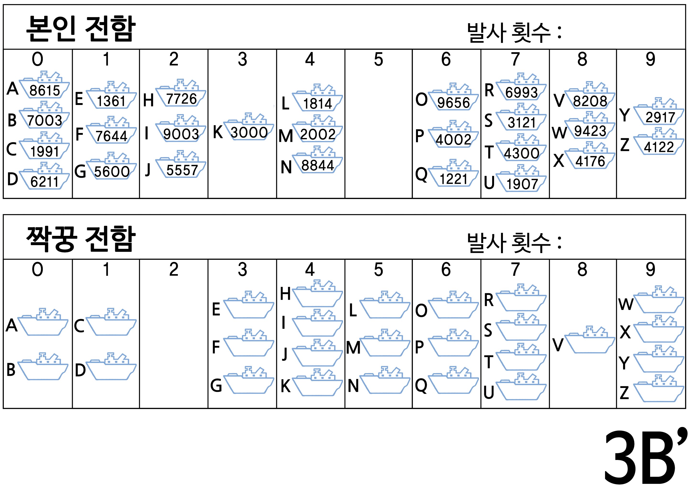
컴퓨터 과학 핵심 개념
컴퓨터는 많은 정보를 저장하고 빠르게 검색해서 찾아낼 수 있어야 합니다. 가장 어려운 검색 과제 중 하나는 인터넷 검색 엔진이 1초도 되지 않는 시간 안에 수십억 웹페이지를 검색하는 것입니다. 단어, 바코드(bar code)번호, 저자 이름 같은 컴퓨터가 검색에 사용하는 데이터를 "검색키"(search key)라고 합니다.
컴퓨터는 정보를 매우 빨리 처리할 수 있어서, 정보를 찾기 위해 저장소 처음부터 원하는 정보가 찾아질 때까지 순차적으로 찾는 방법을 생각할 수 있습니다. 이 방법이 순차검색게임에서 수행했던 방법입니다. 하지만 이 방법은 매우 느리고, 컴퓨터에게 조차도 부담이 됩니다. 예를 들어, 슈퍼마켓 선반에 10,000 종의 제품이 진열되어 있다고 가정합시다. 계산대에서 바코드를 스캔한다면, 제품명과 가격을 확인하기 위해 10,000 번 컴퓨터가 작업을 수행해야 합니다. 각 제품을 스캔해서 확인하는데 천분의 1초 걸린다고 하더라도, 전체 제품을 스캔하는데 10초가 소요됩니다. 가족이 먹을 식료품 값을 지불할 경우 시간이 얼마나 소요될지 상상해 보세요.
좀더 좋은 방법은 이진 검색(binary search) 방법입니다. 이 방법을 사용하려면, 숫자가 정렬되어 있어야 합니다. 숫자 리스트의 중간 항목을 확인하고, 검색키가 양쪽 중 한쪽 절반에 있는지 확인합니다. 원하는 항목을 찾을 때까지 이 과정을 계속 반복합니다. 슈퍼마켓 사례로 돌아가서, 1 만개의 제품에 대해서 원하는 품목을 14 회 만에 찾을 수 있고, 0.02 초로 시간이 걸리는지 알아채기 쉽지 않습니다.
데이터를 찾는 세 번째 전략은 '해싱'검색 방법입니다. 정확한 정보의 위치를 표시하기 위해 검색키(search key)를 조작합니다. 예를 들어, 검색키가 전화번호라면, 전화번호의 모든 자리수 숫자를 더한 후에 11로 나눈 나머지 값을 취합니다. 데이터의 일부분이 처리되는 다른 데이터와 관련이 있다는 점에서, 해쉬키는 네번째 활동에서 다룬 자릿수 검증(check digits)과 유사합니다. 대체로 이 방법을 사용하여 컴퓨터는 바로 정보를 찾아낼 수 있습니다. 드물기는 하지만, 복수키가 동일하게 위치한 경우, 지시한 정보를 찾을 때까지 컴퓨터가 다시 검색을 해야하므로 시간이 좀더 걸립니다.
데이터를 순서대로 정렬할 필요가 없거나, 심야시간의 경우처럼 늦은 속도가 문제가 되지 않다면, 컴퓨터 프로그래머는 검색기법으로 해싱 전략을 기본으로 사용합니다.
가장 가벼운 것과 가장 무거운 것 — 정렬 알고리즘(Sorting Algorithms)
개요
컴퓨터를 이용하여 이름을 가나다 순으로, 약속이나 전자우편을 날짜 순으로, 상품을 가격 순으로 정렬할 수 있습니다. 정렬로 물건을 빠르게 찾을 수 있고, 끝 쪽에 위치한 극단값을 보기도 쉽습니다. 학교 시험 성적을 정렬한다면, 최고점과 최저점은 명확해 집니다.
빠른 컴퓨터에서도 잘못된 정렬 알고리즘을 사용하게 된다면 매우 큰 목록을 정렬하는데 시간이 오래 걸립니다. 다행히도 정렬을 빠르게 하는 몇가지 방법이 알려져 있습니다. 이번 활동에서 정렬을 위한 다양한 방법을 익히게 됩니다. 간단한 알고리즘에 비해서 좀더 똑똑한 알고리즘이 작업을 빨리 수행하는 것도 보게 됩니다.
교과학습 연계
- 수학 : 측도(Measurement) — 실제 계량 작업을 수행.
- 컴퓨팅 : 알고리즘(Algorithm)
기술
- 평형 저울 사용하기
- 순서대로 정렬하기
- 비교하기
나이
- 8세 이상
학습 교재
- 활동에 참가하는 아이들은 다음을 준비하세요. – 다른 무게를 가지는 동일한 크기의 용기 8 개 한 세트(예. 모래 혹은 물로 채워진 우유통, 필름통) – 평형 저울 – 워크시트 활동 : 무게 정렬 – 워크시트 활동 : 나누어서 해결하기
가장 가벼운 것과 가장 무거운 것(Sorting Algorithms)
|
|
|
|
토론
컴퓨터를 이용하여 종종 물건을 정렬하는데 사용합니다. 정렬이 중요한 장소나 사례에 대해서 자유로이 생각을 말씀해보세요. 만약 물건이 정렬되지 않는다면 무슨 일이 생길까요?
컴퓨터는 통상 한번에 두개 값을 비교합니다. 아이들은 이러한 제약사항을 이용하여 컴퓨터가 어떻게 동작하는지 아이디어를 얻게 됩니다.
활동
-
아이들을 그룹으로 나눕니다.
-
각 그룹은 66 페이지의 활동 워크시트와 평형 저울과 추가 필요합니다.
-
아이들이 활동을 수행한 후에 결과를 토론합니다.
워크시트 활동 — 무게 정렬하기
목적: 알 수 없는 무게를 가진 대상을 순서대로 정렬하는 가장 좋은 방법 찾기
필요한 준비물: 물 혹은 모래, 서로 구별할 수 없는 용기 8개, 평형 저울 한 세트
따라 하기:
-
각 용기를 다른 양의 모래 혹은 물로 채우고 밀봉하세요.
-
각 용기를 뒤죽박죽 섞어서, 더 이상 각 용기의 무게를 짐작할 수 없게 합니다.
-
가장 가벼운 것을 찾으세요. 가장 가벼운 것을 찾는 손쉬운 방법은 무엇일까요?
주의: 각 용기의 무게가 얼마인지 측정하기 위해서만 평형저울을 사용합니다. 단, 한번에 용기 두개 무게만 비교할 수 있습니다.
-
무작위로 용기 3개를 골라서 평형저울만 사용해서 가장 가벼운 것부터 가장 무거운 것까지 순서대로 정렬하세요. 어떻게 수행했는지 자세하게 작성하고 말해보세요. 비교횟수를 적게 했던 것은 어떤 방식이었나요? 왜 그런지 이유를 설명해 보세요.
-
모든 용기를 가장 가벼운 것부터 가장 무거운 것까지 정렬해 보세요.
정렬 작업을 마쳤다고 생각한다면, 용기를 둘씩 짝지어 무게를 재서 용기가 순서대로 정렬되었는지를 확인해보세요.
선택 정렬 (Selection Sort)
선택 정렬(selection sort)은 컴퓨터가 사용하는 정렬 방법 중의 하나입니다. 어떻게 작동하는지 살펴봅시다. 정렬대상이 위치한 곳과 정렬결과를 놓을 곳으로 나누고, 가장 가벼운 것을 골라 정렬결과 장소를 옮겨놓습니다. 그 다음으로 가벼운 것을 골라 옮겨 놓는 것을 반복하여 더 이상 정렬대상에 아무것도 없을 때까지 반복합니다.

얼마나 많은 비교를 수행했는지 횟수를 세어보세요.
심화문제: 8개 물체를 정렬하기 위해서 얼마나 많은 비교를 수행했는지 수학적으로 보이세요. 9개의 물체 정렬은? 20개의 물체 정렬은?
워크시트 활동 — 나누어서 해결하기
퀵정렬(Quicksort)
퀵정렬은 특히 정렬 목록이 많을 때, 선택 정렬보다 훨씬 빠르다. 사실 지금까지 알려진 가장 좋은 정렬방법 중의 하나다. 다음은 어떻게 퀵정렬이 작동하는지 보여준다.
무작위로 정렬 대상 중에서 하나를 골라 평형저울 한쪽에 놓습니다.
남아있는 정렬대상을 앞에서 선택한 물체와 비교를 합니다. 가벼운 것은 왼쪽에, 무작위로 고른 정렬기준은 가운데, 무거운 것은 오른쪽에 위치하게 됩니다. (우연히, 한쪽에 더 많은 물체가 몰려있을 수도 있습니다.)
왼쪽편과 오른편 그룹에서도 상기와 동일한 과정을 반복합니다. 무작위로 선택한 1 개 물체를 반드시 중간에 두는 것을 잊지 마십시오.
1개 이상의 물체를 가진 그룹이 없을 때까지 이 절차를 반복하여 1개 이상의 물체를 담고 있는 그룹은 하나도 남지 않게 됩니다. 모든 그룹에 1개 물체가 있을 때, 모든 물체는 가벼운 것부터 가장 무거운 것 순으로 정렬이 완료됩니다.
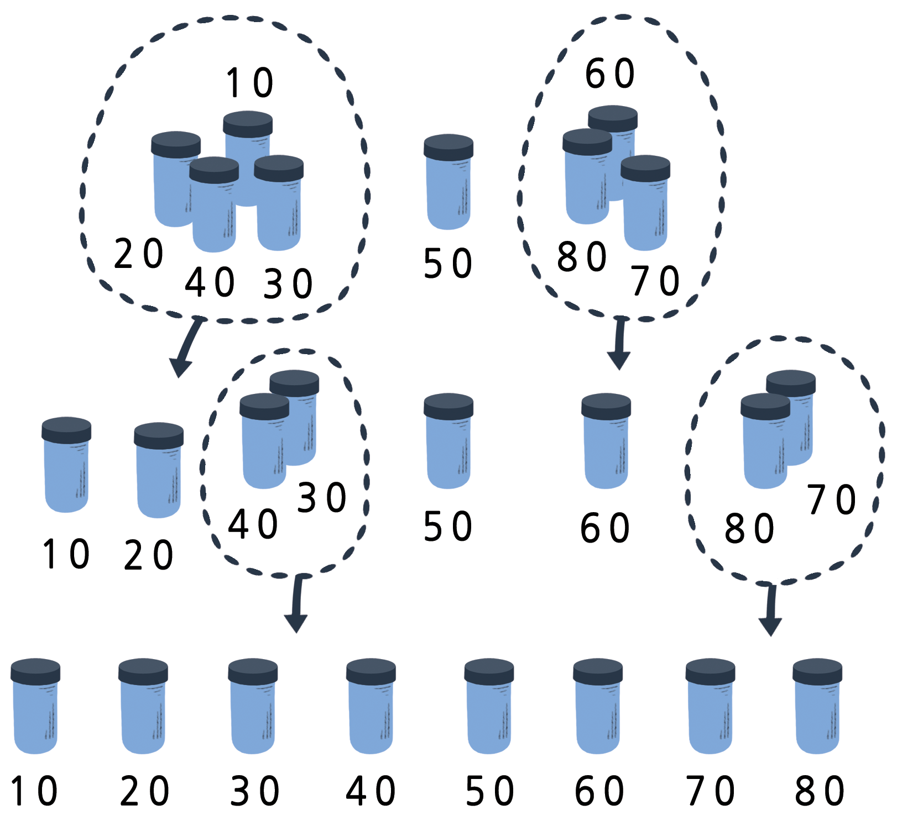
이 과정에서 얼마나 많은 비교를 했습니까?
우연히 가장 가벼운 것, 혹은 가장 무거운 것을 선택하지 않는다면, 퀵정렬이 선택정렬보다 더 효과적이라는 것을 알게 됩니다. 운이 좋아서 중간을 고른다면, 선택정렬 28회 비교 횟수와 비교하여 단지 14 회 비교횟수만 필요합니다. 퀵정렬은 운이 나빠도 선택정렬만큼, 대부분의 경우 선택 정렬보다 훨씬 빠르다!
심화문제: 우연히 퀵정렬이 가장 가벼운 물체를 선택했다면, 얼마나 많은 비교 작업을 수행해야 할까요?
변형과 확장
다양하게 많은 정렬 방법들이 개발되었습니다. 다음 방법들을 적용하여 무게를 정렬해봅시다.
삽입정렬(Insertion sort) 아래의 그림처럼, 정렬되지 않은 그룹에서 객체를 하나씩 빼서 정렬된 그룹에 올바른 위치에 삽입합니다. 매번 삽입할 때마다 정렬되지 않은 그룹의 객체는 줄어들게 되고, 정렬된 객체 목록는 늘어나게 되고, 궁극적으로 전체 리스트 객체가 정렬됩니다. 트럼프 카드 게임을 하는 카드 플레이어가 카드를 정렬하는데 동일한 방법을 사용하는데, 정렬할 카드를 이미 정렬된 카드를 가진 손으로 한 장씩 뽑아서 옮깁니다.
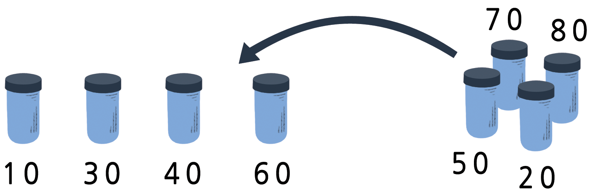
버블정렬(Bubble sort)은 순서가 뒤바뀐 객체 위치를 바꾸는 과정을 반복적으로 수행합니다. 순서를 바꾸는 작업을 반복적으로 수행해서 더 이상 바꿀 객체가 없을 때 멈추게 되고, 모든 객체는 정렬이 됩니다. 이 방법이 그다지 효율적이지 않지만, 다른 방법보다 이해하기 쉽다고 생각하는 사람도 많습니다.

병합정렬(Mergesort)은 ‘나누어 해결하기(divide and conquer)’ 전략에 기초한 정렬방법입니다. 첫번째로, 정렬대상이 짝수라면 동일 크기를 가지는 그룹 두개로, 홀수라면 거의 동일한 크기의 그룹 두개로 나눕니다. 각각 두 그룹을 정렬하고, 정렬된 두 그룹을 병합합니다. 정렬된 두개 그룹을 병합하는 것은 쉽습니다. 정렬된 두 그룹에서 가장 작은 것을 뽑아 비교하여 병합하는 과정을 반복합니다. 아래 그림에서 40그램과 60그램이 각 그룹에서 가장 작은 것이고, 이를 비교하여 40g이 더 작기 때문에 추가됩니다. 이제 더 작게 되었는데 어떻게 정렬할까요? 간단합니다. 다시 병합정렬을 이용합니다. 이를 반복하면 결국 모든 정렬 대상은 각 그룹별로 1개만 남게 되고 병합정렬을 이용한 모든 정렬은 끝나게 됩니다.
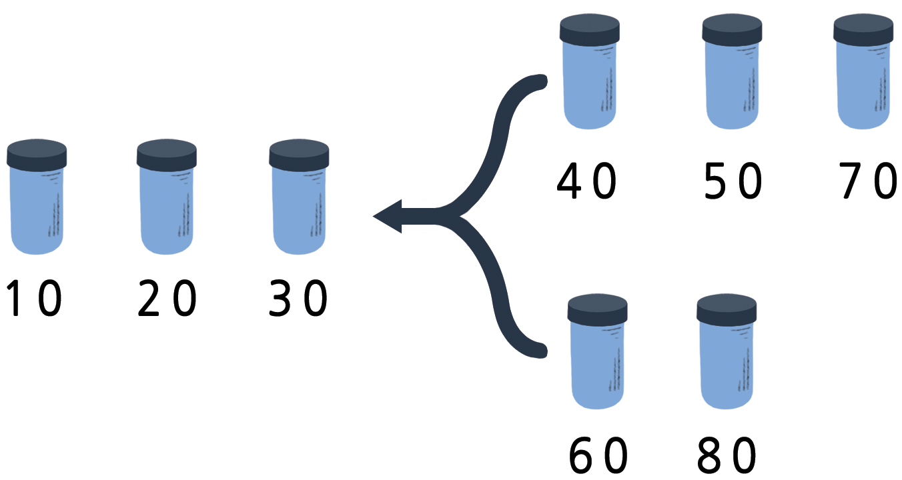
컴퓨터 과학 핵심 개념
정보가 순서로 나열되어 있으면 훨씬 찾기가 쉬워집니다. 전화번호부, 사전, 책 색인은 모두 가나다 순서로 되어 있지만, 만약 정렬이 되어 있지 않은 상황을 생각한다면, 우리는 매우 불편한 생활을 살게 될 것입니다. 지출경비 같은 숫자 목록이 잘 정렬되어 있다면, 가장 큰 숫자가 목록 상단에 위치하기 때문에 쉽게 찾을 수 있을 것입니다. 중복된 것은 함께 있기 때문에 찾기 쉬울 것입니다.
컴퓨터는 무언가를 정렬하는데 시간이 많이 소요되기 때문에 컴퓨터 과학자들은 빠르고 효율적인 정렬방법을 찾으려고 했습니다. 삽입정렬, 선택정렬, 버블정렬 같은 느린 정렬방법은 특별한 상호아에 유용할 수도 있지만, 퀵정렬 같은 빠른 정렬방법을 자주 사용합니다.
퀵정렬은 재귀(recursion)라는 개념을 사용합니다. 재귀방법은 정렬 대상 목록을 작은 그룹으로 나누고 각 그룹에 동일한 방법을 반복해서 수행하는 것입니다. 이 특별한 접근법을 '나누어 해결하기(divide and conquer)'라고 합니다. 정렬 작업을 수행하기 위해서, 목록을 나누어 해결할 수 있을 만큼 적당히 작게 만드는 과정을 반복합니다. 퀵정렬은 각 그룹 객체가 1개만 남을 때까지 목록을 분할합니다. 한 품목을 정렬하는 것은 어느 방법을 사용해도 차이가 없습니다! 퀵정렬은 복잡할 수 있지만, 다른 방법보다 실무에서 훨씬 빠른 정렬방법입니다.
해답과 힌트
-
가장 가벼운 것을 찾는 최선의 방법은 지금까지 나온 가장 가벼운 것을 높고 각 객체를 차례차례 살펴보는 것이다. 즉, 두 객체를 비교하여 더 가벼운 것을 보관한다. 이것을 다시 다른 것과 비교하여 더 가벼운 것을 보관한다. 모든 객체에 대해서 이 방법을 반복한다.
-
평행저울에 무게를 달아 비교하자. 세번 비교를 통해서 가능한데, 만약 아이들이 추이관계(transitive relation)를 이해한다면 때때로 두 번으로도 충분하다. (만약 A가 B보다 가볍고, B가 C보다 가볍다면, A는 C보다 가볍다.)
심화문제
선택정렬에서 비교횟수를 쉽게 계산하는 방법을 소개합니다.
객체 2개 중에서 작은 것을 찾는 것은 1회, 객체 3개는 2회, 객체 4개는 3회…
객체 8개를 정렬하기 위해서 가장 가벼운 것을 찾기 위해서 7번 비교를 하고, 두 번째 작은 것을 찾기 위해서는 6번, 그 다음 작은 것은 5회, … 그래서,
7 + 6 + 5 + 4 + 3 + 2 + 1 = 28 비교횟수
n 개 개체는 1 + 2 + 3 + 4 +… + n – 1 번의 정렬횟수가 필요합니다.
정렬횟수 총합을 구하기 위해서 그룹을 지으면 쉽습니다.
예를 들어, 1 + 2 + 3 + … + 20 합계를 구하기 위해, 아래와 같이 그룹으로 묶게 되면,
(1 + 20) + (2 + 19) + (3 + 18) + (4 + 17) + (5 + 16) + (6 + 15) + (7 + 14) + (8 + 13) + (9 + 12) + (10 + 11) = 21 × 10 = 210
따라서, 선택정렬의 비교횟수 총합: 1 + 2 + 3 + 4 … + n–1 = n(n–1)/2.
시간 내 일을 마치기 — 정렬 네트워크(Sorting Networks)
개요
컴퓨터가 빠르기는 하지만, 컴퓨터가 문제를 해결하는데 분명히 한계가 있다. 컴퓨터의 속도를 높이는 방법 중의 하나는 여러 대의 컴퓨터로 문제를 나누어서 해결하는 것이다. 이번 활동에서, 동시에 여러 개를 비교해서 정렬할 수 있는 정렬망(sorting networks)에 대해 알아봅니다.
교과학습 연계
- 수학 : 숫자 — 숫자 탐색: 이상, 이하.
기술
- 비교하기
- 정리하기
- 알고리즘 개발하기
- 협업으로 문제 해결하기
나이
- 7세 이상
학습 교재
- 야외 활동에 필요한 것들. – 분필이나 그릴 것 – 6장 카드로 구성된 복사본 두벌: 복사 마스터 정렬네트워크 카드를 오려 붙이세요. – 초시계(stopwatch)
정렬 네트워크 (Sorting Network)
|
|
|
|
|
먼저 활동을 시작하기 전에, 지면에 아이가 걸을 정도 크기로 네트워크 다이어그램을 그립니다. 교실에서는 큰 종이나 시트를 사용하면 좋습니다.

지시사항
이번 활동에서는 정렬 네트워크를 사용해서 컴퓨터가 어떻게 난수를 정렬하는지 학습할 것입니다.
- 아이들을 6 명이 1 조가 되도록 구성합니다. 한번에 한팀(6명 1조)만 정렬 네트워크게임을 할 수 있습니다.
- 각 조원은 숫자가 적힌 카드를 받습니다.
- 각 조원은 무작위로 섞여 왼편(들어가기) 사각형 위에 섭니다. 뒤죽박죽으로 번호 순서가 섞여야 합니다.
- 각 조원은 화살표 선을 따라 움직이고, 원('○')에 도착하면 다른 조원이 도착할 때까지 기다립니다.
- 친구 조원이 '○'' 곳까지 왔다면 당신의 카드와 친구의 카드를 비교해 봅시다. 작은 숫자 카드를 가지고 있는 사람은 왼쪽 줄을 따라 이동합니다. 더 큰 숫자 카드를 가진 사람은 오른쪽 줄을 따라 이동합니다.
- 반대쪽 끝에 모두 도착했을 때, 정렬이 제대로 되었는지 확인합니다.
잘못되면 다시 처음부터 다시 시작합니다. 예를 들면, 네트워크 접점('○')에서 작은 숫자는 왼쪽으로, 그렇지 않으면 오른쪽으로 진행한다는 것을 제대로 이해할 수 있는지 확인합시다.
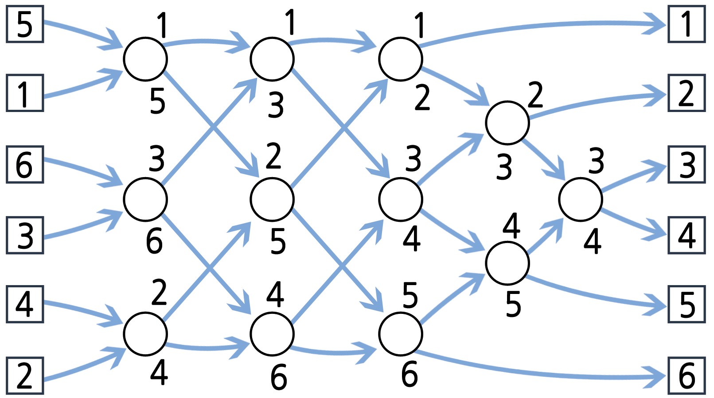
복사 마스터: 정렬 네트워크


변형
-
아이들이 활동에 익숙해지면, 초시계를 사용하여 한 조가 네트워크를 통과하는데 얼마나 걸리는지 시간을 측정합니다.
-
좀더 큰 수를 카드로 사용합니다. (예, 복사 마스터 세자리 숫자를 복사해서 사용하세요.)
-
비교하기 힘든 큰 숫자 카드를 만들어 봅시다. 또는 단어 카드를 사용하여 가나다 순서나 영어 알파벳 순서로 정렬해 봅시다.
확장 활동
'1. 작은 숫자를 가진 사람이 왼쪽 대신에 오른쪽으로 가면, 혹은 역으로 하면 무슨 일이 생길까요? (숫자는 반대로 정렬될 것입니다.)
네트워크 역방향으로 진행하면 어떻게 될까요? (반드시 동작하지는 않습니다. 아이들은 제대로 정렬되지 않고 나오는 경우를 발견할 수 있어야 합니다.)
'2. 좀더 크거나 작은 네트워크를 설계해 보세요. 예를 들어 숫자 세개를 정렬하는 네트워크가 있습니다. 아이들 각자 자신만의 네트워크를 그려보세요.
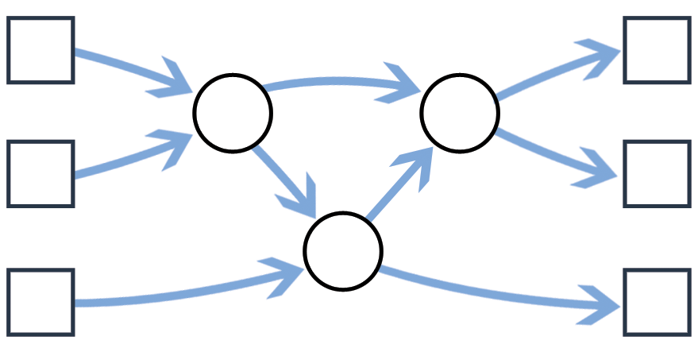
'3. 다음은 입력 숫자 4개를 정렬하는 서로 다른 두 개의 네트워크입니다. 어느 쪽이 더 빠를까요? (두 번째가 더 빠릅니다. 첫 번째 네트워크는 순차적으로 모든 비교를 수행하는 반면에 두 번째 네트워크는 동시 비교를 수행합니다. 첫번째 네트워크는 순차처리 예가 되고, 반면에 두번째 네트워크는 더 빠른 병렬처리를 사용합니다.)

'4. 좀더 커다란 정렬 네트워크를 만들어 보세요.
'5. 입력 데이터 중에서 최소 혹은 최대값을 찾아내기 위해서도 네트워크를 활용합니다. 예를 들어, 여기 최소 출력값을 얻기 위한 입력 숫자 8개를 가진 네트워크가 있습니다. (다른 값들은 네트워크에서 사라집니다.)
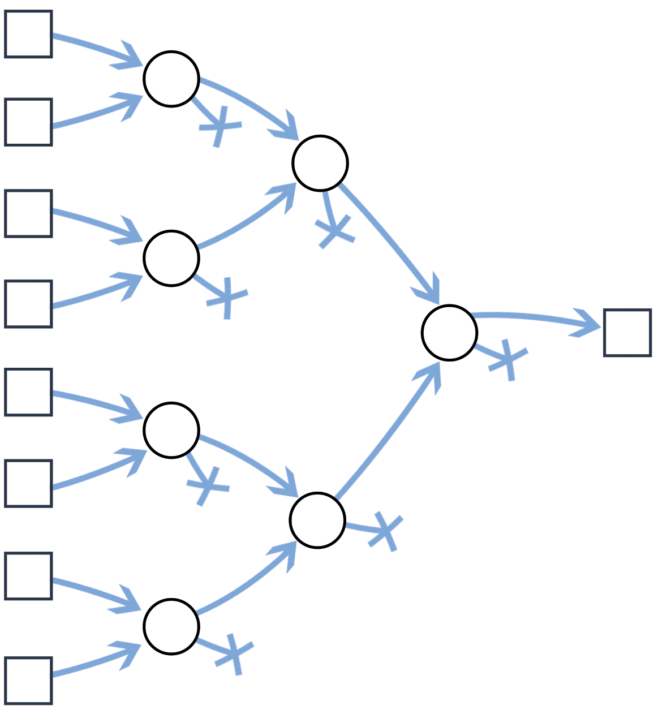
'6. 일상생활에서 병렬처리하면 빠르게 할 수 있는 일이 어떤게 있을까요? 병렬적으로 처리해도 별로 효과가 없는 일은 무엇일까요? 예를 들어, 요리를 할 때 조리기구를 하나만 사용한다면 무척이나 느릴 것입니다. 왜냐하면 조리기구를 순차적으로 요리를 한다면, 요리 하나가 끝날 때까지 기다려야 하기 때문에 시간이 오래 걸릴 것입니다. 더 많은 사람을 고용해서 빨리 끝날 수 있는 일과 그렇지 못한 일은 무엇이 있을까요?
컴퓨터 과학 핵심 개념
오늘날 컴퓨터를 점점 더 많이 사용함에 따라 더 빠르게 컴퓨터가 정보를 처리해주기를 원합니다.
컴퓨터 속도를 높이는 방법은 동일한 작업을 수행함에 있어 더 적은 연산절차(활동 6과 7에서 학습)를 가진 프로그램을 작성하는 것입니다.
문제를 더 빠르게 해결하는 다른 방법은 동시에 같은 작업을 나누어서 다수 컴퓨터로 작업을 수행하는 것입니다. 예를 들어, 숫자 6개 정렬 네트워크에서, 6개 숫자를 정렬하기 위해서 12번의 비교가 필요하지만, 동시에 최대 3회 비교를 한번에 수행했다. 이것이 의미하는 것은 정렬에 걸리는 시간이 5회 비교작업 시간과 동일하다는 것이다. 이 병렬 네트워크는 목록을 순차적으로 비교하여 처리하는 것보다 두배 이상 빨리 정렬할 수 있다.
모든 작업이 병렬처리를 통해서 빨라질 수 있는 것은 아닙니다. 한 사람이 10 미터 도랑을 판다고 상상해 봅시다. 만약 10 사람이 1 미터씩 도랑을 판다면, 10 미터 파는 작업은 훨씬 빠르게 끝납니다. 하지만 동일한 전략이 10미터 깊이 땅굴을 팔 때는 사용될 수 없습니다. 첫 1 미터 작업이 끝날 때까지 다음 1미터 작업을 할 수 없기 때문입니다. 컴퓨터 과학자들은 컴퓨터를 병렬로 작동함으로써 빠르게 문제를 해결하는 방법을 찾으려고 적극적으로 노력하고 있습니다.
진흙도시 프로젝트 — 최소생성나무(Minimal Spanning Trees)
개요
우리 사회는 전화, 에너지 공급, 컴퓨터, 도로 등 다양한 네트워크로 연결되어 있습니다. 각각의 네트워크에는 도로, 케이블, 혹은 무선 네트워크를 어떻게 배치하는지에 대한 설계 결정이 녹여져 있습니다. 효율적으로 네트워크에서 객체를 연결하는 방법을 파악할 필요가 있습니다.
교과학습 연계
- 수학 : 기하 — 모양과 공간 탐색: 지도에서 최단 거리 찾기
기술
- 문제 해결하기
나이
- 9세 이상
학습 교재
- 아이들이 필요한 것 – 워크시트 활동: 진흙도시 문제 – 판지를 작은 사각형으로 자른 것 (대략 아이당 40개)
진흙 도시 (Minimal Spanning Trees)
들어가며
이번 활동을 통해서 현실 세계 문제에서 어떻게 최적의 해결책을 찾는데 컴퓨터를 이용하는지 보여줍니다. 예를 들어, 모든 가정에 전기를 공급하는 전선과 도시 가스를 공급하는 가스관을 어떻게 연결하는지가 좋은 사례입니다. '진흙도시'(Muddy City) 문제를 설명하는 78 페이지 워크시트를 사용하세요.
후속 토론
아이들이 발견한 해결책을 공유하세요. 아이들은 무슨 전략을 사용했나요?
최적 해결책을 찾는 좋은 방법중의 하나는 빈 지도에서 시작해서, 빈 지도에서 점차적으로 도로 포장을 늘려가면서 모든 집들이 연결되게 하는 것입니다. 도로 포장은 최단 거리에서 길어지는 순서대로 진행하지만, 이미 연결된 집은 추가로 연결을 하지 않습니다. 만약 동일 길이 포장도로가 추가되어 순서를 바꾼다면 다른 해결책을 찾은 것입니다. 두 가지 가능한 해결책을 다음에 있습니다.

다른 전략은 모든 도로가 포장된 상태에서 시작해서, 필요하지 않은 도로포장를 제거하는 것입니다. 하지만, 더 많은 노력이 듭니다.
현실세계에서 네트워크는 어디에 사용되고 있을까요?
컴퓨터 과학자는 이런 네트워크 표현을 "그래프(graph)"라고 합니다. 실제 네트워크를 그래프로 표현하여 마을과 마을을 연결하는 도로 설계 또는 지역과 지역을 연결하는 항공로 설계와 같은 문제를 풀어 최상의 네트워크를 설계하는데 활용합니다.
두 점을 연결하는 최단 거리를 찾는 방법, 모든 점을 연결하는 가장 짧은 경로를 찾는 방법처럼 그래프를 적용한 많은 다양한 알고리즘이 있습니다.
워크시트 활동: 진흙 도시 문제
옛날에 전혀 도로가 없는 도시 하나가 있었습니다. 비가 온 뒤에 땅이 진흙탕이 되어 도시를 돌아다니는 것은 무척이나 어려웠습니다. 자동차는 진흙 웅덩이에 빠지고, 사람들 신발은 곧 더러워졌습니다. 진흙 도시 시장은 도로의 일부를 포장하기로 결정하였지만, 예산을 많이 사용하고 싶지는 않았습니다. 주민들이 수영장 건립을 원했기 때문입니다. 그래서 시장은 다음의 두 가지 조건을 제시했습니다.
- 도로가 충분히 포장되어 누구나 자신의 집에서 다른 사람의 집으로 포장된 도로만을 이용하여 이동할 수 있어야 한다.
- 포장비용은 최대한 저렴하여야 한다.
다음에 마을 지도가 있습니다. 포장하기 위해서 돌을 사용하는데, 돌의 개수가 집과 집 사이를 포장하는데 드는 비용을 나타냅니다. 모든 집을 포장된 길로 연결하고 비용이 최대한 저렴하게 경로를 구축해 보세요. (참고로, 다리는 포장에서 제외합니다.)
이 문제를 풀기 위해서 무슨 전략을 사용했나요?
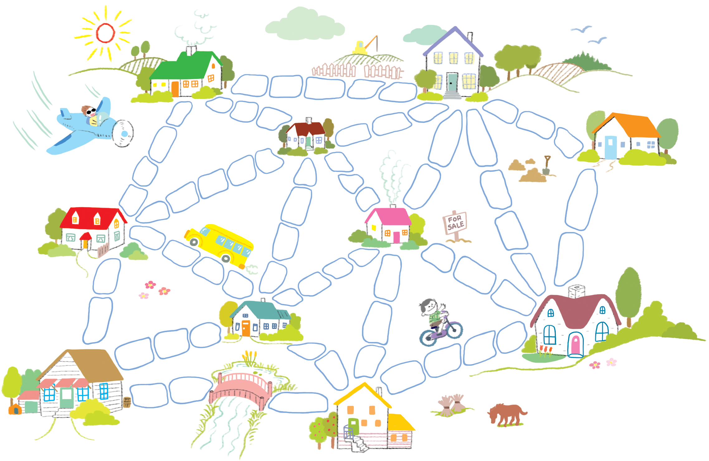
변형과 확장
다음은 진흙 도시와 도로를 그래프로 표현한 사례입니다.

집은 원으로 표시하고, 진흙 도로는 선으로 표시하고, 도로 길이는 선 옆의 숫자로 표시합니다.
종종 컴퓨터 과학자와 수학자는 최적화 문제를 표현하기 위해 이런 종류의 그림을 사용하고, 그래프(graph)라고 합니다. 처음에는 혼동스러울 수 있습니다. 왜냐하면 통계에서 사용하는 "그래프"는 숫자 데이터를 표현하기 위한 막대그래프 같은 차트를 의미하기 때문입니다. 하지만 컴퓨터 과학자가 사용하는 그래프는 이것과 연관되어 있지 않습니다. 길이를 반듯이 도로 길이에 비례하여 작성할 필요는 없습니다.
자신만의 "진흙도시"와 같은 비포장 도로를 최소 비용으로 포장하는 문제를 만들어 봅시다. 지도를 그래프 형태로 보여주는 것도 좋습니다. 그리고 친구에게 그 문제를 풀게 해 봅시다.
가장 좋은 해결책으로 얼마나 많은 도로가 포장되어거나 혹은 연결되어야 하는지 기술할 수 있는 규칙을 찾았습니까? 도시에 얼마나 많은 집이 있는지가 그 규칙과 관련이 있나요?
컴퓨터 과학 핵심 개념
여러분이 전기, 가스, 수도 등을 새로운 거주지에 공급하는 것을 설계한다고 가정해봅시다. 모든 집의 전선 혹은 파이프는 공공기업(한전, KT, 가스공사 등)에 연결되어야 합니다. 각각의 집은 어떻게든 네트워크에 연결되어야 하지만 어떤 경로를 취할 것인가는 연결만 된다면 그다지 문제가 되지 않습니다.
네트워크 경로 길이가 최소가 되도록 설계하는 작업을 "최소생성나무"(minimal spanning tree)문제라고 합니다.
"최소생성나무"는 가스나 전력 네트워크에만 유용한 것이 아닙니다. 컴퓨터 네트워크, 전화 네트워크, 송유관, 항공운항 경로 문제를 해결하는데 도움이 됩니다. 하지만, 여행의 최적 경로를 결정할 때는 비용이 얼마나 드는지, 여행이 얼마나 편안할지도 함께 고려해야 합니다. 단지 비용이 저렴하다는 이유로, 처음으로 여행가는 나라에 비행기를 장시간 타면서 시간을 낭비하려는 사람은 많지 않을 것입니다. 비행경로나 화물 운송경로를 최소화하는데 사용되는 진흙도시 알고리즘은 여행경로와 같은 네트워크 최적화하는 데에는 그다지 도움이 되지 않습니다.
최소생성나무 알고리즘은 그래프에 관한 다른 문제(예를 들어 "외판원 문제 [Travel Salesman Problem, TSP]")를 해결할 때 단계중의 하나로서 유용합니다. 외판원 문제는 네트워크의 모든 점을 방문하는 최소 경로를 찾는 것입니다.
최소생성나무 문제를 해결하는 효과적인 알고리즘과 방법이 있습니다. 최적의 해결책을 주는 간단한 방법은 아무 연결도 없는 상태에서 시작해서, 앞에서 연결되지 않은 점들을 비용이나 크기가 커지는 순서대로 연결을 하는 것입니다. 1956년에 J.B. Kruskal이 발표하여 Kruskal 알고리즘이라고 합니다.
"외판원 문제" 등, 그래프에 관한 많은 문제에 관해서는 지금도 컴퓨터 과학자가 가장 최선의 가능한 해결책을 찾아내는데 충분히 빠른 방법을 찾으려고 노력을 경주하고 있습니다.
해답과 힌트
변형과 확장 (79 페이지)
도시에 집이 n개 있다면 얼마나 많은 도로 연결이 필요할까요? 최적의 해결책은 정확하게 n-1 개 연결을 갖는 것으로 밝혀졌다. n-1개 연결은 n 개 집을 연결하는데 충분하다. 왜냐하면, 연결을 하나 더 추가하는 것은 집 사이에 불필요한 대체가능한 연결을 하나 더 만들기 때문이다.
오렌지 게임 — 네트워크 라우팅과 교착상태(Routing and Deadlock in Networks)

개요
자동차가 다니는 도로나 메시지가 지나가는 인터넷 같이 하나의 자원을 많은 사람이 공유하여 사용할 때, 교착상태(deadlock) 발생 가능성이 있다. 교착상태가 발생하는 것을 피하는 방법은 협력하는 것이다.
교과학습 연계
- 수학 : 논리와 추론 개발하기
기술
- 협력하여 문제 해결하기
- 논리적 추론하기
나이
- 9세 이상
학습 교재
- 각 아이들에게 필요한 것 – 오렌지 두 개 혹은 테니스 공 – 부착이 가능한 이름표 또는 이름 스티커
오렌지 게임 (Orange Game)
|
|
|
|
|
들어가며
이 게임은 협력하여 문제를 해결하는 게임이다. 참가자 전원이 자신의 이름이 이니셜로 새겨진 오렌지를 모두 갖는 것이 게임의 목표입니다.
-
5명 혹은 그 이상의 아이들이 한 그룹으로 원을 그려 앉습니다.
-
아이들 모두 자신의 이니셜을 이름표나 이름 스티커에 적습니다. 한 명을 제외한 모든 아이들은 오렌지 두 개에 자신의 이니셜을 붙입니다. 제외된 한 명은 하나만 오렌지에 붙여 한 손에 들고 있고, 나머지 손은 빈손입니다.
-
원에 둘러 앉은 아이들에게 무작위로 오렌지를 나눠줍니다. 오렌지 하나만을 가진 한 명을 제외하고 모든 아이들은 오렌지 두개를 가집니다. (단, 어떤 아이도 자신의 이니셜이 적힌 오렌지를 갖으면 안됩니다.)
-
자신의 이니셜을 가진 오렌지를 모든 아이들이 가질 때까지 아이들은 오렌지를 전달합니다. 이때 두 가지 규칙을 지켜야 합니다.
a) 한번에 상대에게 전달할 수 있는 오렌지는 1 개뿐입니다.
b) 바로 옆 사람의 손이 빈 경우에만 오렌지를 전달할 수 있습니다. (즉, 옆 사람에게 오렌지를 전달할 수 있는 아이는 한번에 1 명뿐입니다.)
만약 아이들이 욕심을 부려 자신의 이니셜이 적힌 오렌지를 손에 넣어 다른 아이에게 오렌지를 전달하지 못하게 한다면 그룹 전체가 게임의 목표를 달성할 수 없다는 것을 재빨리 알아챌 것입니다. 이 때, 누군가 자신의 이니셜이 적힌 오렌지를 차지하여 게임에서 "승리"하는 것이 목적이 아니라, 모두가 자신의 이니셜이 적힌 오렌지를 가질 때 게임 퍼즐을 풀 수 있다는 것을 강조할 필요가 있다.
후속 토론
아이는 문제를 해결하기 위해 어떤 전략을 사용했습니까?
실생활에서는 어떤 장소에서 교착상태(deadlock)를 경험했습니까? (교통 체증, 야구경기에서 베이스를 도는 주루선수, 많은 사람이 동시에 출구를 통과하려는 모습 등)
확장 활동
좀더 작거나 큰 원을 그려 활동을 확대해 보자
- 아이들이 새로운 규칙을 제시하도록 하자
- 어떤 말을 하지 말고 활동을 진행해 보자
- 아이들이 한 줄로 앉던가, 두명 이상의 아이가 옆에 앉도록 형태를 바꿔서 진행해 보자. 몇가지 확장활동 제안 예시가 다음에 있다.

컴퓨터 과학 핵심 개념
도로, 전화, 컴퓨터 시스템 같이 많은 네트워크에서 라우팅(Routing)과 교착상태(Deadlock)는 흔한 문제다. 엔지니어들은 이런 문제를 어떻게 해결할 것인가, 문제를 풀기 쉬운 네트워크를 어떻게 설계할지에 대해서 많은 연구를 한다.
라우팅, 정체, 교착상태는 많은 네트워크에서 좌절감을 안겨줄 정도의 문제를 제시한다. 출퇴근 혼잡 시간대에 교통상황을 상상해 보세요. 뉴욕이나 서울 도로에 너무나 많은 자동차가 흘러나와 혼잡한 상황이 되어서 어떤 자동차도 움직일 수 없는 교착상태가 되는 경우가 종종 있습니다. 때때로, 은행 같은 금융업무용 컴퓨터가 다운이 될 때는 통신 네트워크에 교착상태가 원인입니다. 라우팅이 쉽고, 효율적이며, 정체가 최소화되는 네트워크를 설계하는 것이 많은 엔지니어들이 직면한 어려운 문제입니다.
여러 사람이 동일 시간대에 동일한 데이터를 요구하는 것은 자주 있는 일입니다. 고객의 예금 잔고와 같은 데이터를 갱신할 때, 그 찰라의 시간에 "잠금(lock)"을 걸어 타인에게 보이지 않도록 하는 것이 중요합니다. 만약 잠겨 있지 않으면, 다른 누군가가 데이터를 동시에 갱신해서, 잘못된 예금 잔고가 기록되어 버릴 수도 있기 때문입니다. 그러나, 이러한 잠금 설정이 다른 항목의 잠금 설정에 의해 충돌나거나 간섭이 발생하는 상황이 되면 교착 상태가 발생할지 모릅니다.
컴퓨터 설계에 있어 가장 획기적인 업적 중 하나는 병렬 컴퓨팅(parallel computing)의 등장입니다. PC같은 개인용 컴퓨터 수백, 수천 개의 중앙처리장치(processor)를 네트워크로 결합하여 하나의 강력한 컴퓨터를 만든 것입니다. 이러한 병렬 컴퓨터를 작동시키기 위해서 오렌지 게임과 같은 많은 문제가 네트워크에서 항상 (훨씬 빠르게) 재현되고 있는 것입니다.
돌명판(Tablets of Stone) — 네트워크 통신 프로토콜(Network Communication Protocols)
개요
컴퓨터는 메시지를 통해 인터넷으로 서로 대화한다. 하지만, 인터넷은 신뢰성이 없어서, 때때로 메시지 일부가 유실되기도 한다. 메시지에 특정 정보 일부(bits of information)를 추가해서 송신이 제대로 되었는지 확실히 한다. 이 정보가 프로토콜을 구성한다.
교과학습 연계
- 수학 : 로직과 추론 개발
- 국어(English) : 의사소통, 대인관계 경청(interpersonal listening)
기술
- 협력하여 문제 해결하기
- 논리적 추론하기
나이
- 9세 이상
학습 교재
- 각 아이들에게 필요한 것 – 많은 공백 ``명판(Tablet)''
- 각 배달원이 필요한 것 – 메시지 실행 카드 한 벌
- 선생님이 필요한 것 – 초시계
돌명판(Tablets of Stone)
들어가며
이 활동에서 학생들은 어떻게 서로 다른 통신 방법이 성공적으로 운영될 수 있는지 생각하게 될 것이다. 장소에 규칙과 절차를 살펴봄으로써, 학생들은 통신 프로토콜에 자연스럽게 소개된다. 역할극 시나리오를 직접 수행해봄으로써, 학생들은 신뢰성이 없는 환경아래에서 자신만의 프로토콜을 검정하게 되는데, 인터넷 패킷 교환(packat switching), 좀더 구체적으로 TCP/IP 환경과 유사하다.
준비 (30분)
-
먼저 카드를 모은다. (아래) 활동카드를 출력하고 가위로 자른다. 그럼 게임 준비가 되었다.
-
다음, 학생이 전송할 메시지를 정한다. 중요한 것은 메시지가 국문(영문) 문장이거나 구조를 다시 조합할 수 있는 것은 안된다. "1LHC255HD(RLLS" 같은 것이 적합한 메시지다 혹은 전화번호.
-
"명판(tablet)" 사본을 출력한다. 각 명판은 문자 혹은 숫자 6개를 넣을 수 있는 자리가 있다. 그래서, 한 명판에 전체 메시지를 전부 맞추어 넣을 수는 없다. 얼마나 오랜 시간동안 게임을 할것인지에 달려있지만, 학생당 대략 명판 30개가 필요할 것이다.
주의: 활동카드가 3가지 유형이 있다— 지연(delay), 전달금지(don't deliver), 전달(deliver). 세가지 유형 활동 카드 비율을 조절해서 메시지 전달자 품질을 조정할 수 있다. "전달(deliver)" 활동카드를 좀더 많이 주면 좀더 신뢰성 있는 메시지 전달자가 된다. 좀더 "지연(delay)"과 "전달금지(don't deliver)"를 주게되면, 덜 신뢰성 있는 네트워크를 의미하게 된다. 이러한 활동카드는 컴퓨터 네트워크/통신 채털과 유사하다.
게임하기
-
학급을 쌍(pair)으로 나눈다. 서로를 볼 수 없게 하거나 서로 의사소통할 수 없게 각 쌍이 떨어져 앉아있게 하는 것이 매우 중요하다. 교실 두개가 이상적이지만, 교실 반대편에 학생들이 앉아 있는 것으로도 충분하다.
-
한쪽에 다른 상대방에게 전달할 메시지를 나눠준다.
-
"활동카드(Action Cards)"를 섞고 메시지 전달자를 선정한다. 만약 홀수가 나오면, 그 학생이 메시지 전달자가 될 수 있다. 만약 학급이 크다면, 한명 이상의 메시지 전달자가 필요할 수 있다.
-
한 학생이 이제 명판에 적고 명판을 메시지 전달자에게 건내준다. 명판위에 적어도 다른 사람 이름이 있어야 한다.
-
메시지 전달자가 가장 위에 있는 활동카드를 뽑고, 뒤집어 읽고, 그것을 사용해서 명판으로 무엇을 할지 결정한다.
-
4번과 5번 단계를 각 명판으로 반복한다.
약 5분간의 혼란과 좌절 뒤에, 학생들은 이름만으로는 프로토콜로 충북히 만족스럽지 않다는 것을 깨달아야 한다. 수업을 중단시키고, 토론하자… 학생들이 갖는 첫번째 이슈가 무엇일까? 순서일까? 혹시, 6개 자리중에서 하나에 명판 숫자를 넣어 사용하는 것이 최선이 아닐까? 이것이 의미하는 바는 실제 데이터에는 적은 공간이 할당된다는 의미가 된다 — 이제 사용해야하는 명판 숫자에 관해서 이것이 의미하는 바는 무엇일까?
잠시 시간이 흐른 뒤에, 다른 문제를 알아챌지 모른다. 이러한 문제도 또한 토의되어야 한다. 가능한 문제는 명판 분실이 될 수 있고 명판이 전달이 제대로 되었는지 알지 못하고, 명판을 재전송했는지 알지 못하는 것도 있다. 제시할 수 있는 해결책은 받았다는 증명(acknowledgement)을 다시 보내고, 또다른 명판을 보내기 전에 받았다는 증명을 받을 때가지 기다린다 — 이것이 의미하는 바는 수신 학생에게도 또한 메시지를 송신할 빈 명판이 필요하다는 것이다. 그리고, 게임을 다시 시작하기 전에 문자 6개 응답이 무엇을 의미하는지 동의해야 할 것이다.
이 게임에 적어도 학생이 두 명 필요하다. 하지만, 가능하면 많은 학생을 갖기 추천한다. 만약 학급이 크다면, 메시지 전달자를 몇명 고려한다. 다시 한번, 메시지 전달자 숫자를 학급에서 토의하자. 만약 메시지 전달자가 많다면 무엇이 발생할까? 만약 메시지 전달자가 한명이면 무엇이 발생할까?
워크시트 활동: 활동카드(Action Cards)

워크시트 활동: 메시지 전달

돌명판(Tablets of Stone)
고대 도시에는 매우 중요한 통치자(Governors)가 많았다. 통치자는 도시가 어떻게 운영되어야 하는지를 결정하고 매우 중요한 결정을 내린다. 통치자 각자는 도시 도처에 서로 다른 집에서 살았다.
통치자들은 종종 통신하고자 했으며, 도시 도처에서 메시지를 주고 받을 필요가 있었다. 통치자는 본인이 살고 있는 집번호로 식별되었고, 통치자는 모두 메시지를 전달하는 것을 업으로 하고 있는 메시지 전달자(messenger) 집단에 접근할 수 있다.
메시지를 전송하는 유일한 방식은 커다란 사각형 돌명판(table of stone)에 적는 것이었다. 메시지 전달자는 돌명판을 가지고 목적지까지 들고갔다. 돌명판은 크기가 고정되어서 돌명판에는 정보로 6 조각만 맞춰 넣을 수 있다. 정보 한조각은 문자 하나 혹은 숫자 하나가 될 수 있다. 메시지는 다수 명판에 쪼개질 수 있고, 명판이 매우 무겁기 때문에 한번에 하나만 옮겨 전달 될 수 있다.
메시지 전달자가 건망증이 심하고 게으르기 때문에 항상 올바른 메시지를 전달할지 신뢰를 가질 수 없다. 종종 근무시간에 너무 오래 휴식을 취하거나 도시를 탈출하여 도망가기도 한다.
통치자는 통신을 신뢰성있게 만들 방법을 찾고 싶고, 통치자 모두가 따를 수 있는 규칙 집합을 개발하고자 한다. 이렇게 함으로써, 메시지가 전달여부와 메시지가 올바르게 맞는 것인지 알 수 있다. 통치자는 이미 명판에 목적지가 명시되어야 한다고 결정했다.
여러분이 속한 집단에서, 수행할 작업은 통치자가 통신에 사용할 규칙을 개발하는 것이다…
컴퓨터 과학 핵심 개념
인터넷에서, 데이터는 전송을 위해서 패킷(package)으로 쪼개진다. 하지만, 패킷이 돌아다니는 경로(channel)가 항상 신뢰성이 있는 것은 아니다. 때때로 개별 패킷은 손상되고, 유실되거나 순서를 잃어버리기도 한다.
돌명판에서, 명판(tablet)이 패킷이 되고 명판의 내용이 데이터가 된다. 패킷은 데이터와 헤더(header) 정보를 담고 있다. 헤더정보 크기가 얼마나 많은 정보가 전송될 것인지에 영향을 미친다— 패킷 크기가 유한하기 때문에 균형을 맞추어야 한다.
TCP와 UDP 같은 인터넷 프로토콜은 신뢰성 있고 효율적인 데이터 전송을 할 수 있도록 이런 요인을 잘 균형맞춘다.
여기 활동은 컴퓨팅 과학의 안쪽(Computing Science Inside) 프로젝트 중 하나를 차용해서 변형했다. 출처
제 3 부 (Part III)
컴퓨터에 무엇을 수행할지 지시하기 — 절차의 표현
컴퓨터에 무엇을 수행할지 지시하기
컴퓨터는 초당 수백만번 명령에 따라 움직입니다. 컴퓨터에 무엇을 수행해야 할지 지시하기 위해서, 올바른 명령을 주면 좋겠지만, 말처럼 생각만큼 쉬운 일이 아닙니다.
우리는 명령을 받았을 때, 명령의 의미를 해석하기 위해서 상식적으로 생각합니다. "문을 통해서 오세요"라고 누군가 말을 한다면, 실제로 문을 부수고 통과해서 들어오라는 뜻은 아닙니다. 필요하다면 문을 열고 통해서 들어오라는 의미입니다. 컴퓨터는 매우 다릅니다. 만약 모바일 로봇에 컴퓨터가 장착된다면, 명령을 글자 그대로 해석해서 문을 부수고 들어올 수 있는 위험이나 손상이 생길 수 있으니 주의할 필요가 있습니다. 생각 없이 명령을 정확하게 수행만 하는 컴퓨터를 다루는 것에 익술해질 필요가 있습니다.
제 3 부에서는 활동 2개를 통해서 고정된 명령어 집합을 사용하여 문자 그대만 움직이는 기계(컴퓨터)와 상호작용하는 것이 어떤 의미인지를 학습하게 될 것입니다.
첫번째 활동에서는 컴퓨터가 작업할 수 있는 기호, 즉 단어, 숫자, 기호 문자열을 인식하기 위해 컴퓨터가 사용하는 기계, "유한-상태 오토마타(finite-state automata)" 에 대해 배웁니다.
두번째 활동은 인간이 어떻게 컴퓨터와 상호작용하는지 배웁니다. 좋은 프로그래머는 문자 그대로 해석되는 한정된 명령어 집합으로 컴퓨터가 무엇을 수행할지 전달하는 방식에 대해서 이해할 필요가 있습니다. 명령어 목록이 프로그램입니다. 이러한 명령어를 작성하는 프로그래밍 언어가 많이 있지만, 여기서는 컴퓨터 없이도 사용할 수 있는 매우 간단한 언어를 사용할 것입니다.
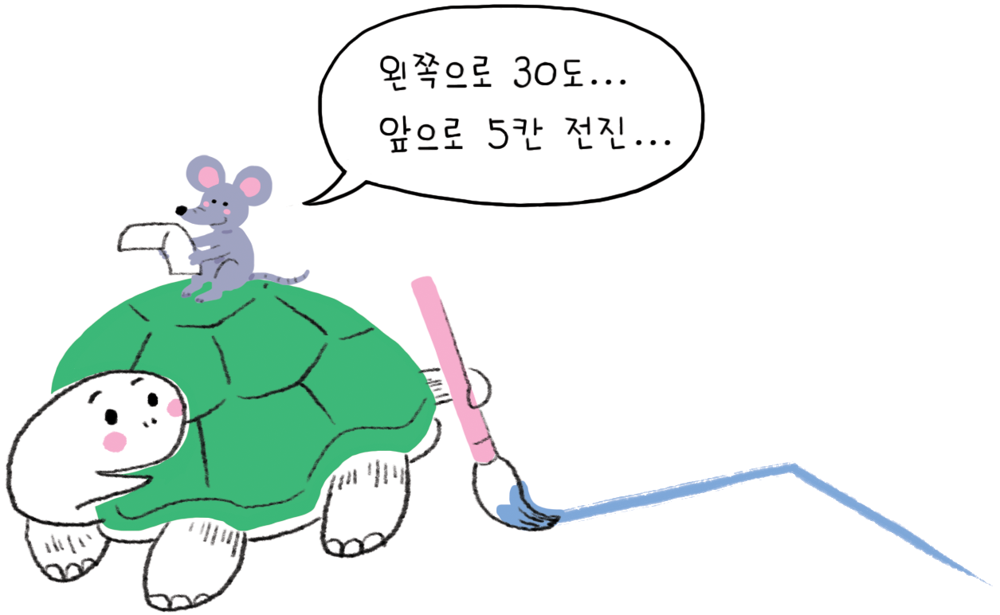
보물 찾기 — 유한상태 오토마타(Finite-State Automata)
개요
컴퓨터 프로그램이 문서안에서 문자나 단어, 혹은 다른 컴퓨터 프로그램의 텍스트 같은 기호 순서(sequence)를 종종 처리할 필요가 있다. 컴퓨터 과학자는 이런 작업을 처리하기 위해서 유한상태 오토마타를 사용합니다. "기호는 문서 안의 문자나 단어 또는 프로그램 문장", "정수는 0~ 9까지 숫자가 늘어선 것", "실수는 일정 숫자 순서 뒤에 소수점이 1개 있고 다시 숫자가 늘어선 것" 같이 단어나 기호 문자열을 컴퓨터가 인식해야 합니다. 유한상태 오토마타는 명령어 집합을 따라서 컴퓨터가 단어나 기호 문자열을 인식하는지 확인합니다. 유한상태 오토마타에 상응하는 보물지도를 사용하여 활동을 수행합니다.
교과학습 연계
- 수학 : 논리와 추론 개발하기 — 패턴을 기술하고 이어가는 단어나 기호 사용하기
- 사회 연구
- 국어(English)
기술
- 간단한 독도법(지도 읽기)
- 패턴 인식
- 논리
- 명령 이해하기
나이
- 9세 이상
학습 교재
- 선생님이 필요한 것 – 섬 카드 한 세트 (지도를 그리려는 아이들에게 지침이 노출되지 않도록 주의하세요.) 복사 마스터: 섬 카드 복사해서 자르기 점선을 따라 접고 카드의 앞면에는 섬의 이름이 뒷면에는 명령이 되도록 풀칠한다.
- 아아마다 필요한 것 – 워크시트 활동: 보물섬에 보물로 가는 길을 찾으세요. – 펜 또는 연필
- 선택적으로 발전학습을 위해, 아이마다 필요한 것 – 워크시트 활동: 보물섬 – 워크시트 활동: 수수께끼 동전 게임
보물섬
|
|
|
|
|
들어가며
이번 여정의 목표는 보물섬을 찾는 것입니다. 우호적인 해적선은 여행자를 태우고, 섬 사이를 정해진 항로로만 항해합니다. 각 섬에는 여러분이 선택할 수 있는 두 대의 배 A,B가 있습니다. 보물섬으로 가는 가장 좋은 항로를 찾아보세요. 섬에 도착하면 A, B 선박에 승선을 요청할 수 있지만, 두 배 모두를 선택할 수는 없습니다. 섬에 있는 사람은 배가 다음에 어느 섬으로 항해할 것인지를 말해 줄 수는 있지만, 해적들이 모든 섬의 지도를 가지고 있지 않습니다. 자신만의 지도를 사용하여 어느 배를 타고, 어느 섬으로 항해했는지 기록하세요.
시연
(주목: 아래 지도는 실제 활동에 사용되는 것과 다른 지도입니다.)
슬라이드 혹은 칠판에 아래처럼 3개의 섬으로 이루어진 그림을 그리세요:
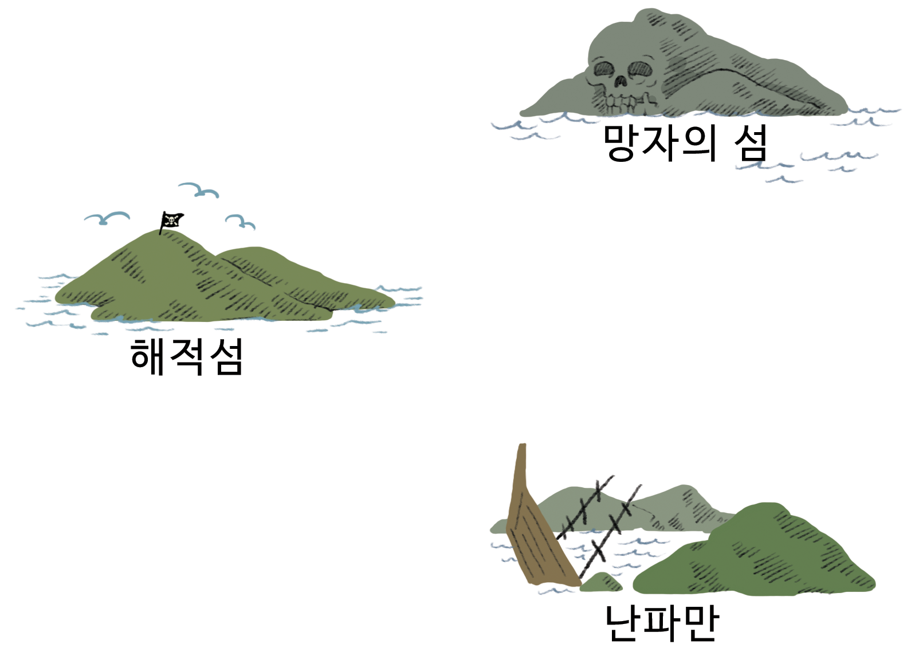
다음 두 페이지에 있는 3장의 카드를 복사해서 아이들이 카드를 1장씩 갖게 합니다. 3장의 카드는 실제 활동에서 사용되는 것과 다르다는 것을 알려줍니다.
해적섬에서 시작해서 배A를 선택합니다. 해적섬 카드를 가진 아이는 배A를 난파만을 목적지로 이동합니다. 지도에 그 경로를 기록합니다. 난파만에서 다시 배A를 선택합니다. 아이는 다시 해적섬으로 배의 진로를 말합니다. 지도에 이것을 기록합니다. 이번에는 배B를 선택합니다. 지도에 표시합니다. 이 경로가 선택하게 되면, '망자의 섬'으로 가서, 꼼짝할 수 없이 갇히게 됩니다.
최종지도는 다음과 같습니다:

시연 활동을 위한 카드

활동
섬 역할을 수행할 아이 7명을 선택합니다. 아이들은 뒷면에 비밀 명령이 있는 섬 카드를 지니고 있습니다. 교실 내부나 실외에서 적절한 공간에 무작위로 아이들을 배치하세요. 나머지 아이들은 공백 지도를 가지고 해적섬에서 보물섬으로 가는 항로를 지도에 표시하면서 항해할 것입니다. (보물섬에 갈 아이는 한 번에 한 명만 한정하여 미리 목적지를 듣고 못하도록 하는 것이 좋습니다.)
빨리 끝난 아이: 다른 경로를 찾아보세요.
완성된 지도는 아래와 같을 것입니다.

후속 토론
가장 빠른 항로는 무엇입니까? 매우 느린 항로는 무엇입니까? 몇몇 항로는 반복(loop)을 포함한 항로도 있습니다. 반복을 포함한 항로의 예를 보여줄 수 있습니까? 보물섬에 도착하는 항로의 예를 보여줄 수 있나요? (예를 들어, 항로 BBBABAB과 BBBABBABAB 모두 보물섬에 도착합니다)
워크시트 활동: 보물섬의 보물까지 가는 길을 찾아라.
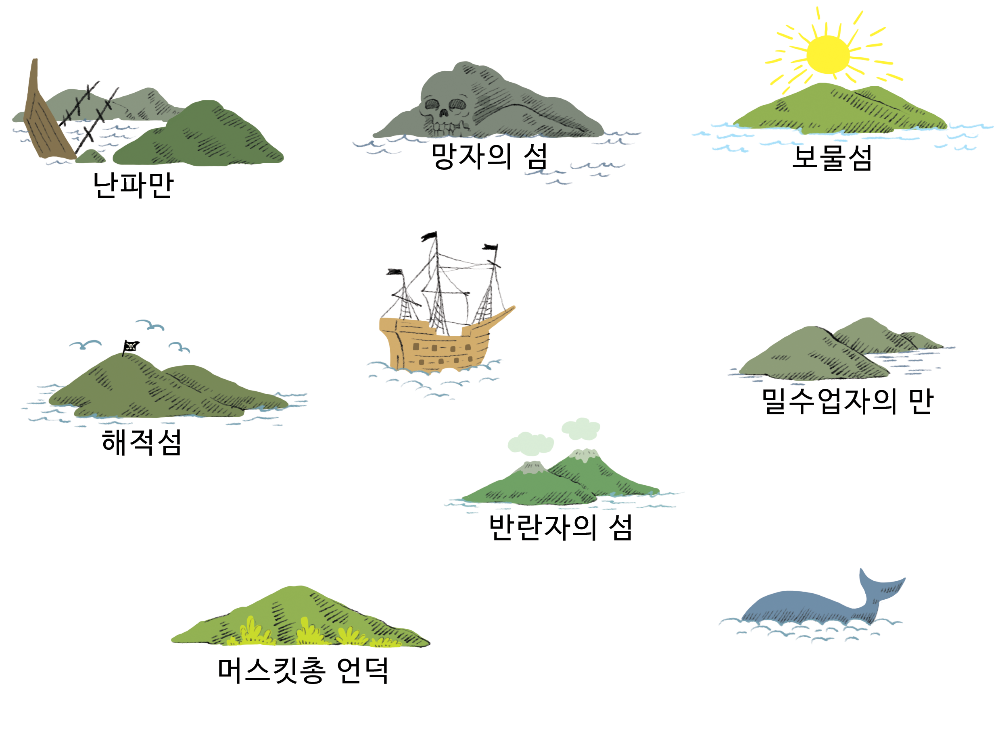
복사 마스터: 섬 카드
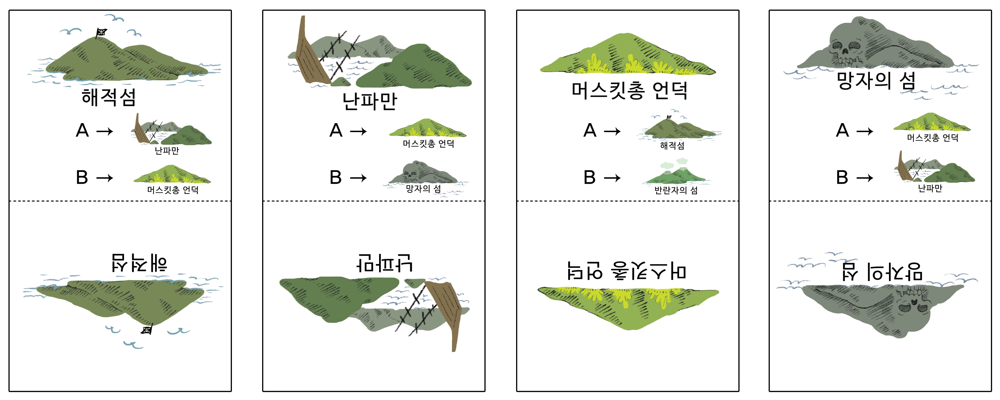

유한-상태 오토마타(Finite-State Automata)
지도를 그리는 다른 방법은 다음과 같습니다.

섬은 숫자를 포함한 원으로 표현하고, 최종 보물섬은 이중 원으로 표시합니다. 최종 보물섬에 도착하기 위해서 어떤 항로로 항해를 해야 할까요?
주의: 지도 (a)에서는 일련의 항해 순서(sequence)가 홀수개의 A를 가진 경우에만 이중 원(섬 2)에 도착할 수 있습니다. (예: AB, BABAA, or AAABABA).
지도 (b)는 A와 B가 교대로 나타나는 경우에만 이중 원 (섬 1)에 도달할 수 있습니다.Bs (AB, ABAB, ABABAB, …)
지도 (c)는 이동 순서(sequence)에 적어도 하나의 B가 포함되어야 합니다. (B를 포함하지 않은 A, AA, AAA, AAAA, … 은 이중 원(섬 2)에 도달할 수 없습니다.)
워크시트 활동: 보물섬
보물을 잘 숨기셨는지요? 보물을 찾기 얼마나 힘들게 할 수 있을까요? 이제 자신만의 보물지도를 만들어 보세요.
- 동일한 아이디어를 지도로 표현하는 좀더 복잡한 방식이 다음에 있다. 이 지도는 앞에서 연습한 것과 동일하다. 컴퓨터 과학자는 이러한 빠르고 쉬운 방식을 사용하여 패턴에 대한 경로를 설계한다.

이것을 참조해서 자신만의 항해 계획을 그려보자. 이제 여러분의 해적선의 항해 경로를 명확하게 시각적으로 표현할 수 있다. 그리고 나서 자신만의 공백 지도와 섬 카드를 만들어 보자. 보물섬에 도착하는 가장 효과적인 항해 순서는 어떻게 될 까요?
- 친구들이 여러분이 작성한 지도를 따라 잘 항해를 할 수 있을까요? A, B 순서 조합에 대해서 알려주고, 친구가 제대로 섬에 도착하는지 알아보세요.
유한상태 오토마타의 개념에 기초하여 다양한 게임과 퍼즐을 만들 수 있습니다.
- 다음은 지도의 무작위 경로를 따라서 만나게 되는 단어를 적어 나가 자연스럽게 문장을 생성하는 방법입니다.

이제 동일한 개념을 이용하여 새로운 작문 게임을 만들어봅시다. 혹시, 재미있는 코믹 이야기를 만들 수도 있습니다.
워크시트 활동: 수수께끼 동전 게임
한 친구가 인터넷에서 게임을 다운로드 했습니다. 로봇이 동전을 던지면, 앞면이 나올지 뒷면이 나올지를 맞추는 게임이었습니다. 처음에 무척이나 간단해 보였고, 적어도 50대50 가능성이 있다고 생각했습니다. 하지만, 잠시 뒤에 의심스러운 생각이 들었습니다. 동전 던지기에 특정한 패턴이 있는 것처럼 보였습니다. 인간이 게임을 이길 수 없게 게임이 조작되었나? 분명 아닙니다. 게임을 조사하기로 마음먹고, 조(Joe)는 게임에서 동전 던지기 결과를 적기 시작했고, 다음이 동전던지기 결과 찾아낸 것입니다. (h = heads 앞면, t=tails 뒷면)
h h t h h t h h h t t h h h h t t h t t t h h h h h t h h h t t t h h h t t t h h h h h h t t h t t t t t h t t h t t t h h h t t h h h t h h h h h h h h h t t h h h t t t t h h h h h t t t t t t t
예측 가능한 패턴을 찾으셨나요?
동전던지기 규칙을 나타내는 아주 간단한 지도가 있습니다. 여러분이 해결할 수 있는지 확인해 보세요. (힌트: 단지 4개의 ‘섬’밖에 없습니다.)
컴퓨터 과학 핵심 개념
컴퓨터 과학에서 컴퓨터가 문자나 이벤트 순서(sequence)를 처리하려고 유한상태 오토마타(finite-state automata)를 사용합니다.
가장 간단 사례로 전화 자동응답 서비스가 있습니다. 전화를 걸면 자동응답 시스템에서 "무슨 서비스를 원한다면… 1번, 다른 무언가를 원한다면 … 2번, 상담원과 직접 통화를 원하시면 3번 버튼을 누르십시오"라는 메시지를 들을 수 있습니다. 전화 숫자 버튼을 누르는 것은 전화 저편에 있는 컴퓨터 유한상태 오토마타에 입력을 주는 것입니다. 컴퓨터와 대화는 간단할 수도, 매우 복잡할 수도 있습니다. 유한상태 오토마타에는 특유의 무한반복이 존재하기 때문에, 계속해서 동일한 대화를 반복하게 됩니다. 만약 이런 일이 발생한다면, 분명한 시스템 설계에 오류가 있으며, 전화를 거신 여러분은 분명 매우 당황스러울 것입니다.
또 다른 사례는 현금 자동인출기계에서 현금을 인출하는 경우입니다. 현금 자동인출기계 프로그램은 여러분들로 하여금 이벤트 순서를 발생시킬 것입니다. 프로그램 내부에, 모든 가능한 순서가 유한-상태 오토마타로 표현되어 있습니다. 사용자가 키를 누를 때마다 다음 상태로 자동적으로 이동하게 됩니다. 몇몇 상태는 컴퓨터에 지시사항을 담고 있습니다. 예를 들어, "현금 만원을 지불하세요", "명세표를 출력하세요", "현금카드를 꺼내세요".
몇몇 컴퓨터 프로그램은 페이지 97와 같은 지도를 사용하여 국어나 영어 문장을 정말 잘 다룹니다. 이들 컴퓨터는 문장을 잘 만들어 낼 뿐 아니라 사용자가 입력하는 문장을 잘 처리하기도 합니다. 1960년대 컴퓨터 과학자가 사람과 대화하는 "Eliza", 후에 "Eliza Dolittle"라는 프로그램을 만들었습니다. 영화 '마이 페어 레이디'에서 오드리 헵번이 연기한 꽃 파는 소녀 이름이기도 합니다. 이 프로그램은 마치 자신이 심리치료 전문가처럼 행사하며 "여러분의 가족에 대해서 알려주세요", "아무쪼록 계속하십시오" 같이 대화를 이끌어 가는 질문을 곧잘 했다. 사실 이 컴퓨터는 아무것도 이해를 하지 못하지만, 그럴듯하게 보였고, 몇몇 사람은 자신이 사람 심리치료 전문가와 대화하고 있다고 생각하기도 했습니다.
컴퓨터가 자연어를 이해하는 데는 서투르지만, 인공언어를 처리하는 것은 꽤 잘 합니다. 프로그래밍 언어는 중요한 인공언어 중 하나입니다. 컴퓨터는 유한상태 오토마타를 사용하여 프로그램을 읽어서 컴퓨터가 "실행할"" 수 있는 컴퓨터 명령어로 변환합니다.
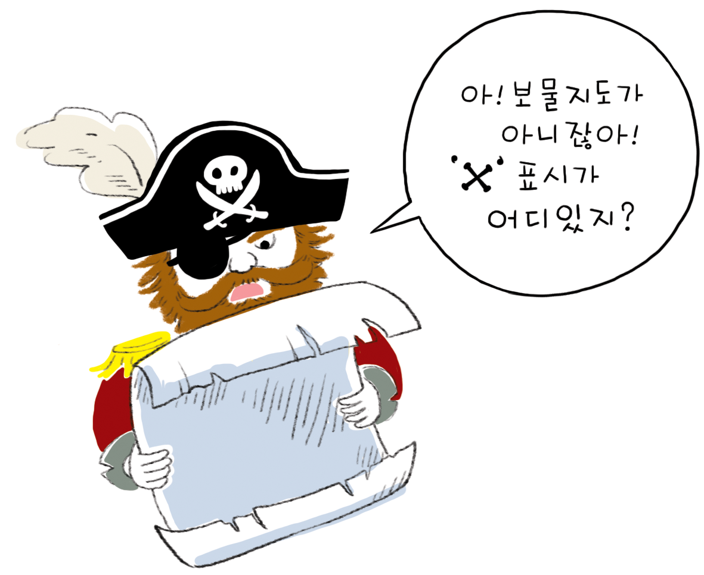
해답과 힌트
수수께끼 동전 게임 (103페이지)
수수께끼 동전 게임은 동전을 던질 때마다 다음 지도를 사용합니다.

이 지도를 따라가면, 동전을 세번 던질 때마다 처음 두번은 필히 같은 면을 가지는 것을 알 수 있다.
진군 명령 — 프로그래밍 언어(Programming Languages)
개요
대체로 컴퓨터는 제한된 명령어 어휘로 구성된 "언어"로 프로그래밍됩니다. 프로그래밍에 대한 가장 힘든 부분 중의 하나는 컴퓨터가 말도 안되는 결과를 생성하더라도, 지시사항을 글자 한자까지도 지키다는 것입니다. 이번 활동을 통해서 아이들은 프로그래밍의 이러한 점을 경험할 것입니다.
교과학습 연계
- 국어(English) : 대인 관계 경청
기술
- 지침을 주고 받는 것을 이해하기
나이
- 7세 이상
학습 교재
- 선생님이 필요한 것 – 다음에 그려진 것 같은 그림 카드
- 아아마다 필요한 것 – 연필, 종이, 자
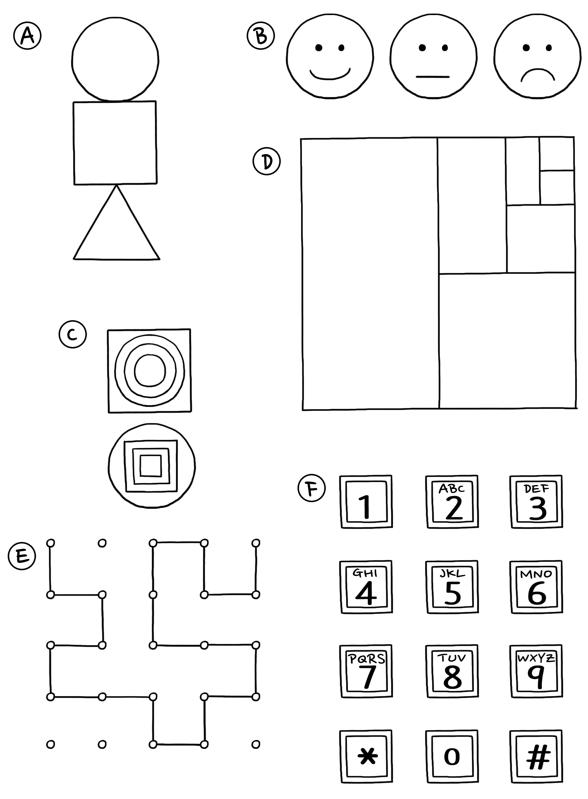
진군 명령 (Marching orders)
|
|
|
|
|
|
들어가며
사람이 지시 명령대로만 움직여 복종하는 것이 좋은 것인지를 토론하자. 예를 들어, 만약 여러분이 닫혀있는 문을 가리키며 "그 문을 통과하십시오"라고 하면 무슨 일이 발생할까요?
컴퓨터는 주어진 명령 목록 그대로 수행합니다. 비록 상식적으로 납득이 가지 않는 것도 정확하게 명령 목록에 적혀진 그대로 수행합니다.
시연 예제
아래 지시사항을 따라서 아이들이 그림을 그릴 수 있는지 살펴봅시다.
-
아래 사각형 중간에 점을 그리세요.
-
왼쪽 상단 모서리에서 시작해 가운데 점을 지나 오른쪽 아래 모서리에서 끝나는 직선을 그으세요.
-
왼쪽 아래 모서리에서 시작해 가운데 점을 지나 오른쪽 위 모서리에서 끝나는 직선을 그으세요.
-
왼쪽 중간 삼각형에 자신의 이름을 쓰세요.
-
결과를 확인하고 친구의 그림과 비교해 보세요.
결과는 아래와 같은 느낌입니다.

활동
아이를 골라서 107 페이지와 같은 그림을 주세요. 학급의 아이들이 그림을 그릴 수 있도록 선택된 아이가 그림을 묘사합니다. 아이들이 질문을 통해서 묘사하는 지침을 명확히 할 수 있습니다. 이번 활동의 목적은 얼마나 빠르고 정확하게 완료하는지를 확인하는 것입니다.
동일한 활동을 반복하지만, 이번에는 아이들이 질문을 할 수 없습니다. 이번 활동은 아이들이 빨리 쫓아가기가 어렵기 때문에, 좀더 간단한 이미지를 사용하는 것을 권장합니다.
스크린 뒤에서 아이가 지침만 전달하는 방식으로 진행합니다. 이번 활동에서는 어떠한 질문도 허용되지 않고, 커뮤니케이션이 단지 지침의 형태로만 전달됩니다.
마지막 종류의 커뮤니케이션 방식이 프로그램을 작성할 때 프로그래머가 경험하는 것과 동일하다는 것을 일러줍니다. 프로그래머가 컴퓨터에 명령문을 전달하지만, 나중에 실행해 보기까지는 결과를 알 수 없습니다.
아이에게 그림을 그리고 명령문을 작성하게 합니다. 짝을 지어서 혹은 전체 학급이 실습을 진행합니다.
변형
-
종이 비행기를 만드는 명령문을 적어보세요.
-
"앞으로 x 미터 전진하세요", "90도 왼쪽으로 도세요", "90도 오른쪽으로 도세요" 같은 명령문을 사용하여 학교 비밀장소에 도착하는 명령문을 작성해 보세요. 아이들은 자신들이 생각한 결과를 얻을 때까지 명령문을 시험하고 가다듬어야 합니다.
-
눈가리개 게임. 아이 한명의 눈을 눈가리개로 가리고, 지시 명령문에 따라 교실 여기저기를 돌아다니게 해 보세요.
컴퓨터 과학 핵심 개념
컴퓨터는 프로그램(Program)이라고 불리는 명령 목록에 따라 동작합니다. 프로그램은 특별한 작업을 수행하도록 작성되었습니다. 프로그램은 한정된 명령문의 집합으로 특별히 설계된 언어로 작성되었습니다. 프로그램은 컴퓨터가 무엇을 수행해야 하는지를 담고 있습니다. 특정 언어는 다른 언어보다 특정 목적을 수행하는데 더 적합합니다.
어떤 언어를 사용하든지, 프로그래머는 컴퓨터에 실행시키고자 하는 것을 정확하게 전달하는데 능숙해야 합니다. 인간과 달리, 컴퓨터는 터무니 없는 것일지라도 지시명령문의 글자 그대로 수행합니다.
프로그램이 올바르게 작성되었는지도 확인하는 것도 매우 중요합니다. 작은 오류가 아주 큰 문제를 일으킬 수 있습니다. 우주 왕복선 발사, 원자력 발전소, 철도 신호 등 컴퓨터 프로그램의 사소한 오류조차도 발생할 엄청난 결과를 상상해 보세요. 1940년대 초 전자계산기가 고장이 났을 때 내부 전기 릴레이에서 나방 한마리를 제거(“debugged”)해서 고장을 고쳤습니다. 이를 기념하여 오류를 버그(“bug”)라고 하며, 오류 제거하는 것을 "디버깅(debugging", "벌레 잡기”)라고 부르게 되었습니다.
프로그램이 복잡해질수록, 더 많은 오류가 발생할 가능성은 높아집니다. 미국이 전략방위구상 스타워즈 ("Star Wars") 프로그램을 진행할 때 커다란 이슈가 되었습니다. 이 프로그램은 핵 공격에 대항해 난공불락의 방어체계를 구축하는 컴퓨터로 제어되는 시스템을 구축하고자 했습니다. 몇몇 컴퓨터 과학자는 소프트웨어의 복잡성과 내재된 저신뢰성으로 실현 불가능하다고 주장하였습니다. 가능한 많은 버그를 잡기 위해 소프트웨어를 테스트를 할 수는 있지만, 누군가 미국을 향해서 미사일을 발사해서 실제 시스템을 제대로 동작하는지 시험해야 하는데 이것은 현실적으로 불가능하기 때문입니다.

제 4 부 (Part IV)
정말 어려운 문제 — 난해성(intractability)
- 불쌍한 지도 제작자 — 그래프 색칠하기(Graph Coloring)
- 여행자 도시(Tourist town) — 지배 집합(Dominating Sets)
- 얼음길(Ice roads) — 스타이너 나무(Steiner Trees)
다루기 힘듦(Intractability)
컴퓨터에게 조차도 너무 어려운 문제가 있을까요? 예, 있습니다. 20번째 활동에서 살펴보겠지만, 단지 대화하는 것—채팅(chatting)—조차도 컴퓨터가 할 수 없다. 컴퓨터가 말을 할 수가 없어서가 아니라, 컴퓨터가 의미있는 것을 이해하고 생각해 낼 수가 없기 때문이다. 하지만, 여기서 논의하는 정말 어려운 문제는 이런 종류가 아니다. 사실 컴퓨터가 대화를 하지 못하는 것은 아니다. 사람이 어떻게 대화를 하는지 알지 못해서, 컴퓨터에게 무엇을 수행하도록 지시할 수 없다. 이번 섹션에서 컴퓨터에게 수행 명령을 지시—프로그램 작성—하기는 쉬우나, 사람이 원하는 것을 컴퓨터가 수행하지 못하는 종류의 문제를 살펴본다. 이유는 컴퓨터가 답을 가져오는데 아마도 수백만년 시간만큼, 작업 소요시간이 너무 오래 걸린다.
제 2부 알고리즘 활동에서 컴퓨터 프로그램을 좀더 효율적으로 작성하는 방법을 살펴보았다. 이번 섹션에서 효율적인 어떠한 해결책도 알려지지 않은 문제를 살펴볼 것이다. 즉, 컴퓨터가 문제를 해결하는데 수백만년 걸리는 문제다. 그리고 나서 오늘날 컴퓨터과학에서 가장 커다란 미스터리로 남은 것과 조우한다. 어느 누구도 이러한 종류의 문제를 해결하는 좀더 효율적인 방법이 존재하는지 모른다. 아마도 어떤 사람도 좋은 방식을 아직 발견하지 못했거나 좋은 방식이 존재하지 않기 때문인지도 모른다. 둘 중에 어느 것이 맞는지 알지 못한다. 그리고 그것이 끝이 아니다. 설사 매우 다른 문제처럼 보이지만, 만약 효율적인 방법을 사용하여 문제를 해결할 수 있다면, 이러한 효율적인 방법을 전환하여 관련된 모든 문제를 해결할 수 있기 때문에 동등한 수천개 문제가 있게 된다. 이번 활동에서 이런 종류의 문제를 학습한다.
선생님에게
이번 섹션에는 활동이 세개 있다. 첫번째 활동은 지도를 색칠하고, 인접한 나라를 다른 색깔로 색칠하기는데 얼마나 많은 색깔이 필요한지 계수한다. 두번째 활동은 간단한 도로지도를 사용하는 능력이 필요하다. 거리에 아이스크림 차량을 배치해서 사람들이 너무 멀리가지 않고 아이스크림을 살 수 있게 한다. 세번째 활동은 야외활동으로 줄과 못을 사용해서 집합의 점들을 연결하는 짧은 네트워크를 구성하는 방법을 탐색한다.
복잡성(complexity)에 대한 아이디어를 실습 활동을 통해서 공감하게 된다. 말로 구술하기는 매우 간단한 문제가 해결하기에는 너무나 어려운 문제가 해당된다. 그리고, 이러한 문제가 결코 난해하지 않다. 학교 시간표 작성, 도로 건설, 매핑 등 같은 일상 생활에서 발생하는 실무적인 문제다. 컴퓨터적 토대는 각 활동 마무리에 있는 "컴퓨터 과학 핵심 개념"에 설명된 "NP-완전성(NP-completeness)"이라고 불리는 개념에 기반한다. 활동 자체는 임의 순서로 다뤄질 수 있지만, 각 섹션은 순차적으로 읽어 내려가도록 구성되었다. 마지막을 읽어 내려갈 때 즈음, 현대 컴퓨터 과학에서 가장 중요한 미해결 문제(open question)에 대한 확고한 이해를 갖게 된다.
제4부에 대한 기술명칭은 "난해성(intractability)"인데 해결하기 어려운 문제가 난해하다고(intractable) 불리기 때문이다. 당기다 끌다는 의미를 가지는 라틴어 tractare 에서 유래해서 현재는 다루기 쉬운(tractable), 휘기 수운, 유순한 이라는 의미로 사용된다. 난해한 문제(intractable problem)는 쉽게 다룰 수 없는데 이유는 답을 가져오기까지 너무나 오래 걸린다. 비밀스럽게 드릴지 모르지만, 난해성은 일상에서 매우 중요한다. 왜냐하면, 이 분야에서 돌파구가 마련되면 많은 다른 연구분야에 엄청난 파생결과가 발생한다. 예를 들어, 대부분의 암호화 코드는 어떤 문제의 난해성에 기반한다. 그래서 효율적인 해결책을 발견한 범죄자가 신나서 암호를 풀어 상업적으로 판매를 하거나 혹은 좀더 단순하게 거짓 운행 거래를 생성할 수 있다. 제5부에서 암호기법(cryptograph)에서 살펴볼 것이다.
가난한 지도 제작자 — 그래프 색칠하기(Graph coloring)
개요
많은 최적화 문제는 특정 사건이 동일 시간에 발생할 수 없거나, 집합 객체에 소속된 구성원이 서로 인접할 수 없는 상황을 포함된다. 예를 들어, 수업 시간표나 회의 일정표를 작성하는 사람은 관련된 모든 사람의 제약조건을 만족시키는 문제에 맞닥드리게 된다. 이러한 어려움 중의 상당부분은 지도 색책 문제로 귀결된다. 이 문제에서 지도에 있는 국가들, 국경을 맞대고 있는 나라를 다른 색깔을 정해서 칠해야 한다. 이번 활동은 이 문제에 관한 것이다.
교과학습 연계
- 수학: 숫자 — 다른 진법의 숫자 탐색. 이진수로 숫자 표현하기.
- 수학: 대수 — 순차 패턴 계속하기. 패턴 규칙 기술하기. 이진 패턴과 관계
기술
- 문제 해결
- 논리적 추론
- 알고리즘 절차와 복잡성
- 직관을 의사소통하기
나이
- 7세 이상
학습 교재
- 화이트보드/칠판 혹은 유사한 필기면.
- 아이마다 필요한 것 – 워크쉬트 사본 한장 이상 – 이동 가능한 작은 컬러 마커 (예, 보드 게임 패, 포커칩(poker chips)) – 서로 다른 네가지색 크레용 (혹은 칼라연필, 싸인펜)
그래프 색칠하기 (Graph coloring)

들어가며
이번 활동은 이야기를 중심으로 돌아간다. 학생이 지도에 있는 나라를 색칠하는 지도 제작자를 돕는다. 국경을 맞대고 있는 나라가 다른 색깔이기만 하면, 나라를 무슨 색으로 칠하든지 문제가 되지 않는다.
예를 들어, 다음 지도에는 나라가 네개 있다. 만약 Northland를 빨간색으로 칠한다면, Westland와 Eastland는 빨간색이 될 수 없다. 왜냐하면, Northland와 국경을 맞대고 있어서 경계를 구별할 수 없기 때문이다. Westland를 녹색으로 칠할 수 있고 Eastland도 녹색으로 칠하는 것이 용인된다. 왜냐하면 Westland와 국경을 맞대고 있지 않기 때문이다. (만약 두 나라가 한 점에서 만난다면, 국경을 공유하는 것으로 간주되지 않아서, 동일한 색깔을 칠할 수 있다.) Southland를 빨간색으로 색칠해서 지도상에 단지 두가지 색으로 색칠을 끝마칠 수 있다.
지도 제작자가 가난해서, 크래용을 많이 사용할 수 없다. 그래서, 가능한 적은 수의 크래용을 사용하는 아이디어를 내보자.

토론
학생들에게 해결하려는 문제를 기술하게 하고, 칠판에 색칠하는 프로세스를 시연하게 한다.
첫번째 워크시트 사본을 나눠준다. 단지 두가지 색을 사용하여 올바르게 지도를 색칠할 수 있다. 단지 두가지 색으로 제한하는 것이 다소 도전과제스럽게 다가올 수 있지만, 더 많은 색을 요구하는 지도와 비교하여 간단한 과제가 된다. 왜냐하면, 각 나라를 무슨 색으로 칠할지 선택지가 그다지 많지 않기 때문이다.
학생들에게 지도를 단지 두가지 색만을 가지고 색칠하게 해본다. 이 과정에서 "해야되는 필수" 규칙을 학생들이 발견한다: 한 나라를 색칠하게 되면, 국경을 맞대고 있는 나라는 반대색으로 색칠하는 규칙. 모든 나라를 색칠할 때까지 반복적으로 이 규칙이 적용된다. 규칙을 알려주기보다 학생들 스스로 규칙을 발견할 수 있다면 최선이다. 왜냐하면 학생들에게 프로세스에 대해서 더 나은 직관을 전달하기 때문이다.
학생들이 각 연습문제를 수행하면, 다음 연습문제를 전달한다.
색깔이 칠해진 패(counter) 같은 플레이스홀더(placeholder)를 사용하는 것이 낫다는 것을 학생들이 알아챌 수도 있다. 왜냐하면, 나라를 바로 색칠하는 것보다 마음이 바뀔 때 좀더 쉽게 색을 반영할 수 있기 때문이다.
고학년 학생들에게, 찾은 색깔 숫자가 최소인지를 어떻게 알 수 있는지 설명하게 한다. 예를 들어, 이번 지도에는 최소 삼색이 필요한데 이유는 나라 세개 그룹이 있는데, 각각의 나라는 다른 두 나라와 국경을 맞대고 있기 때문이다.
만약 학생이 모든 지도를 빨리 끝마치게 된다면, 다른 5가지 색이 필요한 지도를 제작하게 한다. 어떤 지도라도 단지 4가지 색으로 칠할 수 있다는 것이 증명되었다. 그래서 숙제로 준 작업은 한 동안 학생에게 시간이 걸릴 것이다. 경험상 학생이 믿기에 5가지 색이 필요한 지도를 빨리 제작할 수 있다. 하지만, 지도에서 4가지 색으로 색칠할 수 있는 방법은 항상 찾을 수 있다.
워크시트 활동: 그래프 색칠하기 1
가능하면 적은 수의 색을 사용하여 지도에 있는 나라들에 색을 칠하세요. 하지만, 국경을 맞대고 있는 인접한 어떠한 나라도 동일한 색깔이면 되지 않도록 확실히 하세요.

워크시트 활동: 그래프 색칠하기 2
가능하면 적은 수의 색을 사용하여 지도에 있는 나라들에 색을 칠하세요. 하지만, 국경을 맞대고 있는 인접한 어떠한 나라도 동일한 색깔이면 되지 않도록 확실히 하세요.

워크시트 활동: 그래프 색칠하기 3
가능하면 적은 수의 색을 사용하여 지도에 있는 나라들에 색을 칠하세요. 하지만, 국경을 맞대고 있는 인접한 어떠한 나라도 동일한 색깔이면 되지 않도록 확실히 하세요.

워크시트 활동: 그래프 색칠하기 4
가능하면 적은 수의 색을 사용하여 지도에 있는 나라들에 색을 칠하세요. 하지만, 국경을 맞대고 있는 인접한 어떠한 나라도 동일한 색깔이면 되지 않도록 확실히 하세요.
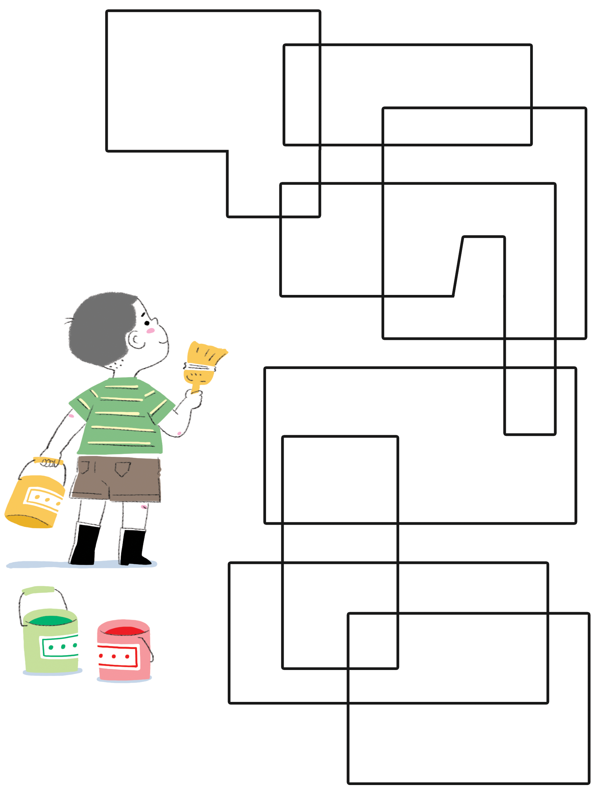
변형과 확장
여기 보여진 것처럼. 단지 두가지 색을 사용하여 지도를 제작하는 간단한 방법이 있다. 다음 지도는 닫힌 폐곡선(시작하는 지점과 끝점이 만나는 선)을 중첩해서 그렸다. 폐곡선 상단 위에, 이런 곡선을, 임의의 모양으로 임의의 숫자만큼 그릴 수 있다. 그리고 이러한 지도는 단지 두가지 색으로 항상 색칠할 수 있다. 학생들은 이런 유형의 지도를 만들어서 실험해 볼 수 있다.
종이 평면이나, 구면에 그린 지도를 색칠하기에는 색깔 네개면 충분하다. 토러스(도넛 모양)같은 괴상한 표면에 그려진 지도를 색칠하는데 얼마나 많은 색이 필요할지 궁금한데, 과학자도 마찬가지다. 이 경우, 5가지 색이 필요할지도 모른다. 항상 5가지 색이면 충분하다. 학생들이 이러한 실험을 진행하고 싶을지도 모른다.
지도 색칠 문제에는 흥미로운 많은 변형이 있어서 현재 알려지지 않은 방향으로 이끌 수도 있다. 예를 들어, 만일 내가 나만 종이위 지도에 색을 칠한다면, 내가 똑똑하게 작업하고나면 네가지 색깔이면 충분하다는 것을 안다. 하지만, 혼자서 작업하는 대신에, 무능한 (혹은 악의적인) 동료와 공동 작업을 하고, 교대로 나라마다 색을 칠한다고 가정하자. 나는 똑똑하게 작업하는 반면에 지도위에 나라마다 색을 칠하는 작업을 돌아가며서 진행하는데 동료는 "법이 허용하는" 한도내에서만 작업한다고 가정하자. 동료의 적합하지만 그다지 똑똑하지 못한 색칠 혹은 체제 전복적인 색칠을 추가 보상해서 제대로 만드는데 크레용이 얼마나 필요할까? 최대 색칠 숫자는 아직까지 알려지지 않았다! 1992년 크레용이 33개면 충분하다는 것이 증명되었다. 2008년 크레용이 17개면 충분할 것이다는 것이 증명되어 향상되었다. 하지만, 아직까지 이렇게 많이 필요한지 알지 못한다. (전문가는 10개보다 적은 색깔이면 충분하지 않을까 추측한다.) 학생들은 이러한 상황을 즐겁게 놀 수 있다. 두사람이 게임을 벌여 상대방이 필요한 색깔 숫자가 최대가 되도록 만드는 놀이를 한다.
제국 채색(empire coloing)으로 알려진 또 다른 지도 책색 변형이 있다. 동일한 나라 숫자를 가진 두장의 종이 위에 서로 다른 지도가 있다. 한장의 지도(예를 들어 지구) 위에 각 나라는 다른 지도 (달위에 식민지) 위에 한 나라와 정확하게 매핑되어 짝지어진다. (양쪽 지도에 대해) 국경을 맞대고 있는 나라마다 각기 다른 색을 채색하는 요구사항에 더해서 하나의 요구사항을 더 추가한다. 지구상의 각나라는 달에 있는 식민지와 동일한 색으로 채색되어야 한다. 이 문제에 대해서 얼마나 많은 색깔이 필요할까요? 현재 정답은 알려져 있지 않다.
컴퓨터 과학 핵심 개념
이번 활동에서 탐색한 지도 채색 문제는 본질적으로 특정한 지도를 채색하는데 필요한 최소색 숫자—2, 3, 4—를 찾는 것이다. 단지 4가지 색을 사용해서 어떤 지도도 채색될 수 있다는 추측은 1852년에 정립되었다. 하지만, 1976년이 되어서야 증명이 되었다. 컴퓨터 과학은 미해결된 문제로 가득차 있다. 네가지 색깔 정리가 연구자로부터 120년 이상 관심을 받을 후에야 증명되었다는 것을 알게되는 것은 수십년동안 해결책이 발견되지 않은 다른 문제에 학생들이 달려드는데 좋은 동기부여가 된다.
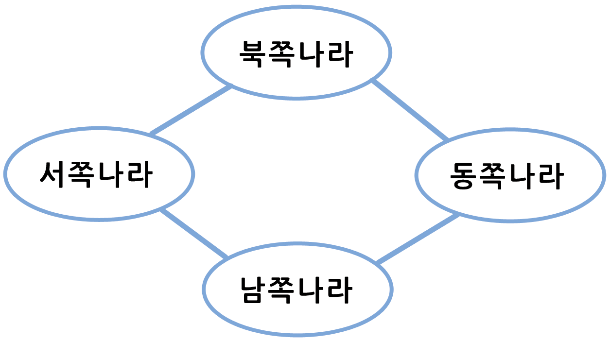
지도 책색은 그래프 채색(graph coloring)으로 알려진 일반적인 문제 분야에 속한다. 컴퓨터 과학에서 여기 보여지듯이 그래프는 관계의 추상적인 표현이다.
진흙도시 활동 9 에서 언급되었듯이, 그래프라는 단어는 숫자 데이터를 표현하기 위한 막대그래프 같은 차트를 의미하는 수학에서 다른 의미로 사용된다. 컴퓨터 과학자가 사용하는 그래프는 이것과 연관되어 있지 않다. 컴퓨터 과학에서 그래프는 기술적으로 객체를 표현하는 노드(node)라고 불리는 원 혹은 큰 점을 사용해서 표현한다. 객체와 객체 사이에는 선을 그어서 객체간에 일종의 관계가 있다는 것을 표기한다. 상기 그래프는 활동 처음에 나온 지도를 그래프로 표현한 것이다. 노드는 나라를 두 노드 사이의 선은 두 나라가 국경음 맞대고 있음을 표기한다. 그래프에서 채색 규칙은 어떠한 연결된 노드도 동일한 색으로 채색될 수 없다는 것이다. 지도와 달리, 일반적인 그래프가 필요로 하는 색 수에는 한계가 없다. 왜냐하면, 많은 다른 제약이 연결된 선에 가해질 수 있는 반면에 지도의 이차원적인 특성이 가능한 방식을 제약한다. 그래프 채색 문제(graph coloing problem)는 특정 그래프에 채색에 필요한 최소 색깔 숫자를 찾는 것이다.

다음 그래프에서 노드는 학교 수업 과목에 대응된다. 두 수업 과목 사이의 선은 적어도 한 학생이 두 과목을 수강한다는 것을 나타낸다. 그래서 동일 시간 시간표에 두 과목이 동시에 올라가면 안된다. 이러한 표기법을 사용하여 최소 시간이 필요한 가능한 시간표 만들기 문제는 채색 문제와 동일하다. 다른 색깔은 다른 시간대에 상응한다. 그래프 채색 알고리즘은 컴퓨터 과학에서 매우 흥미로운 주제이며, 많은 실제 생활에서 사용된다. 가난한 지도 제작자는 단지 픽션(fiction)으로 절대로 지도를 채색하는데 그래프 채색 알고리즘을 사용하지는 않을 것이다.
그래프에 기반한 문자 그대로 수천가지 다른 문제가 있다. 활동 9번째에서 언급된 최소생성나무와 활동 14번째에서 언급되는 지배 집합처럼 일부가 이 책에서 기술되었다. 그래프는 데이터를 표현하는 매우 일반적인 방식이고 다양한 상황을 표현하는데 사용될 수 있다. 예를 들어, 도로와 교차로로 구성된 지도, 분자에서 원자간 연결, 컴퓨터 네트워크를 통해 메시지가 전달되는 경로, 전자 기판(PCB) 위 소자들간 연결, 대형 프로젝트를 수행하는 작업들간의 관계를 예로 들 수 있다. 이러한 연유로 인해서 그래프 표현을 포함하는 문제는 오랜동안 컴퓨터 과학자를 매료시켰다.
이러한 문제 중 상당수는 매우 어렵다—개념적으로 어렵다기 보다는 해결방안을 도출하는데 매우 오랜 시간이 걸려서 어렵다. 선생님이 30명, 학생이 800명 있는 학교에 최선의 강의 시간표를 작성하는 것을 예로 들어 보자. 이러한 문제는 중간 정도 크기를 가지는 그래프 채색 문제로 가장 효율적인 해결책을 도출하는 것도 알려진 최선의 알고리즘을 사용해서 몇년, 심지어 수백년이 걸린다. 해결책을 찾아낸 시간이 되면, 문제는 이미 아무 상관업이 무관하게 된다—그리고, 컴퓨터가 작업을 마치기 전에 고장이 나거나 소모되지 않는다고 가정한다. 이러한 문제는 실제에서만 풀려질 수 있는데, 왜냐하면 기꺼이 최적이 아닌 하지만 매우 좋은 해결적을 받아들여 사용하려고 하기 때문이다. 만약 발견한 해결책이 가장 최선이라는 것을 보증하려고 한다면, 문제는 완전히 다루기 힘든 난해성을 가진다.
채색 문제를 해결하는데 소요되는 컴퓨터 시간은 그래프 크기가 증가함에 따라 기하급수적으로 증가한다. 지도채색 문제를 고려해보자. 이 문제는 지도를 채색하는 모든 가능한 방법을 시도해보고 해결할 수 있다. 최대로 채색에 색이 네개가 필요하다는 것을 이미 알고 있기 때문에, 네가지 색을 나라마다 적용해서 모든 가능한 조합을 평가할 필요가 있다. 만약 n개의 나라가 있다면 총 n^4개의 조합이 있다. 숫자는 매우 빠르게 증가한다: 나라가 하나씩 증가할 때마다 4승의 곱만큼 증가해서 시간이 4배로 증가한다. 설사 이 문제를 해결하기 고안된 컴퓨터조차도, 50개 나라를 색칠하는데 한 시간이 소요되고, 나라를 하나 더 추가하면 4시간이 소요되고, 10개 나라를 더 추가하게 되면 일년이상이 정답을 찾는데 소요된다. 점점더 빠른 컴퓨터를 발명한다고 해서 이런 종류의 문제는 사라지지 않는다.
그래프 채색은 해답을 찾는 시간이 기하급수적으로 늘어나는 것을 보여주는 좋은 문제 사례다. 이번 활동에 사용된 작은 지도 같은 매우 간단한 문제 예제로, 최적의 해결책을 찾기는 매우 쉽다. 하지만, 나라의 숫자가 10개국을 넘게 되면, 최적해를 손으로 찾기는 매우 어렵게 된다. 100개 이상의 나라에 대해서 최적해를 찾기 위해서 컴퓨터를 사용하여 지도 채색을 시도하는 것도 수년이 소요될 수 있다.
실생활의 많은 문제는 이와 같은 것이지만, 어쨌든 해결책을 찾아야만 한다. 컴퓨터 과학자는 완전하지는 않지만 훌륭한 답을 제시하는 방법을 사용한다. 휴리스틱(heuristic) 기법은 최적해에 무척 가깝고, 계산하기 빠르고, 실무적인 목적에 가깝게 부합하는 해결책을 제시한다. 학교에서 완벽한 강의 시간표 보다는 한 학급 더 배정하는 정도는 참아낼만 하고, 가난한 지도 제작자도 엄밀하게 보면 필요하지 않더라도, 여분의 색을 사용하는 것을 용인한다.
어느 누구도 전통적인 컴퓨터로 이런 종류의 문제를 해결하는 효율적인 방법이 있다는 것을 증명하지는 못했다. 하지만, 누구도 효율적인 방법이 존재한다는 것도 증명하지는 못했다. 그리고 컴퓨터 과학자는 효율적인 방법이 발견될 것이라는데 회의적이다. 다음 후속 두개의 활동을 통해서 이런 종류의 문제를 학습할 것이다.
추가 읽기
Harel은 역사를 포함하여 네가지 색깔 정리를 "Algorithmics"에서 다루었다. 지도 채색문제의 다양한 측면은 Casey와 Fellows가 This is MEGA-Mathematics에서 다루었다. Kubale이 저술한 2004책에 그래프 채색(Graph Colorings)에는 문제의 역사가 포함되어 있다. 많은 웹사이트에서 이 주제를 다룬다.
해답과 힌트
워크쉬트 1 에 있는 지도에 대한 유일한 해답이다. (물론, 색깔을 선택하는 것은 학생에게 달려있지만, 두가지 다른 색만 필요하다.)
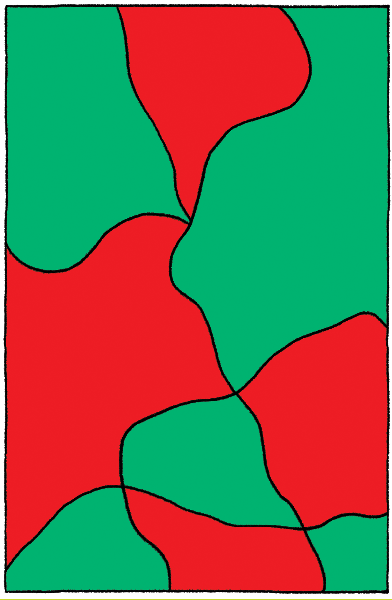 워크쉬트 2 의 상단에 있는 지도는 세가지 색으로 채색될 수 있는 반면에 하단에 있는 지도는 네가지 색이 필요하다. 여기 두가지 가능한 해답이 있다.

워크쉬트 3 에 있는 지도는 좀더 단순한 세가지 색깔지도가 되고 가능한 정답이 함께 있다.

관광 마을 — 지배 집합(Dominating sets)
개요
실생활의 많은 상황은 네트워크 형태나 혹은 활동 13에서 채색에 사용된 종류의 그래프로 추상화될 수 있다. 네크워크는 실무적으로 유용한 알고리즘 개발을 위한 많은 기회를 제공한다.
이번 활동에서 교차점 즉 노드(node)를 몇개 표시해서 다른 모든 노드가 각 노드들과 한 구간 떨어지게 만드는 것이다. 질문은 얼마나 적은 노드를 표시해서 네트워크 완성 작업을 완료하는냐가 된다. 이것은 놀랍게도 매우 어려운 문제가 된다.
교과학습 연계
- 수학 — 위치와 방향
- 수학 — 논리적 추론
기술
- 지도.
- 관계.
- 퍼즐 풀기.
- 반복적 목표 탐색.
나이
- 7세 이상
학습 교재
- 각 그룹의 아이마다 필요한 것: – 아이스크림 승합차 검은색 라인 마스터 사본. – 두가지 다른 색깔 포커칩 혹은 (보드게임에 사용되는) 패 몇개.
- 선생님이 필요한 것: – 화이트보드/칠판에 아이스크림 승합차 해답 검은색 라인 마스터 빔프로젝터 이미지 혹은 해답을 그려서 보여줄 수 있는 화이트보드/칠판.
지배 집합(Dominating Sets)
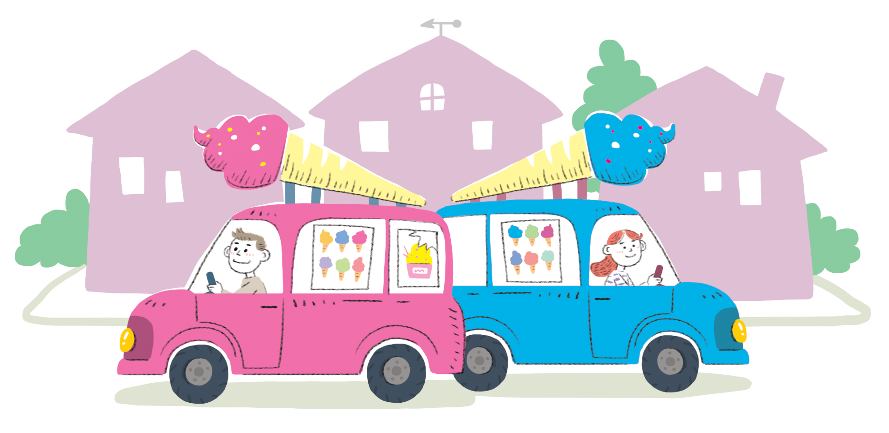
들어가며
아이스크림 승합차 워크쉬트에는 관광 마을 지도가 있다. 선(line)은 거리가 되고, 점(dot)은 거리 모퉁이가 된다. 마을은 매우 더운 지방에 위치해 있고, 여름에 아이스크림 화물차는 거리 모퉁이에 자리잡고 아이스크림을 관광객에게 판다. 승합차를 잘 배치해서 누구나 걷고 있는 거리 끝까지 걸어서, 그리고 나서 기껐해야 한 블록 더 걸어 아이스크림을 살 수 있어야 한다. (거리를 걷고 있는 상황보다 교차로에 서 있는 사람을 상상하는게 더 쉬울 수 있다; 최대로 한 블록만 걸어서 아이스크림을 살 수 있어야 한다.) 질문은 얼마나 많은 승합차가 필요하고, 어느 교차로에 승합차를 배치해야 할까?
토론
- 학생을 작은 그룹으로 나누고, 각 그룹에게 관광 마을 지도, 패 몇개를 나눠주고, 스토리를 설명한다.
- 학생들에게 아이스크림 승합차를 표시려고 어떻게 교차로에 패를 놓는지 보여주고 나서 한 블록 떨어진 교차로에 다른 색깔의 패를 놓는다. 여기 교차로에 있는 사람(혹은 이 거리를 따라 걷고 있는 사람)은 아이스크림 승합차에서 사먹을 수 있다.
- 학생들에게 승합차를 다른 자리로 옮겨 진행하게 한다. 학생들이 모든 조건을 만족하는 조합을 찾아나게 되면, 승합차는 대여하는데 비싸기 때문에 가능하면 적게 사용하여 조건시키도록 상기시킨다. 모든 교차로에 충분한 승합차를 배치시키면 조건을 만족할 수 있다는 것은 명확하다 — 흥미로운 질문은 얼마나 적은 승합차로 조건을 만족시킬 수 있느냐는 것이다.
- 관광 마을에 최소 승합차 숫자는 6대다. 정답이 여기 있다. 하지만 정답을 찾는 것은 매우 어렵다! 잠시 후에, 학습에 있는 학생에게 승합차 6대가 충분하니 도전과제로 적절한 장소에 승합차를 배치시키도록 하자. 여전히 매우 어려운 문제다: 많은 그룹에서 결과적으로 포기한다. 승합자 8대 혹은 9대를 사용한 경우도 정답을 찾기가 어렵다.
- 관광 마을 지도는 아이스크림 승합차 해답 워크쉬트 하단에 있는 6개 조각 지도를 사용해서 만들어졌다. 명백하게도 각각의 조각지도는 단지 하나의 승합차만 필요하고 해답을 위장하기 위해서 거리를 되도록 많이 연결시켰다. 주요점은 해답 교차로(열린 점)들 사이는 어떤 연결도 하지 않고 나머지 점(닫힌 점)들 사이만 연결하는 것이다. 학급 학생들에게 이 기법을 칠판이나 빔프로젝터를 사용하여 보여주세요.
- 동일한 전략을 사용하여 자신만의 어려운 지도를 학생들에게 작성하게 하세요. 스스로 만들어서 친구들이나 부모님에게 자랑하고 싶을지도 모른다— 만든 사람은 풀 수 있으나 다른 사람들은 풀 수 없는 퍼즐을 만든 것을 알기 때문이다.
일방향 함수(one-way function)이라고 불리는 예제다: 퍼즐을 만들기는 쉽지만, 풀기는 매우 어렵다. 특히, 처음에 만든 사람이 본인이 아니라면 그렇다. 일방향 함수는 암호학에서 매우 중요한 역할을 수행한다. (활동 17, 18 참조)

워크시트 활동: 아이스크림 승합차
교차로에 아이스크림 승합차를 적절히 배치해서, 다른 모든 교차로가 아이스크림 승합차가 있는 교차로와 연결되는 방법을 찾아보세요.
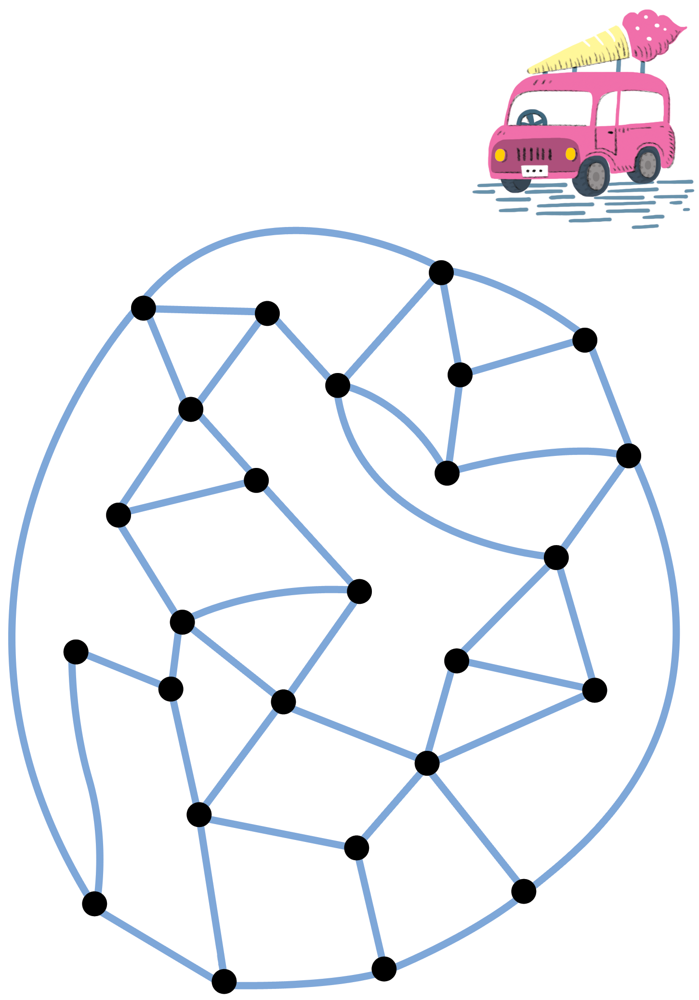
워크시트 활동: 아이스크림 승합차 해법
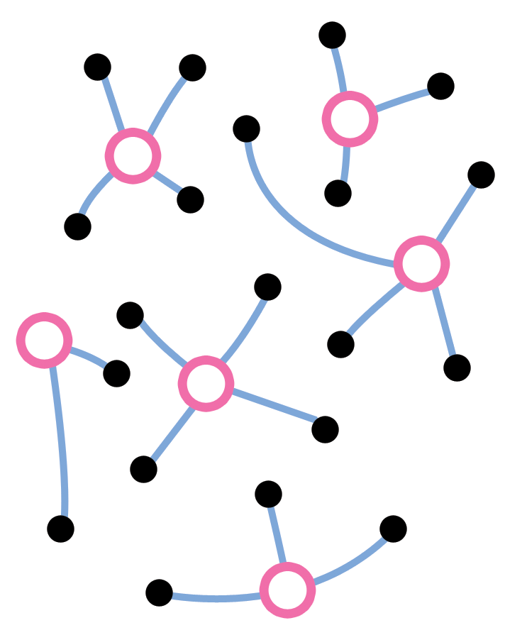
퍼즐이 만들어진 방법을 학생에게 보여주세요.
변형과 확장
도시 계획을 세울 때, 직면하는 상황이 대략 이런 종류의 문제가 된다: 우편함 설치, 우물 파기, 소방소 위치 등. 실생활에서 풀기 쉬운 기교가 있지도 않다. 만약 정말로 이런 종류의 문제를 해결해야 한다면, 어떻게 하시겠습니까?
매우 간단한 방식이 있다: 아이스크림 승합차를 배치할 수 있는 모든 가능한 방법을 고려해서 어느 것이 가장 최선인지를 모두 점검한다. 관광 마을에는 26개 교차로가 있고 따라서 승합차를 배치할 26개 방식이 있다. 26개 모든 가능성을 점검하기는 쉽다. 어떤 것도 원하는 조건을 만족하지 못한다는 것은 명확하다. 승합차가 두대 있을 때, 첫번째 승합차를 놓을 장소는 26개가 된다. 두번째 승합차를 배치할 장소는 25개가 된다. (명확하게 동일한 교차로에 승합차를 모두 배치하지는 않는다.) 26 × 25 = 650 점검할 경우의 수가 있다. 모든 경우의 수를 점검하는 것은 매우 지루한 작업이지만, 다시 각각을 점검하는 것은 쉽다. 사실 경우의 수 중에 절반(325)만 점검하기만 하면 된다. 왜냐하면 어느 승합차가 되던 상관없기 때문이다. 교차로 A에서 1번 승합차를 점검하고, 교차로 B에서 2번 승합차를 점검한다면, 교차로 B에서 1번 승합차, 교차로 A에서 2번 승합차를 점검할 필요는 없다. 세번째 승합차(2,600 경우의 수), 네번째 승합차(14,950 경우의 수) … 계속 점검해 나가면 된다. 명백하게도, 26대 승합차는 충분한데 단지 26개 교차로만 있기 때문이고, 동일한 장소에 1대 이상의 승합차를 배치할 이유는 없다. 경우의 수를 평가하는 또다른 방식은 26개 교차로에 승합차 수의 모든 구성조합수를 고려하는 것이다. 각 교차로에는 두가지 경우의 수(승합차 유무)가 있기 때문에 구성조합의 총 개수는 2^26, 67,108,864가 된다.
이런 방식의 문제해결 방법을 무작위 알고리즘(brute-force algorith)이라고 하며 해를 얻기까지 오랜 시간이 걸린다. 작업량에 관계없이, 컴퓨터가 너무 빨라서 어떤 문제도 빨리 풀 수 있다는 것은 널리 알려진 오해다. 사실은 그렇지 않다. 무작위 알고리즘이 얼마나 시간이 걸릴지는 특정 구성조합이 해답인지 아닌지를 점검하는데 얼마나 빨리 수행하느냐에 달려있다. 가장 가까운 승합차까지의 거리를 찾기 위해서, 모든 교차로를 시험하는 것이 점검사항에 포함된다. 모든 구성조합을 시험하는데 1초 걸린다고 가정하자. 관광 마을 경우에 2^26 모든 경우의 수를 시험하는데 얼마나 오랜 시간이 걸릴까? (정답: 2^26은 약 6,700만; 하루는 86,400초, 2^26초는 약 777일, 즉 약 2년) 1초 대신에 각 구성조합을 점검하는데 천분의 일초가 걸린다고 가정하자. 그리고, 컴퓨터가 36 교차점을 해결하는데 2년이 소요된다고 가정하자. 왜냐하면 2^36은 1,000 * 2^26 이기 때문이다. 컴퓨터가 설사 백만배 더 빨라져서 백만 구성조합을 1초에 점검한다면, 46개 교차점을 점검하는데는 2년이 소요된다. 이정도 마을은 그다지 큰 마을이 아니다! (얼마나 많은 교차로가 여러분이 살고 있는 마을과 도시에는 있나요?)
무작위 알고리즘은 매우 느려서, 문제를 풀 수 있는 다른 방법이 있을까? 활동 9, 진흙도시에서 성공적인 사용한 욕심쟁이 접근법(greedy approach)을 시도해 볼 수 있다. 아이스크림으로 어떻게 욕심을 부릴 수 있는지 생각해볼 필요가 있다— 욕심쟁이 접근법을 어떻게 아이스크림 승합차 문제에 적용할 수 있을까? 하는 의미다. 욕심쟁이 접근법을 적용하는 방식은 다음과 같다. 가장 많은 도로와 연결되는 교차로에 첫번째 승합차를 배치한다. 두번째 승합차는 그 다음으로 많은 도로와 연결된ㅁㄴㄴㄴㄴㄴㄴ 결되는 교차로에 배치한다. 이와 같은 방식을 계속 반복한다. 하지만, 이 방식이 반듯이 최소 아이스크림 승합차 숫자를 보장하지는 않는다. 사실, 관광 마을에서 가장 많은 도로와 연결된 교차로(5개 도로와 연결)는 승합차를 배치하기에 적절한 장소가 아니다. (수업 시간에 점검해 보라.)
좀더 쉬운 문제를 살펴보자. 최소 구성조합을 찾는 대신에, 구성조합이 주어지고, 구성조합이 최소인지 아닌지 알아본다고 가정하자. 몇몇 경우에 이런 일은 쉽다. 예를 들어, 다음 다이어그램은 해답이 매우 직관적으로 다가오는 좀더 단순한 지도다. 만약 도로를 큐브의 가장자리로 상상한다면, 아이스크림 승합차 두대를 대각선으로 정반대 위치에 배치하면 충분하다는 것은 명확하다. 좀더 살펴보면, 승합차 두대 미만으로 문제를 풀 수 없다는 것도 확인할 수 있다. 불가능하지는 않지만, 승합차 6대 미만으로 관광 마을에 아이스크림을 팔 수 있다는 것을 증빙하기는 훨씬더 어렵다. 일반적인 지도에서, 특정 아이스트림 승합차 구성조합이 최소 구성조합인지 증명하기는 매우 어렵다.

컴퓨터 과학 핵심 개념
아이스크림 문제에 관한 흥미로운 것 중에 하나는 무작위 알고리즘(brute-force algorithm)보다 훨씬 더 빠르게 최소 배치 위치를 찾는 알고리즘의 존재여부를 어느 누구도 알고 있지 못하다. 교차점의 숫자가 증가함에 따라 무작위 알고리즘을 사용한 시간이 기하급수적으로 증가한다— 지수시간 알고리즘(exponential time algorithm)이라고 한다. 다항시간 알고리즘(polynomial-time algorithm) 실행시간은 교차로 숫자의 제곱, 세제곱, 17제곱 등으로 증가한다. 다항시간 알고리즘은 충분히 큰 지도에 대해 항상 더 빨리 수행될 것이다. 심지어 17제곱승 알고리즘 조차도 그렇다. 왜냐하면, 인자가 충분히 크게되면, 지수시간으로 증가하는 함수가 임의의 다항시간으로 증가하는 것을 압도하기 때문이다. (예를 들어, n이 117보다 크게 되면, n^17은 2^n보다 작다.) 최소 장소 조합을 찾아내는 다항시간 알고리즘이 존재할까요? 일부 사람이 매우 열심히 찾으려고 노력을 했지만, 아무도 알지 못한다. 특정 장소 조합이 최소인지 확인하는 좀더 쉬운 작업도 마찬가지다. 좀더 작은 장소 조합의 모든 경우의 수를 시도하는 무작위 알고리즘은 교차로 수에 기하급수적이고, 다항시간 알고리즘이 발견되지도, 존재하지 않는다고 증명되지도 않았다.
지도 채색하기(활동 13)을 상기시키나요? 네 그렇습니다. 아이스크림 승합차 질문은 공식적으로 최소 지배 집합(minimal dominating set)으로 불리는 매우 큰 문제중의 하나다. 이 문제에 대해서 다항시간 알고리즘이 존재하는지 알려져 있지 않다. 관련된 분야는 논리, 조각그림 맞추기부터, 지도 채색 문제, 작업 계획 세우는 문제, 지도상에 최적 경로 찾는 문제까지 다양한다. 놀랍게도, 이 모든 문제는 서로 대등한 것으로 보여진다. 만약 다항시간 알고리즘을 이 다양한 문제중 하나에서 찾는다면, 이것을 다른 분야에 다항시간 알고리즘으로 전환할 수 있다— 이들 모두는 함께 일어서고, 함께 몰락한다고 말할 수도 있다.
이러한 문제를 NP-완전(NP-complete)하다고 한다. NP는 non-deterministic polynomial(비결정성 다항식)의 약자다. 이것이 의미하는 바는 만약 임의로 매우 큰 솔류션(비결정적인 부분)을 한번에 시도할 수 있는 컴퓨터가 있다면, 유의미한 시간 내에 문제가 풀수 있다는 뜻이 된다. 아마도 매우 비현실적인 가정이라고 생각할지도 모른다. 사실 그렇다. 이런 유형의 컴퓨터를 만드는 것은 가능하지 않다. 왜냐하면 컴퓨터가 매우 커야되기 때문이다. 하지만, 이런 컴퓨터 개념은 원칙적으로 매우 중요하다. 왜냐하면, 비결정적인 컴퓨터 도움없이는 NP-완전 문제를 적절한 시간내에 풀 수 없기 때문이다.
더욱이, 이 문제 그룹은 완전(complete)하다고 불리는데 이유는 설사 매우 다른 문제처럼 보이지만, 한 문제에 대해서 효율적인 방법을 찾게 된다면, 그 방법을 다른 어떤 문제에도 접목할 수 있다. 예를 들어, 지도 채색은 아이스크림 승합차 배치 문제와 매우 다르다. 이러한 연유로 인해서, 어떤 효율적인 솔류션도 존재하지 않는다고 매우 강하게 의심을 가져왔다. 하지만, 필연적으로 기하급수적으로 시간이 걸리는 문제를 증명하는 것이 오늘날 이론 컴퓨터 과학분야—아마도 모든 수학분야—에서 가장 중요한 미결과제다.
추가 읽기
Harel의 책 Algorithmics에서 NP-완전 문제 몇개를 소개하고, 다항시간 알고리즘이 존재하는지에 대해 논의한다. Dewdney의 Turing Omnibus도 NP-완전을 다룬다. 이 주제에 대한 표준 컴퓨터 과학 교과서는 Garey & Johnson의 Computers and Intractability로 NP-완전을 증명하는 기법과 더불어 수백가지의 NP-완전 문제를 소개하고 있다. 하지만, 매우 깊이 다루고 있어서, 정말 컴퓨터 과학 전문가에게만 적합하다.
얼음길 — 스타이너 트리(Steiner trees)
개요
문제를 명세할 때 작고, 하찮아 보이는 변형이 커다란 차이를 가져와서 문제를 해결하기 매우 어렵게 한다. 진흙 도시 문제(활동 9)같은 활동은 네트워크를 통해서 짧은 경로를 찾는 것에 관한 것이다. 차이점은 경로를 줄이려고, 새로운 점을 네트워크에 넣는 것이 가능하다. 결과는 진흙도시와 연관되지 않은 훨씬 더 어려운 문제가 된다. 하지만, 알고리즘적으로 보면, 지도 제작자의 퍼즐(활동 13), 관광 마을(활동 14)와 동등하다.
교과학습 연계
- 수학 — 위치와 방향
- 수학 — 논리적 추론
기술
- 공간 시각화.
- 기하학적 추론.
- 알고리즘 절차와 복잡성.
나이
- 7세 이상
학습 교재
- 각 그룹의 아이마다 필요한 것: – 땅에 고정할 수 있는 못 5개 혹은 6개 (못 10개면 훌륭하다. 옷걸이를 잘라 몇개 조각으로 만든 뒤에 구부려 사용해도 좋다.) – 줄이나 고무줄 몇 미터. – 자 혹은 줄자 – 노트할 수 있는 펜과 종이
얼음길(Steiner trees)

들어가며
앞선 활동, 관광 마을은 매우 더운 지방에서 있던 활동이지만, 이번 활동은 정반대다. 얼어붙은 캐나다 북쪽지방에서 거대한 얼음으로 얼어버린 호수에서 이야기가 시작된다. 제설기를 사용해서 길을 만들어 드릴 사이트(drill site)를 연결해서, 승무원들이 서로 길을 오가며 왕래할 수 있다. 추운 밖에 최소한으로 길을 만드는데 길을 어디에 만들지에 해결하는 것이 주어진 과제다. 제약조건은 없다: 눈위에 고속도로는 어디에도 놓을 수 있다— 호수는 얼어서 빙판으로 덮혀있다. 표면은 거의 평평하다.
명확하게도 도로를 거의 직선으로 가로질러 가는데, 이유는 조금이라도 구불어지면 불필요하게 거리가 길어지기 때문이다. 모든 지점을 직선으로 연결하는 것은 그렇게 단순하지 않다. 왜냐하면, 빙판위에 교차점을 추가하는 것이 때때로 전체 길이를 줄일 수 있기 때문이다— 한 지점에서 다른 지점으로 이동 시간이 중요한 것이 아니라, 전체 길이가 중요하다.

상기 그림에서, (a)에 드릴 사이트 세곳이 있다. (b)에서처럼 사이트를 연결하는 것은 납득할만한 도로 네트워크 구성방식이다. 또다른 방법은 삼각형 거의 중앙에 교차점을 만들고 드릴 사이트 세곳을 연결하는 것이다(c). 그리고 세번째 방법으로 전체 도로 길이를 측정한다면, 사실 더 나은 해결책이 된다. 추가 교차점은 스위스 수학자 스타이너(Jacob Steiner, 1796-1863)를 따라 스타이너(steiner)점이라고 불린다. 스타이너는 문제를 처음 제기했으며, 새로운 점을 넣음으로써 전체 길이가 줄어들 수 있는 것을 주목한 첫번째 수학자다. 스타이너점을 새로운, 가상의 드릴 사이트로 간주할 수 있다.
토론
- 학생들이 작업할 문제를 기술하세요. 상기 문제를 사용해서, 학생들에게 세개 지점에서 새로운 점을 하나 추가하는 것이 종종 전체 도로건설 비용을 줄이는 해결책된다는 것을 시범으로 보여주세요.
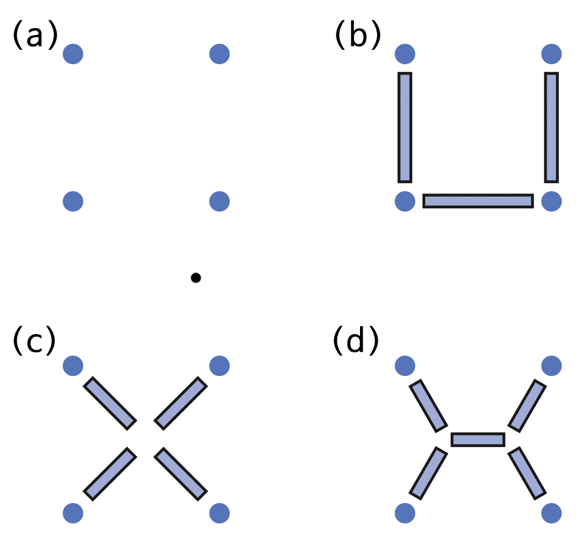
-
(a)에서 보여진 것처럼 학생들이 사각형 모양으로 점을 네개 사용한다. 야외로 나가서 가로 1미터, 세로 1미터 정사각형 모양으로 각 그룹마다 잔디위에 못을 네개를 박는다.
-
학생들이 줄 혹은 고무줄로 못을 연결하는 실험을 하게 한다. 요구한 전체 길이가 최소가 되게 측정하고 기록한다. 이 단계에서 어떠한 스타이너점도 사용하지 말아야 한다. (이 단계에서 최소값은 (b)에서 처럼 정사각형의 세점을 연결해서 전체 길이가 3 미터가 된다.)
-
이제 하나의 스타이너점을 사용하여 학생들이 더 잘할 수 있는지 살펴본다. (가장 최적의 장소는 (c)로 정사각형의 중앙이다, 그러면 전체 길이는 2*sqrt(2)=2.83 미터가 된다.) 두개의 스타이너점을 사용해서 더 잘할 수 있다고 추천한다. (사실 (d)에서처럼 스타이너점을 두개 위치시켜서, 들어오는 도로사이에 각도를 120도로 구성하면, 전체 길이는 1+sqrt(3) = 2.73 미터가 된다.)
-
스타이너점 세개를 가지고 학생들이 더 잘할 수 있을까? (아니요— 점 두개가 최선이다. 더 많은 점을 사용해서 얻어지는 잇점은 없다.)
-
학생들과 왜 이런 문제가 어려운지 토론하자. (왜냐하면, 스타이너점을 어디에 놓아야 하는지 모르기 때문에 어렵고, 시도해 볼 수 있는 경우의 수가 많다.)
워크시트 활동: 스타이너 트리 예제 1
가능한 가장 짧은 얼음길로 드릴 사이트를 연결하는 방법을 찾아라.

워크시트 활동: 스타이너 트리 예제 2
가능한 가장 짧은 얼음길로 드릴 사이트를 연결하는 방법을 찾아라.

변형과 확장

-
앞서 원래 활동을 끝마친 그룹에게 흥미로운 실험은 가로 2미터, 세로 1미터 직사각형을 가지고 노는 것이다. 학생들은 스타이너점을 하나 추가하면 더 악화되고, 스타이너점을 두개 추가하면 향상된 해결책이 되는 것을 알게될 것이다. ((b)에 경우 4미터다, (c)의 경우 2*sqrt(5)=4.47미터, (d)의 경우 2+sqrt(3)=3.73 미터가 된다.) 스타이너점을 하나 두는 배치조합이 정사각형일 때보다 직사각형일 때 나빠지는 이유를 학생들이 파악할 수 있는지 살펴보라. (정사각형이 직사각형으로 늘어날 때, (b)와 (d)는 늘어나는 양이 한번만 추가되는 반면에 (c)의 경우에는 양쪽 대각선에 증가하게 된다.)
-
고학년 학생은 좀더 큰 문제를 다룰 수 있다. 장소를 얼음길로 연결하는 배치도 두개가 워크쉬트에 있다. 새로운 워크시트 사본, 혹은, 워크쉬트 위에 투명 슬라이드를 놓고 지울 수 있는 펜을 사용해서 다른 해결방안을 실험할 수도 있다. 다른 방식으로는, 야외 운동장에서 지도 표식을 따라 못을 박아 진행할 수도 있다. 새로운 최단 거리 기록을 세웠을 때 학생들이 학습에 알리도록 한다. (다음 첫번째 그림은 첫번째 예제에 대한 최단 거리 해결책을 보여주고, 두번째 예제에 대한 전체 거리가 거의 비슷한, 두가지 가능한 최단 거리 해결책을 보여준다.) 두개의 거이 비슷한 해결책이 있다는 사실이 역설적으로 왜 이런 유형의 문제가 그렇게 어려운지 반증한다— 스타이너점을 놓을 수 있는 선택지가 너무나도 많다!
 첫번째 예제에 대한 최소 스타이너 트리
첫번째 예제에 대한 최소 스타이너 트리
 두번째 예제에 대한 두가지 가능한 스타이너 트리
두번째 예제에 대한 두가지 가능한 스타이너 트리
- 다음과 같은 사다리 네트워크는 문제를 확장하는 또다른 방식을 제공한다.

사다리 네트워크에 대한 최소 스타이너 트리가 몇개 다음에 있다. 가로대가 2개인 사다리는 정사각형과 동일하다. 하지만, 가로대가 3개인 사다리에 대해서, 해답이 상당히 다르다— 기억에서 다시 이끌어낼 수 있다면, 발견해내듯이. 가로대가 4개인 사다리의 해답은 가로대가 2개인 사다리 2개를 서로 연결한 것같다. 반면에 가로대가 5개인 사다리의 경우에는 사로대가 3개인 사다리를 좀더 확장한 것같다. 일반적으로, 사다리에 대한 최소 스타이너트리는 사다리의 가로대의 단수가 짝수냐 홀수냐에 달려있다. 만약 짝수라면, 가로대가 2단인 사다리 몇개가 서로 연결된 것처럼 보인다. 그렇지 않다면, 가로대가 3개인 사다리의 반복처럼 보인다. 하지만 엄격하게 증명하는 것은 쉽지 않다.

- 또다른 흥미로운 활동은 스타이너트리 비눗방울 모델을 구축하는 것이다. 다음에 보여주듯이, 두장의 투명한 플라스틱 판 사이에 장소를 나타내는 핀을 끼워넣는다. 비눗물 용액에 전체 구조물을 담군다. 비눗물에서 빼내게 되면, 아름다운 스타이너 네트워크로 핀이 연결된 비누막을 발견하게 된다. 하지만, 불행하게도 반듯이 최소 스타이터 트리가 되는 것은 아니다. 비누막이 전체 길이를 최소화하는 배치조합을 찾아내지만, 찾아진 배치조합은 단지 지역 최소(local minimum)이지, 전역 최소(global minimum)는 아니다. 좀더 전체 길이를 적게 하려고 전혀 다르게 스타이너점을 배치하게 될 수도 있다. 예를 들어, 처음으로 비눗물 용액에 담궈 빼냈을 때, 첫번째 비누막 배치조합을 확장활동에 나와있는 것처럼 상상할수도 있고, 두번째 비눗물 용액에 담궈 빼냈을 때 또다른 비누막 배치조합을 상상할 수도 있다. 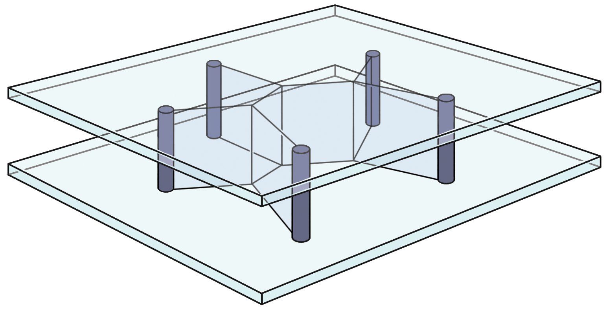
컴퓨터 과학 핵심 개념
지금까지 다뤄온 네트워크는 최소 스타이너 트리(minimal Steiner trees)다. 트리(tree)라고 불리는 이유는 순환(cycle)이 없기 때문이다. 마치 실제 나무 가지는 분기되면서 자라지만 합쳐지거나, 합쳐진 것이 다시 함께 자라 뻗어나가고 하지 않는다. "스타이너(steiner)" 트리라고 불리는 이유는 새로운 지점(스타이너점)이 나무가 연결할 원래 지점에 추가되기 때문이다. "최소"라고 불리는 이유는 모든 지점을 연결하는 최소 네트워크를 갖기 때문이다. 진흙도시(활동 9)에서 전체 길이가 최소가 되도록 지점을 연결하는 네트워크가 최소생성나무라고 학습했다. 스타이너 트리는 다른 것은 동일하고 새로운 점이 추가된다는 것만 차이점이 된다.
활동 14에서 최소생성나무(minimal spanning tree)를 찾아내는 매우 효율적인 알고리즘—욕심쟁이 알고리즘으로 두개의 가장 가깝지만 아직 연결되지 않은 점을 반복적으로 연결해 나감—이 존재하지만, 최소 스타이너 트리 문제에는 일반적으로 효율적인 해답이 없다는게 흥미롭니다. 스타이너 트리는 좀더 어려운데 이유는 어디에 추가 지점을 추가할지 결정해야 하기 때문이다. 사실 다소 놀라운 점은 스타이너 트리 문제에서 가장 어려운 부분이 스타이너점이 위치할 정확한 장소를 결정하기 보다, 대략 어느 지점에 스타이너점을 위치할 것인가 이것이 관건이다. 예를 들어, 두번째 사례에서 두가지 해답 사이의 차이가 된다. 새로운 점을 어디에 찍을 것인가를 알게된다면, 최적 지점을 찾으려고 미세 조정하는 것은 상대적으로 단순하다. 비누막 사례는 매우 효과적으로 작업을 수행하고, 컴퓨터도 마찬가지로 그렇게 할 수 있다.
최소 스타이너 트리를 찾아내는 것이 전화 통신 산업에서 큰 비용절감과 연관된 이야기의 일부분이다. 1967년 이전, 미국 기업고객이 매우 큰 사설 전화 네트워크를 운영했을 때, 전화 회사에서 회선을 임대했다. 비용이 청구되는 금액은 얼마나 회선이 사용되었냐에 따라 과금이 결정되는 것이 아니라 최소 네트워크 기준으로 과금이 결정되었다. 전화 회사가 로터리 루트를 사용하기 때문에 고객은 추가 비용을 지불하지 말아야 하는 것이 이유다. 원래, 얼마를 청구금액을 계산하는 알고리즘은 최소신장트리를 결정하고 산출하었다. 하지만, 1967년경 주요 허브 3개를 소유한 항공기 회사 고객이 주목한 점이 하나 있다. 만약 중간 지점에 네번째 허브가 있다면, 전체 네트워크 길이를 줄일 수 있다는 점이다. 어쩔 수 없이 스타이너점을 전화 교환지점에 놓는다면, 길이가 짧아져서 전화 회사가 청구금액을 낮춰야 했다. 특정 배치조합에서 최소 스타이너 트리가 5% 혹은 10% 정도 최소신장나무보다 짧을 수 있지만, 금액이 매우 큰 경우 유의미한 절감금액이 된다. 스타이너 트리 문제는 종종 최단 네트워크 문제(shortest network problem)라고 불리는데 이유는 지점을 연결하는 최단 네트워크를 찾아내는 것과 관련되기 때문이다.
앞선 두가지 활동 (지도 제작자 퍼즐과 관광 마을)을 다뤄보셨다면, 최소 스타이너 트리 문제가 NP-완전 이라는 말이 놀랍지 않을 것이다. 장소 개수가 증가함에 따라, 스타이너점을 찍을 잠재 위치 개수도 증가한다. 따라서 모든 가능한 조합을 찾아보는 것은 기하급수적으로 늘어나게 된다. 이것이 수천개의 문제 중의 또다른 하나고, 지수시간 검색이 가장 최선인지, 혹은 아직 찾지 못한 다항시간 알고리즘이 존재하는지 알려져 있지 않다. 하지만, 알려진 것은 다음과 같다. 만약 이 문제에 지수시간 알고리즘이 발견된다면, 그래프 채색과 최소 지배 집합을 찾는데 다항시간 알고리즘으로 변환할 수 있다는 것이다. 그리고, NP-완전에 속하는 모든 다른 문제도 또한 포함된다.
앞선 활동 말미에 NP-완전(NP-complete)의 "NP"는 "non-deterministic polynomial"의 약자고 "완전(complete)"는 만약 다항시간 알고리즘이 NP-완전 문제 중 하나에서 발견된다면, 다른 모든 문제에 변환해서 다항시간 알고리즘으로 적용할 수 있다는 것이다. 다항시간에 해결될 수 있는 문제 집합을 P 라고 부른다. 그래서, 핵심적인 질문은 NP-완전 문제에 다항시간 알고리즘이 존재하는냐?—다른 말로, P=NP?. 이 문제에 대한 정답은 알려져 있지 않고, 현대 컴퓨터 과학의 가장 큰 미스터리 중의 하나로 남아 있다.
다항시간 알고리즘이 존재하는 문제— 설사 알고리즘이 매우 느릴지라도—는 다룰 수 있다("trackable")고 한다. 그렇지 못한 문제는 다룰 수 없다("intractable")고 한다. 왜냐하면, 컴퓨터가 얼마나 빠르든지 관계없이, 얼마나 많은 컴퓨터를 동원하든지 관계없이, 문제의 크기가 조금만 커져도 실무에서 해결할 수 없다는 것을 의미하기 때문이다. 지도 제작자 퍼즐, 관광 마을, 얼음길을 포함한 NP-완전 문제가 다룰 수 있는지 없는지 알려져 있지 않다. 하지만, 대부분의 컴퓨터 과학자는 NP-완전 문제에 다항-시간 알고리즘이 발견될 것이라는데 회의적이다. 그래서 문제가 NP-완전이라고 증명하는 것이 문제가 태생적으로 다룰 수 없는 문제라는 강한 증거로 간주된다.

효유적인 알고리즘을 찾을 수 없을 때 무엇을 해야 할까요: 세가지 가능한 방법
직장 상사가 최적 솔류션을 가진 효율적인 알고리즘을 고안해 내라고 합니다. 하지만 효율적인 알고리즘을 찾을 수 없다면 여러줌은 무엇을 하실건가요? 스타이점을 도입해서 항공회사가 네트워크 비용을 절약한 사실이 있듯이 분명 그럴 수 있습니다. 만약 최적 솔류션을 도출하는 효율적인 알고리즘이 없다는 것을 증명할 수 있다면, 매우 좋을 것이다. 하지만, 컴퓨터과학에서 이와 같은 부정적인 결과를 증명하는 것은 매우 어렵다. 그리고 누가 알겠는가 좀더 똑똑한 프로그래머가 장래에 나와서 문제를 해결하는 아무도 생각하지 못한 기법을 생각해낼지 말이다. 그래서 불행하게도 어떤 효율적인 알고리즘도 가능하지 않다고 말할 수 있는 범주에 있을 것 같지는 않다. 사실 문제는 다룰 수 없는 것이 맞다. 하지만, 만약 다루는 문제가 NP-완전이라는 것을 보일 수만 있다면, 사실 연구소에서 수천명의 연구원들이 여러줌의 것에 상응하는 다른 문제를 풀기 위해서 작업중이고, 효과적인 해결책을 찾아내는데 실패했다. 이런 사실이 여러분에게 보너스가 되지는 않는다. 하지만, 여러분을 곤경에서 풀어줄 것이다. 물론, 실생활에서 여전히 이들 문제에 대한 답을 찾을 필요는 있다. 이런 경우 사람들은 보통 휴리스틱(heuristics)으로 관심을 돌린다. 휴리스틱 알고리즘은 최적해를 보장하지는 않지만, 최적해와 비교하여 약간 차이가 있는 해결책을 제시한다. 휴리스틱 알고리즘은 매우 빠르고, 최적해를 찾지 못하는데 드는 낭비가 매우 적다. 그래서 실무에서 적용하여 사용하는데 충분하다. 좀더 나은 시간표와 좀더 나은 네트워크나 도로 건설 배치가 있다는 것을 알게되면 약간 실망스러울 뿐이다.
추가 읽기
만화는 Garey와 Johnson이 저술한 고전 "Computers and Intractability"에서 가져왔다.
1984년 6월 과학 아메리카 "Computer recreations" 칼럼에 비눗방울을 사용하여 스타이너 트리를 어떻게 만드는지에 대한 간략한 기술이 있다. 정렬을 위한 스파게티 컴퓨터, 그래프에서 최단 경로를 찾는 고양이 요람, 소수인지 알려주는 빛과 거울 장치도 함께 실려있다. Dewdney가 저술한 Turing Omnibus 책에도 아날로그 컴퓨터에 관한 별도 장으로 실려있다.
제 5 부 (Part V)
비밀 공유와 범죄와 전쟁 — 암호화(Cryptography)
- 비밀 공유 — 정보 은닉 프로토콜(Information hiding protocols)
- 페루 동전 던지기 — 암호화 프로토콜(Cryptographic protocols)
- 키드 크립토 — 공개키 암호화(Public-key encryption)
비밀 공유와 범죄와 전쟁
메시지를 교환하려고 암호 코드 혹은 눈에 보이지 않는 글을 작성하는 마술을 사용하는 스파이나 비밀요원을 들어봤을 것이다. 비밀 코드를 작성하고 해독하는 기술로서 암호학(cryptography)이라는 주제가 시작한 방식이 된다. 제2차 세계대전에서 영국은 특별한 용도로 암호를 해독하는 전자기계를 만들어서 군사 암호를 해독하는데 사용했다. 그리고 나서 컴퓨터가 나왔고, 모든 것을 바꿨으며, 암호학은 새로운 시대로 들어섰다. 과거에 상상할 수 없는 엄청난 계산량을 사용해서 코드를 해독하는데 투여됐다.
사람들이 컴퓨터를 서로 공유하기 시작했을 때, 비밀 암호에 대한 새로운 용도가 있었다. 컴퓨터가 네트워크에 연결되었을 때, 정보에 접속하려는 사람으로부터 정보를 보호하려는 새로운 이유가 있었다. 전자우편이 전달되었을 때, 전자우편을 서명해서 보낸 사람이 정말 글을 써 보낸 사람이 맞는 확실히 하는 것이 중요하게 되었다. 이제는 사람들이 컴퓨터를 사용해서 물건을 팔고 사고하기 때문에, 주문하고 컴퓨터 네트워크로 지불하는 안전한 방법이 필요하게 되었다. 컴퓨터 시스템을 공격하는 점증하는 테러리스트 위협으로부터 컴퓨터 보안을 확보하는 것이 더욱 중요해졌다.
암화화하면 아마도 비밀번호를 컴퓨터에 저장하고 메시지 내부 문자를 마구 뒤섞어서 해커나 적이 읽을 수 없게 하는 것을 머리속에 그릴 것이다. 하지만 현실은 매우 다르다. 현대 컴퓨터 시스템은 비밀번호를 서버에 저장하지 않는다. 왜냐하면, 만약 저장했다가, 누군가 시스템 서버에 접근해서 모든 보안장벽을 뚫어버릴 수 있기 때문이다. 이러한 경우 해킹결과는 거의 재앙수준이 된다: 위조된 은행계좌로 송금하거나, 다른 누군가를 가정해서 메시지를 전송하거나, 누군가의 비밀 파일을 열어보거나, 군대에게 명령을 내리거나, 정부기능을 마비시킬 수도 있다. 근래는 활동 14에서 언급한 일방향 함수(one-way function)를 사용해서 비밀번호를 다룬다. 그리고 암호화는 단순히 메시지 문자를 뒤섞는 순준이 아니다: 4부에서 소개한 "다루기 힘든(intractable)" 것과 같이 정말 매우 어려운 문제가 포함된 기법을 실무에 적용한다.
암호화 기법을 사용해서, 여러분이 생각하기에 불가능하다고 여기는 것들을 수행할 것이다. 이번 장에서, 나이가 몇살이지 묻지 않고, 그룹에 있는 사람들의 평균 나이를 계산하는 간단한 방법을 찾아낼 것이다. 서로 신뢰하지 않는 두 사람이 동전을 던져서 결과에 동의하는 방법도 알아낼 것이다. 두 사람은 사실 다른 도시에 살고 있으며, 둘다 동전 던지는 것도 볼 수도 없다. 마지막으로, 모든 사람이 암호해독하는 방법은 알고 있지만, 단지 한사람만이 해독할 수 있도록 비밀 메시지를 암호화하는 방법도 찾아낼 것이다.
선생님에게
이번 활동들은 실습을 통해서 현대 암호기법을 학습하는데, 사람들 대부분이 비밀성과 컴퓨터에 대해 추측하는 것과는 매우 다르다.
두개의 핵심 아이디어가 있다. 첫번째는 프로토콜(protocol) 개념으로, 격식을 차린 처리 규약이다. 프로토콜하면 외교, 에티켓을 떠올릴 수 있지만, 컴퓨터도 마찬가지로 프로토콜을 사용한다. 놀랍도록 단순한 프로토콜을 사용해서 겉으로 보면 어려운 작업을 수행한다. 몇분정도 소요되는 활동 16을 통해서 한 그룹의 사람들이 협업을 통해서 그룹의 평균 연령(혹은 수입)을 쉽게 계산할 수 있는데, 사람들마다 나이(혹은 수입)를 파악할 필요가 없다. 컴퓨터를 통해서 다른 사람과 상호작용할 때, 컴퓨터적 복잡성(computational complexity)—난해성(intractability)—이 두번째 핵심 아이디어 역할을 한다. 활동 17을 통해서, 반듯이 서로 신뢰하지 않는 사람 둘이서 어떻게 동전 던지기 결과에 합의과정을 지켜보게 된다. 두 사람은 단지 전화선으로만 연결되어 있다. (이 활동을 통해서 작은 목소리로 부울 논리 회로와 다루는 법을 소개할 수도 있다.) 활동 18을 통해서, 학생들에게 컴퓨터 기법을 사용해서 메시지를 안전하게 암호화하는 방법을 시연한다. 하지만, 암호코드로 변환하는 방법은 공개된 정보다.
활동중 일부, 특히 마지막 활동은 매우 어렵다. 학생들에게 충분한 동기를 부여해서, 대부분의 사람들이 불가능하다고 생각하는 것을 수행하고, 결국 활동을 성공적으로 마무리할 것이라는 경이로운 느낌을 주입해야 한다. 이러한 경이로운 느낌을 생성하고, 의사소통하고, 나무를 보느냐고 전체 숲을 보지 못하면 안되기 때문에 종종 잠시 멈춰서 활동 전체 과정이 생동감있게 한다. 이 활동이 책에서 가장 도전적이며 기술적으로 난이도가 있다. 만약 학생들이 너무 어렵다고 판단된다면, 6부를 건너뛰어라. 6부는 완전히 다른 주제이고, 전혀 기술적이지 않다.
기술적 사고방식을 가진 분들에게
컴퓨터가 일상을 잠식하면서, 암호기법의 응용이 잠재적으로 다소 평향되어졌다. 대부분의 사람들은 현대 암호 프로토콜의 잠재적인 능력을 이해하지 못한다. 이것이 가져온 결과는 다음과 같다. 거대 기관—정부나 대기업—이 개인 정보가 포함된 시스템을 구축할 때, 정보가 다뤄지는 방법, 수집하려는 정보의 종류, 공개되는 정보, 공개정보 대상에 대한 주요한 결정은 테크노크라트(technocrat)가 결정하는 경향이 있다. 만약 현대 기술로 인해서 열려진 가능성에 대해서 좀더 잘 이해하게 된다면, 이런 의사결정과정이 있을 때 좀더 적극적으로 참여하게 되고, 사회는 다른 정보 인프라를 가지게 될 것이다.
정보 은닉 프로토콜, 암호 프로토콜, 공개키 암호화에 대한 학습 내용은 일반적으로 매우 고급과정으로 간주된다. 하지만, 아이디어 자체가 어려운 것은 아니다. 이해하기 어려운 것이 기술적인 부분이지, 근간을 이루는 개념은 아니다. 전자상거래와 관련된 실생활에서 기술적인 부분은 컴퓨터 소프트웨어 내부에 파묻혀있다. 컴퓨터 소프트웨어가 새로운 암호기법을 매우 사용하기 쉽게 만들었다. 하지만, 무슨 일이 진행되고 있는지에 대한 통찰하려면, 기저를 흐르는 아이디어를 이해하는 것도 중요하다.
암호 시스템은 정부에 매우 중요하다. 공식 커뮤니케이션을 안전하게 수행하기 위해서가 아니라, 마약밀매, 테러 같은 불법적인 활동과 연계된 사람들이 암호화된 커뮤니케이션을 사용할 수 있다는 우려 때문이다.만약 범죄관련된 사람들이 암호기법을 사용하게 되면, 암호를 해독하는 방법이 없다면 도청을 할 수 없다. 이러한 우려는 매우 큰 논란을 불러 일으켰다. 암호화 시스템을 제한하려는 법집행에 관심있는 사람들과 사적인 커뮤니케이션에 접근하는 정부를 지나친 간섭이라고 생각하는 시민 인권운동가 사이에 논란이 되고 있다. 한동안 미국정보는 암호관련 기술을 폭탄이나 총같은 군수품으로 간주해서 사용을 엄격히 제한했다. 즉, 올바른 정보와 기술적 능력을 만족시키는 경우에만 보안 커뮤니케이션 시스템을 구축할 수 있다. 하지만, 범죄자의 수중에 들어가면 위험하기는 마찬가지다. 클리퍼 칩(Clipper Chip)에 대한 광범위한 논쟁이 있었다. 참고로, 클러퍼 칩은 암호키 위탁(key escrow)으로 불리는 추가 비밀번호를 가진 시스템으로, 정부관계자가 칩으로 암호화된 어떤 메시지도 해독할 수 있다. FBI와 미 법무부는 이 칩을 커뮤티케이션에 광범위하게 사용하길 기대하지만, 개인정보에 대한 위협때문에 상당한 반대를 불러 일으켰다. 기술적으로 모든 종류의 보안 시스템은 가능하지만, 정치적으로 반듯이 수용될 수는 없다!
암호 아이디어는 메시지를 비밀스럽게 보관하는 것 외에 응용사례가 많다. 예를 들어, 메시지를 보냈다고 말하는 사람이 보낸 메시지가 맞는지 검증하는 것— 인증(authentication)이고, 이것이 없으면, 전자상거래는 불가능하다. 컴퓨터를 사용해서 투표하는 방식도 있다. 어떤 사람이 누구에게 표를 던지는지를 알지 못하게 해야하고, 심지어 컴퓨터 시스템을 운영하는 사람도 포함된다. 그리고 한번이상 투표를 하지 못하게도 만들어야 한다. 전화선을 통해서 카드게임을 할 수도 있다— 사업거래를 성사하는 것이 카드게임(포커)과 매우 유사하다는 것을 깨달을 때까지 바보스럽게 들릴지 모른다.
다음 일들은 불가능하게 보인다. 전화선 위로 카드를 어떻게 섞을 것인가? 만약 반대쪽의 상대방과는 경쟁을 하고 있고 신뢰를 할 수 없다면 말이다. 메시지를 가로채고, 변경하고, 원본으로 가장해서 전달하는 사람을 어떻게 잡아낼 것인가? 하지만, 만약 이러한 것을 할 수 없다면, 전자적으로 사업을 수행할 수 없다. 여러분이 매장 단말기와 은행 사이에 통신선을 가로채서 은행계좌에서 불법인출하려고 인증을 위조하려는 기술적 사고방식을 가진 범죄자를 막아야 한다. 거짓 주문 혹은 허위 계약을 만들어 내서 사업 경쟁자가 막대한 손실을 초래하는 것도 막아야 한다. 현대 암호기법으로 기적을 만들 수 있고 다음 활동이 방법을 보여준다.
암호와 암호해독에 관한 흥미로운 책이 많다. Hinsley와 Stripp이 편집한 Codebreakers: the inside story of Bletchley Park 책은 세계 2차 대전에서 첫 컴퓨터가 암호를 해독하는데 어떻게 사용되었고, 전쟁을 엄청나게 짧게 만들어 정말 많은 생명을 구했는지에 대한 첫번째 목격자 증언이 나와있다.
비밀 공유 — 정보 은닉 프로토콜(Information hiding protocols)
개요
암호 기법은 다른 사람과 정보를 공유하게 하지만, 놀랍도록 높은 개인정보 보호 수준을 유지한다. 이번 활동은 정보고 공유되지만, 어떤 정보도 누출되지 않는 상황을 시연한다: 그룹의 학생들이 평균 연령을 계산하는데 누구도 다른 사람에게 나이가 얼마인지 말하지 않고도 가능하다.
교과학습 연계
- 수학 — 총계와 평균
기술
- 평균 계산.
- 난수.
- 협업 작업.
나이
- 7세 이상
학습 교재
- 각 그룹 아이마다 필요한 것: – 작은 종이 패드. – 펜.
비밀 공유(Information hiding protocols)

들어가며
이번 활동은 그룹의 학생들의 평균 연령을 찾아내는데 누구도 나이가 몇살인지 누설하면 안된다. 대안으로, 그룹에 있는 학생의 평균 수입(용돈)을 산출할 수도 있고, 혹은 비슷한 개인적인 정보도 가능하다. 특히, 이러한 통계치를 계산하는 것이 어른들에게 적합하다. 왜냐하면, 어른들이 좀더 나이, 수입 같은 정보에 민감하기 때문이다.
그룹에 최소 학생이 세명 필요하다.

토론
-
그룹 학생들에게 어느 누구도 다른 사람에게 자신의 나이를 말하지 않고 그룹 평균나이를 계산하는 활동을 진행한다고 설명한다.
-
함께 활동을 진행할 학생 6명에서 10명을 선정한다. 첫번째 학생에게 작은 종이패드와 펜을 나눠준다. 종이 위에 3자리 난수를 하나 골라 비밀스럽게 적게한다. 예제에서는 613이 난수로 선정됐다.
-
첫번째 학생에게 종이패드 첫짱을 떼어내고, 본인 나이를 난수에 더하게 한다. 그리고 종이패드 두번째 종이에 적는다. 첫번째 학생의 나이는 8세다. 그래서 두번째 종이는 621(613+8)이 된다. 떼어낸 종이를 잘 보관한다. (누구에게도 보여주지 않다.)
-
종이패드를 두번째 학생에게 전달한다. 본인 나이를 숫자에 더하고, 종이를 떼어내고, 다음 페이지에 총합을 적는다. 이번 예제에서, 두번째 학생의 나이는 10세다.
-
학생이 종이를 떼어내고 나이를 숫자에 더하는 과정을 계속해서, 모든 학생이 종이패드를 가질 때까지 계속한다.
-
종이패드를 첫번째 학생에게 돌려준다. 패드에 적힌 숫자에서 최초 난수를 학생이 뺀다. 이번 예제에서, 종이패드는 학생 5명에게 돌려줬고, 657이 최종 숫자고, 613이 최초 난수이며, 빼기를 하면 44가된다. 이 숫자가 모든 학생의 나이 총합이 되고, 평균은 총합을 학생수로 나누게 되면, 이 그룹 학생의 평균나이는 8.8세가 된다.
-
모든 학생이 종이패드를 파기하고, 두 학생이 공모하지 않는다면, 누구도 개인 나이를 계산할 수 없다는 점을 학생들에게 지적한다.
변형과 확장
이 시스템을 변형해서 비밀투표를 할 수 있다. 만약 찬성이면 1, 반대면 0으로 코딩하고 각 사람이 규칙에 따라 더하기 한다. 투표는 형평성을 잃게 되는데, 만약 어떤 사람이 1보다 큰 수(0보다 작은 수)를 더하게 되면, 모든 사람이 찬성을 던졌다고 가정하면 찬성 투표수가 사람 수보다 많게 되기 때문에 의혹을 불러 일으킬 위험이 있다.
컴퓨터 과학 핵심 개념
컴퓨터에는 많은 개인정보가 저장된다: 은행 잔고, 소셜 네트워크, 체납된 세금, 운전면허증 보유기간, 신용정보 이력, 시험 성적표, 의료기록 등. 개인정보는 매우 중요하다! 하지만, 다른 사람과 개인정보 정보 일부를 공유할 필요가 있다. 예를 들어, 은행 직불카드를 사용해서 매점에서 물건값을 계산할 때, 매점에서는 계좌잔고가 충분한지 검증할 필요가 있다는 것을 인식하고 있다.
종종 정말 필요한 것보다 더 많은 정보를 제공한다. 예를 들어, 상점에서 전자상거래를 한다면, 고객이 어느 은행과 거래하며, 계좌번호는 무엇이고, 이름이 무엇인지 상점에서 파악하게 된다. 조금더 나아가, 은행은 고객이 쇼핑하는 장소도 파악한다. 은행은 고객 프로파일을 만들어서, 주유는 어디서 하고, 식료품을 어디서 구입하며, 매번 쇼핑할 때 쇼핑항목별로 얼마를 지불하며, 언제 방문을 했는지도 파악하고 있다. 만약 현금으로 지불한다면, 어떤 정보도 알려지지 않는다. 대부분의 사람들은 공유되는 정보에 대해서 별로 걱정을 하지 않는다. 하지만, 잠재적인 오용 가능성은 충분한다: 타겟 마케팅 (예를 들어, 항공권 구입에 돈을 많이 쓰는 사람에게 여행광고 제공), 차별(은행이 부자 고객에게 고급 서비스를 제공), 심지어 협박(부적절한 거래를 폭로하겠다고 협박). 그밖의 다른 경우라면, 만약 누군가 여러분을 모니터링하고 있다고 생각한다면, 쇼핑하는 방식을 바꿀 수도 있다.
개인정보의 손실은 꽤 널리 받아들여진다. 하지만, 암호화 프로토콜이 존재해서 현금으로 거래하는 것과 같은 수준으로 개인정보 보호를 전자금융거래에서 가능하게 한다. 은행계좌에서 상점계좌로 돈이 이체되는데 어느 누구도 돈의 출처와 입금된 곳을 알지 못한다는 것을 믿기는 힘들다. 이번 활동은 그런 금융거래가 좀더 그럴듯하게 보이게 기획되었다: 양쪽 상황 모두 제한된 정보 공유만 포함하고, 좀더 똑똑한 프로토콜로 가능하게 만들었다.
추가 읽기
David Chaum이 저술한 도발적인 제목을 가진 Security without identification: transaction systems to make Big Brother obsolete. 논문이 이러한 이슈를 부각했다. 논문은 꽤 읽을만하고, "전자 캐쉬(electronic cash)"를 사용해서 완전히 개인정보가 보호되는 거래를 구현하는 방법을 포함하여 정보은닉 프로토콜 몇가지도 소개한다. 논문은 Communications of the ACM, October 1985에 실려있다.
페루 동전 던지기 — 암화화 프로토콜 (Cryptographic protocols)
개요
이번 활동은 간단하지만, 그럼에도 불구하고 거의 불가능해 보이는 작업을 성취하는 방법을 보여준다— 통신선으로 연결되어, 서로를 반듯이 신뢰하지 않는 두 사람 사이에서 동전을 던져 무작위로 공정한 결정을 하는 방법.
교과학습 연계
- 수학 — 논리적 추론
- 수학 — 불 논리(Boolean Logic)
기술
- 불 논리
- 함수
- 퍼즐 풀기
나이
- 9세 이상
학습 교재
- 각 그룹 아이마다 필요한 것: – 재현할 수 있는 워크쉬트 사본 페루 동전 던지기 – 서로 다른 두가지 색깔로 된 두 묶음 열두개 단추 혹은 게임용 패.
페루 동전 던지기 (Cryptographic protocols)
|
|
|
|
|
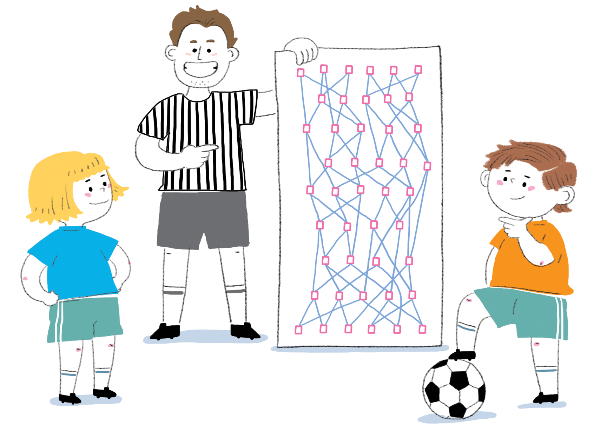
이진수 표현(활동 1, 점을 세다), 패러티 개념(활동 4, 카드 뒤집기 마술)을 배우고, 활동 14 관광 마을에 일방향 함수 사례를 봤다면, 학생들이 이번활동을 통해서 좀더 많은 것을 얻어갈 것이다.
들어가며
이번 활동은 저작자 중의 한명이 페루에 있는 학생과 함께 작업할 때 최초로 고안되었다. (본 활동 제목 이름이 유래된 연유) 지역적인 상황에 맞추어 스토리를 각색할 수 있다.
결승전을 치를 홈구장을 어디로 할지 페루 리마(Lima)와 쿠스코(Cuzco) 축구팀이 결정해야 한다. 가장 단순한 방법은 동전 던지기다. 하지만 두 도시가 너무 떨어져 있다. 그리고, 리마팀을 대표하는 알리시아(Alicia)와 쿠스코팀을 대표하는 베니토(Benito)는 동전 던지러 함께 모일 시간과 예산이 없다. 통신선을 통해서 동전 던지기를 할 수 있을까? 알리시아가 동전을 던지고, 베니토가 동전 앞면 혹은 뒷면을 맞춘다. 하지만, 이 방식은 문제가 있다. 만약 베니토가 앞면하면, 알리시아는 간단하게 "미안해 친구, 뒷면이야"라고 하면 끝이다. 알리시아가 원래 부정직하지는 않지만, 매우 중요한 경기이고, 유혹을 참을 수는 없을 것이다. 설사 알리시아가 진실된다고 하더라도, 베니토가 불리한 상황이면 동전던지기 결과를 믿을 수 있을까?
이것이 두 사람이 결정해야 되는 사항이다. 공동으로 작업해서, 다음에 설명되는 and-게이트와 or-게이트로 구성된 회로를 설계한다. 실무에서 조금 지루한 것이 될 수 있지만, 원칙적으로 통신선을 통해 설계를 수행해야 한다. (전자우편도 또한 가능하다.) 구축 과정에서, 두 사람 모두 회로가 충분한 복잡성을 지녀서 상대방이 속일수 없도록 확실히 하는데 관심이 있다. 최종 회로는 공공 지식이 된다.
토론
and-게이트와 or-게이트 규칙은 단순하다. 게이트(gate) 각각은 두개 입력과 한개 출력으로 구성된다. 각 입력은 0 혹은 1 이 될 수 있고, 거짓(false)과 참(true)으로 각각 해석된다. 만약 두 입력이 모두 1 (참)이면, and-게이트 출력은 1 (참), 그렇지 않으면 0 (거짓)이 된다. 예를 들어, and-게이트에 입력으로 1과 0이 주어지면, 출력은 0이 된다. 만약 입력값 중 하나 혹은 둘 모두 1(참) 이면, or-게이트의 출력은 1(참)이 되고, 만약 입력이 모두 0 이면, 출력은 0(거짓)이 된다.
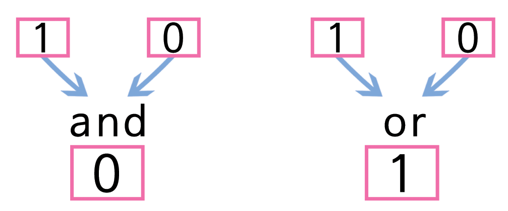 한 게이트의 출력은 또 다른 (혹은 다른 몇개) 게이트의 입력이 되어 좀더 복잡한 효과를 만들어 낸다. 예를 들어, 왼쪽 회로에서 두개 or-게이트 출력은 세번째 or-게이트 입력과 연결된다. 만약 입력 4개 중의 어느 것이라도 1 이면, 출력은 1 이 되는 효과가 있다. 오른쪽 회로에서 상단 두개 and-게이트 각각의 출력은 아래 두개의 게이트에 입력값이 된다. 그래서 전체 회로는 출력으로 두개 값이 있다.
 페루 동전 던지기에는 좀더 복잡한 회로가 필요하다. 워크쉬트 회로는 6개 입력과 6개 출력이 있다. 다음에 한 입력 집합에 대한 해답이 있다.
페루 동전 던지기에는 좀더 복잡한 회로가 필요하다. 워크쉬트 회로는 6개 입력과 6개 출력이 있다. 다음에 한 입력 집합에 대한 해답이 있다.
 통신선으로 회로를 동전 던지기에 사용하는 방식은 다음과 같다. 알리시아가 회로에 사용할 입력값으로 난수를 선택한다. 입력 난수는 6자리 이진수 (0 혹은 1)로 구성되어 있고, 비밀로 간직한다. 6자리 숫자를 회로에 넣어 베니토에게 6 비트 출력을 송부한다. 베니토가 출력값을 갖자 마자, 알리시아의 입력이 홀수인지 짝수인지 추축해야 한다— 다른 말로, 알리시아 입력값의 패리티(parity)를 추측해야 한다. 만약 회로가 충분히 복잡하다면, 베니토는 정답을 추론할 수 없을 것이다. 따라서 베니토의 추측은 무작위 선택이 된다. (사실, 베니토는 동전을 던져 선택할 수도 있다.) 베니토의 추측이 맞다면, 베니토가 이겨서 결승전은 쿠스코가 된다. 베니토의 추측이 맞지 않다면, 알리시아가 이겨서 결승전은 리마가 된다. 베니토가 알리시아에게 추측한 것을 말하면, 알리시아는 비밀 입력값을 공개한다. 그래서 베니코는 비밀 입력값이 주장하는 출력값이 되는지 검증한다.
통신선으로 회로를 동전 던지기에 사용하는 방식은 다음과 같다. 알리시아가 회로에 사용할 입력값으로 난수를 선택한다. 입력 난수는 6자리 이진수 (0 혹은 1)로 구성되어 있고, 비밀로 간직한다. 6자리 숫자를 회로에 넣어 베니토에게 6 비트 출력을 송부한다. 베니토가 출력값을 갖자 마자, 알리시아의 입력이 홀수인지 짝수인지 추축해야 한다— 다른 말로, 알리시아 입력값의 패리티(parity)를 추측해야 한다. 만약 회로가 충분히 복잡하다면, 베니토는 정답을 추론할 수 없을 것이다. 따라서 베니토의 추측은 무작위 선택이 된다. (사실, 베니토는 동전을 던져 선택할 수도 있다.) 베니토의 추측이 맞다면, 베니토가 이겨서 결승전은 쿠스코가 된다. 베니토의 추측이 맞지 않다면, 알리시아가 이겨서 결승전은 리마가 된다. 베니토가 알리시아에게 추측한 것을 말하면, 알리시아는 비밀 입력값을 공개한다. 그래서 베니코는 비밀 입력값이 주장하는 출력값이 되는지 검증한다.
-
학생을 작은 그룹으로 나누고, 각 그룹에게 회로와 게임패 몇개를 나눠주고 활동스토리를 설명한다. 아마도 학생들이 경쟁학교와 동전던지기를 통해서 스포츠 경기 시합을 준비한다고 상상하면, 학생들에게 좀더 의미가 있을 것이다. 게임패 색깔 규칙을 정해라— 빨간색 0, 파란색 1 등. 그리고 나서, 학생들이 기억하기 좋게 워크쉬트 상단에 주석으로 적어둔다.
-
알리시아가 고른 숫자를 보여주려고, 학생들에게 입력값으로 게임패를 어떻게 놓는지 보여준다. 그리고 나서 and-게이트와 or-게이트 규칙을 설명한다. 규칙은 워크쉬트 하단에 요약되어 있다. (학생들이 게임패에 색칠을 했다고 생각한다.)
-
해당 결과값을 도출하기 위해서, 회로를 통과하는 법, 노드에 게임패를 놓는 법을 보여준다. 정확하게 수행되어야 하고, 주의가 필요하다; (학생들에게 주면 않되는) 다음 표는 의문이 생기는 경우 참고용으로 각 입력값에 대한 출력값 정보를 담고 있다.
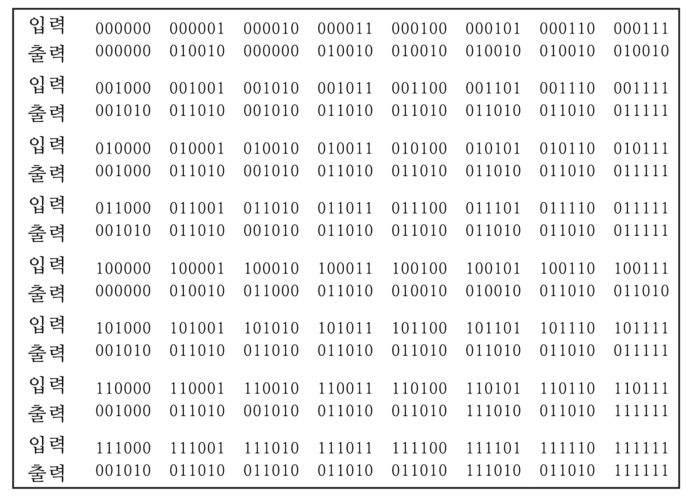 4. 이제 각 그룹에서 알리시아와 베니토 역할을 할 학생을 선발한다. 그룹을 반으로 나눠서 반쪽은 알리시아 그룹, 다른 반쪽은 베니토 그룹이 된다. 알리시아가 회로에 입력값으로 사용될 난수를 선택하고, 출력값을 계산하고, 베니토에게 말한다. 베니토는 입력값의 패리티를 추축한다. (짝수도 될 수 있고, 홀수도 될 수 있다.) 과정을 진행하면서 베니토의 추측값은 본질적으로 랜덤이라는 것이 명백하다. 알리시아가 모두에게 입력값이 무엇이었는지 말한다. 만약 알리시아가 올바른 패리티를 추측했다면 베니토가 이기게 된다. 알리시아가 회로에서 나온 올바른 출력값을 전달했는지 점검해서, 베니토는 알리시아가 선택한 입력값을 변경하지 않았는지 확인한다.
이 지점에서 동전던지기는 완료된다.
출력이 주어진 상태에서 베니토가 입력값을 알 수 있다면 속일 수 있다. 그래서 알리시아의 관심은 베니토가 속임수를 쓰지 못하도록 활동 14에서 토의한 회로 함수가 일방향(one-way)인지 확인하는 것이다. 일방향 함수는 만약 입력이 무엇인지 알고 있다면 출력을 계산하기는 쉬운 함수다. 하지만, 주어진 출력에 대해서 입력을 계산해 내는 것은 매우 어렵다.
만약 동일한 출력을 만들어 내는 상반대는 패러티 입력이 두개 있다면, 알리시아도 속일 수 있다. 베니토가 무슨 방식으로 추측을 하던지 관계없이, 알리시아는 입력값을 공개해서 베니토가 틀렸다는 것을 보여줄 수 있다. 따라서, 동일한 출력에 다른 여러 입력값이 매핑되지 않도록 확실히 하는 것이 베니토의 관심사가 된다.
- 알리시아 혹은 베니토가 속일 수 있는 방법을 학생들이 찾을 수 있는지 살펴보라. 표 첫번째 줄에 다른 입력 몇 개는 출력으로 010010을 만들어 낸다. 해당되는 입력값은 000001, 000011, 000101, … 된다. 따라서, 만약 알리시아가 출력을 010010 이라고 하면, 만약 베니토가 패리티가 짝수라고 추측한다면 입력으로 000001을 선택할 수 있고, 베니토가 홀수라고 추측한다면 000011로 입력을 정할 수 있다.
해당 회로를 가지고, 베니토가 속이기는 어렵다. 하지만, 만약 출력이 011000 이라면, 입력은 100010 이어야 한다— 다른 경우의 수는 없다(표로 바로 점검할 수 있다.) 그래서, 만약 알리시아가 가져온 숫자가 이 숫자라면, 베니토는 짝수 패리티로 추측할 수 있고 맞다는 것을 확인할 수 있다. 컴퓨터 시스템은 훨씬 더 많은 비트를 사용해서 경우의 수가 엄청 많다. (추가 비트는 경우의 수를 2대로 한다.)
- 각 그룹 학생들에게 자신만의 회로를 고안하게 한다. 알리시아가 속이기 쉬운 회로를 만들었느지, 베니토가 속이기 좋은 회로인지 살펴보자. 회로 입력이 반듯이 6개가 될 필요는 없다. 심지어 다른 입력, 출력 숫자도 가능하다.
워크시트 활동: 페루 동전 던지기

회로에 들어갈 입력값을 고르고, 출력이 무엇이 될지 풀어보라.
변형과 확장
- 실무에서 명백한 문제는 알리시아오 베니토 모두가 수긍할 수 있는 회로를 구축하는 협업하는 것이다. 학생들에게 이런 활동을 만드는 것은 재미가 있을지 모르지만, 실무에서는 동작하지 않는 절차로 될 수 있다— 특히, 통신선을 통해서는 더욱 그렇다. 하지만, 간단한 대안이 있는데 알리시아와 베니토가 독립적으로 회로를 구성하여 작성하고 공개하는 것이다. 그리고 나서, 알리시아가 비밀 입력을 양쪽 회로에 넣고, 상응하는 비트를 함께 비교해서 두 출력을 결합하고 난 뒤에, 만약 동일하면 1, 그렇지 않으면 0, 최종 출력값을 생성한다. 이러한 상황에서, 상대방이 속이지 않는다면, 참여자 누구도 속일 수 없다. 왜냐하면, 만약 회로 중 하나는 일방향 함수이고, 둘을 조합하면 또한 일방향 함수가 되기 때문이다.
다음 두 변형은 암호화 프로토콜 혹은 동전 던지기 문제에 관련되기 보다는 and 와 or 게이트로 구성되는 회로 아이디어와 관계있다. 컴퓨터 회로 뿐만 아니라 논리(logic)의 근본 개념을 탐색할 것이다. 이런 유형의 논리를 수학자 부울 (George Boole, 1815-64) 이름을 따서 부울 대수(Boolean algebra)라고 부른다.
- 모든 입력이 0 이면, 000000, 출력도 모두 0 이 되고, 마찬가지로, 모든 입력이 1 이면, 111111, 모든 출력도 1 이 된다. (이런 유형의 출력을 하는 다른 입력도 물론 있다; 예를 들어, 입력이 000010 인 회로는 출력이 모두 0 이고, 110111 은 경우는 모두 1 이다.) 회로가 and와 or 게이트로 구성된 결과다. not-게이트를 추가해서, 이런 특징을 갖지 않는 회로를 구성할 수 있다. not-게이트는 출력을 입력의 반대로 한다. (즉, 0 → 1 and 1 → 0)
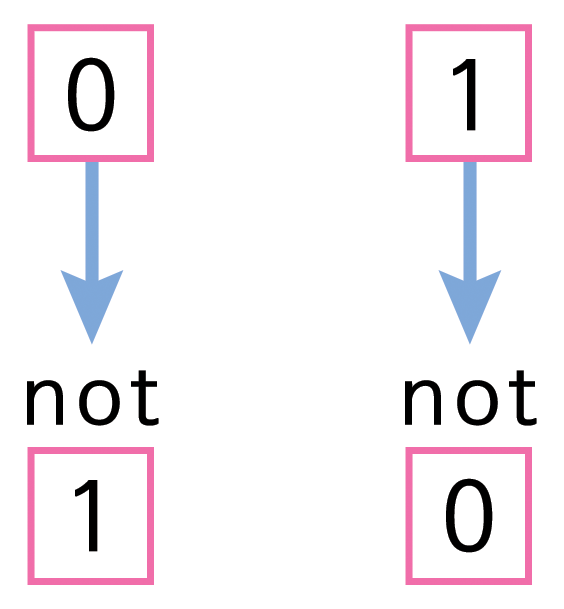
- 다른 유형의 두가지 게이트는 and-not-게이트와 or-not-게이트로 and와 or 게이트와 같지만 뒤에 not이 붙는다. (통상 줄여서 nand-게이트, nor-게이트로 각각 줄인다.) 그래서, a and-not b는 not(a and b)가 된다. 기능적으로 다른 회로와 차이점이 없다. 왜냐하면 해당 and-게이트, or-게이트 그리고 not으로 구션이 가능하기 때문이다. 하지만, 흥미로운 특성이 있는데 and-not-게이트로 다른 어떤 유형의 게이트도 만들 수 있고, or-not-게이트도 마찬가지다.
and-not-게이트와 or-not-게이트를 소개했으면, 학생들에게 도전과제로 임의의 게이트를 다른 게이트를 연결해서 구성할 수 있는지 알아보게 하라. 단지 한 유형의 게이트를 연결해서도 할 수 있는지 좀더 알아보게 하라. 다음 그림에서 기본 게이트 3개, not-게이트, and-게이트, or-게이트가 그림 상단에서 and-not-게이트로 구성되고, 그림 하단에서 or-not-게이트로 구성되는지 보여준다.
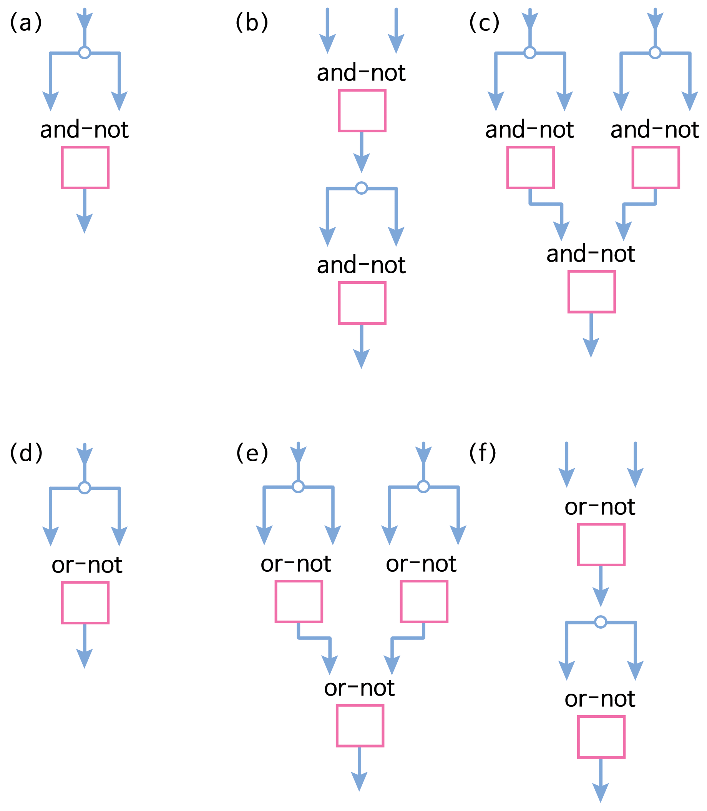
컴퓨터 과학 핵심 개념

최근에 컴퓨터 네트워크를 통한 전자상거래가 범람하고 있다. 따라서, 안전한 전자 이체, 보안 거래, 법적 구속력 있는 전자서명된 문서를 보장하는 것이 필수적이다. 암호화 분야는 안전하고 비공개 방식으로 커뮤니케이션하는 방법에 관한 것이다. 수십년 전에, 컴퓨터과학 연구원이 특정 정보를 공개하는 기법이 비밀성을 보장하는다는 다소 반직관적인 결과를 발견했다. 활동 18 키드 크립토(Kid Krypto)에서 다룰 공개키 암호시스템(public key cryptosystem)으로 정보를 교환하는데 주된 보안방식으로 널리 사용되고 있다. 예를 들어, 웹브라우져에 있는 SSL(Secure Socket Layer) 혹은 TLS(Transport Layer Security) 같은 설정이 있다; 웹브라우져가 은행같은 웹사이트에 보안 접속을 가능하게 하는 공개키 시스템이다. 누군가 송수신되는 모든 데이터를 도청할 수 있지만 보안에는 문제가 없다.
암호화는 안전하게 보관하는 것 뿐만 아니라, 다른 사람이 찾는 정보에 제한을 가하는 제어 기능과 지리적으로 멀리 떨어진 사람들 간에 신뢰를 구축하는 것도 포함된다. 암호화 거래에 대해서 공식 규칙, 즉 프로토콜(protocol)을 고안해서 위조 불가능한 전자 서명도 하고, 비밀번호를 직접 말하지 않고도 비밀정보(예를 들어, 패스워드)를 다른 사람에게 전달할 수 있게 한다. 동전던지기는 좀더 단순하지만, 처음 직면하면 불가능한 것처럼 보이지만, 유사한 문제다.
실제 상황에서, 알리시아와 베니토는 스스로 회로설계를 하지 않고 내부적으로 동작하는 컴퓨터 프로그램을 구입할 것이다. 아마도 누구도 컴퓨터 소프트웨어 내부에는 관심이 없을 것이다. 하지만, 컴퓨터 기술이 얼마나 좋은지에, 얼마나 노력을 열심히 하는데 관계없이, 둘다 의사결정 결과에 어느 쪽도 영향을 주지 못하게 확인하고 싶을 것이다.
원칙적으로, 중립적인 판사에게 분쟁을 주장해서 해결해야 한다. 판사는 회로, 알리시아의 원래 입력 이진수, 베니토에게 보낸 출력, 베니토가 답변으로 보낸 추측값을 입수한다. 정보 교환이 완료되면, 이 모든 것은 공개 정보가 된다. 따라서, 쌍방 모두 결과가 무엇인지에 대해서 합의해야 한다. 판사가 알리시아의 원래 입력 숫자를 회로에 얺고 출력값을 점검하고 의사결정이 공정했는지 결정한다. 말할 것도 없이, 규칙대로 수행되었는지 점검하는 명확한 절차가 있어서 분쟁이 일어날 것 같지 않다. 이 상황을 알리시아가 실제 동전을 던지고 베니토가 앞면 혹은 뒷면을 맞추는 상황과 비교하자— 어떤 판사도 이 사건을 수임하지 않을 것이다.
사례로 보여준 작은 회로는 실무에서 사용되지 않는데 이유는 표로 되어 있고, 속이기 쉽기 때문이다. 입력으로 32-비트 이진수를 사용하는 것이 더 나은 보호장치가 된다. 하지만, 이것 조차도 속이기 어렵다는 것을 보장하지는 않는다— 특정 회로에 달려있다. 활동 14 관광 마을에서 소개된 일방향 함수 같은 다른 방식이 사용될 수 있다. 실무에서 사용되는 방법은 큰 자연수를 인수분해하는 방법에 의존한다. (다음 활동 말미에 학습하게 되고, NP-완전하지는 않지만 매우 어려운 문제로 알려져 있다.) 한 숫자가 다른 숫자의 소인수인지 점검하는 것은 쉽지만, 매우 큰 숫자의 소인수를 찾아내는 것은 시간이 많이 걸린다. 알리시아와 베니토 (그리고 판사)가 손으로 작업하게 되면 매우 복잡하다. 실무에서 소프트웨어를 구매해서 작업한다.
전자서명도 비슷한 아이디어에 기반한다. 알리시아가 선택한 특정 보안 입력값으로 회로 출력값을 생성해서 공개함으로써, 효과적으로 그 출력값을 만든 사람이 본인임을 중명한다— 적절한 일방향 함수로 어느 누구도 입력값을 생성할 수 없다. 즉, 어느 누구도 알리시아처럼 가장할 수 없다. 실제 전자 서명을 생성하기 위해서, 좀더 복잡한 프로토콜이 필요한데, 알리시아가 특정 메시지에 서명하고 다른 사람도 알리시아 본인이 하지 않았다는 부인하지 못하도록 검증도 함께 한다. 하지만, 원리는 동일하다.
또 다른 응용사례는 통신선을 통해서 포커 게임을 하는 것이다. 카드를 돌리고 게임 참여자 양손에 든 패를 기록할 판사 같은 주심이 없는 상황이다. 모든 것이 게임 참여자 스스로 수행해야 하고, 분쟁이 있는 경우에 게임이 끝난 뒤에 판사에게 의지한다. 비슷한 상황이 진지한 계약협상에서도 일어난다. 분명하게도 참여자는 게임을 진행하는 동안에 카드 보안을 유지해야 한다. 하지만, 게임 참여자는 정직해야한다— 에이스패를 갖지 않았는데 에이스패를 가졌다고 주장하지 말아야 한다. 게임이 종료되길 기다리다, 각 게임 참여자가 다른 참여자가 가진 카드패와 게임 진행 상황을 점검하고 나서야 확인될 수 있다. 또다른 문제는 게임이 끝날 때까지 다른 게임참여자가 든 패를 비밀로 하고 카드를 돌리는 문제다. 놀랍게도, 동전 던지기와 다르지 않는 암호화 프로토콜을 사용해서 작업을 수행한다. 암호화 프로토콜은 전자 거래에서 매우 중요하다. 직불카드 소유자를 확인하고, 전자우편 발신자를 인증하고, 핸드폰 사용권한을 부여하는 등 다양하다. 이와 같은 활동을 신뢰성 있게 수행할 수 있는 능력이 전자 상거래 성공에 매우 중요하다.
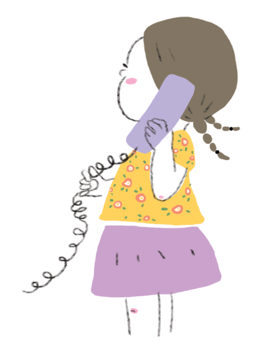
추가 읽기
Harel이 저술한 Algorithmics 책에는 디지털 서명과 연관된 암호 프로토콜을 논의한다. 또한 어떻게 전화로 포커 게임을 하는지도 보여준다. 전화로 포커게임을 하는 것은 1981년 D.A. Klarner가 편집한 The Mathematical Gardener 책에 "Mental poker" 장에서 처음 나온 생각이다. Dorothy Denning이 저술한 Cryptography and data security는 암호학에 대한 훌륭한 컴퓨터 과학 교과서다. Dewdney가 저술한 Turing Omnibus에는 불로직에 대한 별도 섹션에서 이번 활동에 회로로 사용된 구성요소를 논의한다.
키드 크립토(Kid Krypto) — 공개키 암호화(Public-key encryption)
개요
암호화는 정보 보안에 열쇠이다. 현대 암호화의 열쇠는 공개 정보만 사용하여 발시자가 메시지를 잠그고, 받는 수신자가 메시지를 (물론 개인적으로) 푸는 것이다.
마치 사람들이 맹꽁이자물쇠를 구매하고, 자물쇠 위에 이름을 적고, 다른 사람도 사용하는 동일한 탁자위에 올려 놓는 것과 같다. 물론 열쇠는 별도로 보관한다— 맹꽁이자물쇠는 클릭해서 잠그는 유형의 것이 된다. 만약 비밀 메시지를 내가 상대방에게 보내려고 한다면, 메시지를 상자에 담고, 맹꽁이자물쇠를 집어들고, 상자와 채결하여 참그고, 상대방에게 전송한다. 설사 잘못된 사람에게 전달되더라도, 그 누구도 풀 수 없다. 이 기법을 사용해서, 사전 통신으로 비밀 코드를 정렬할 필요는 없다.
이번 활동을 통해서 디지털로 어떻게 이러한 것이 가능한지 확인한다. 그리고 맹꽁이 자물쇠를 사용하는 대신에, 디지털 세상에서는 자물쇠를 복사하고, 사용하고, 탁자위에 원래 자물쇠를 놓는다. 만약 물리적인 맹꽁이 자물쇠 사본을 만들려고 하면, 분해해서 사본을 만들 수 있다. 분해해서 복제본을 만드는 과정을 통해서 불가피하게 동작하는 메커니즘을 파악하게 된다. 하지만, 디지털 세상에서는 열쇠를 찾지 못하게 하고서 자물쇠를 복사하게 할 수 있다.
불가능하게 들리나요? 읽어 보세요.
교과학습 연계
- 기술 — 공개키 암호화, 비밀 번호 (Secret codes)
기술
- 퍼즐 풀기
나이
- 11세 이상
학습 교재
- 학생은 4명이 한 조가 되는 그룹을 만든다. 각 그룹안에 두개의 소그룹을 만든다. 각 소그룹에 키드 크립토 지도 워크시트 사본지도 두장을 나눠준다. 그래서, 각 그룹 학생들이 필요한 것: – 키드 크립토 지도 사본 2장.
- 선생님이 필요한 것: – 키드 크립토 인코딩 빔 프로젝트 슬라이드. – 다이어그램에 주석 다는 방법.
키드 크립토 (Public-key encryption)
|
|
|
|
|
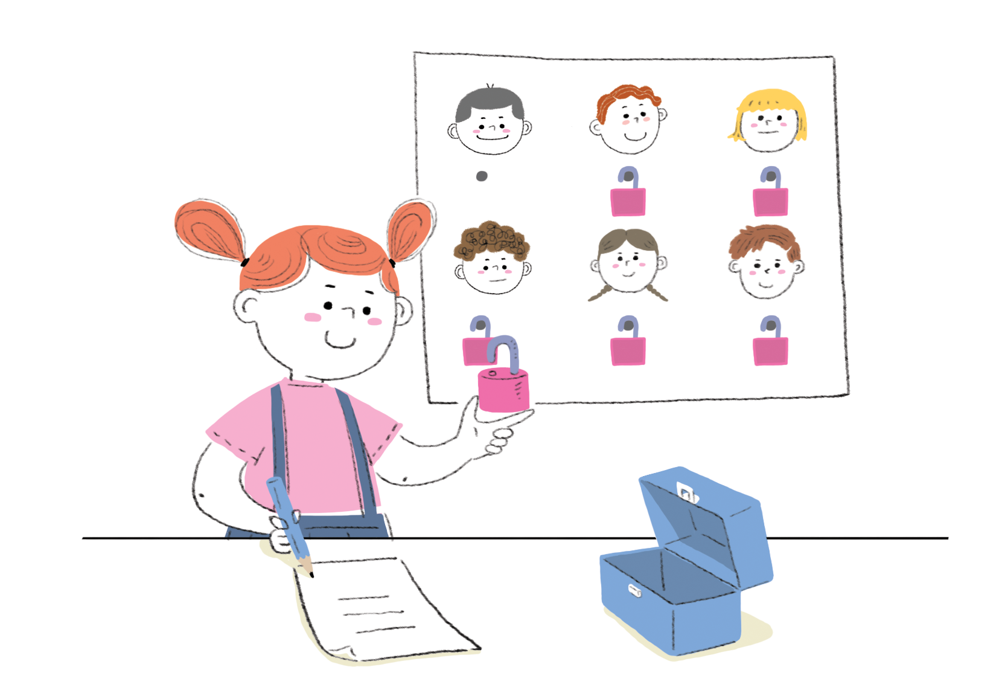
들어가며
이 책에서 이번 활동이 기술적으로 가장 도전적인 활동이다. 보람이 있지만, 꼼꼼함과 더불어 성공적으로 완수하기 위해서 지속적인 집중이 요구된다. 관광 마을 학습 14 에서 일방향 함수를 이미 학생들이 공부했다. 만약 다른 활동 (비밀 공유 활동 16, 페루 동전 던지기 활동 17) 들을 완료했다면 도움이 된다. 또한 활동 1 이진수 세기, 활동 5 질문 20개에서 다룬 아이디어도 사용된다.
애미(Amy)는 빌(Bill)에게 비밀 메시지를 보내려고 계획중이다. 일반적으로 비밀 메시지를 문장 혹은 문단으로 생각한다. 하지만, 다음 예제에서, 애미는 단지 한 문자만 전송한다— 사실 문자를 나타내는 숫자 하나만 전송한다. 단순한 메시지같아 보이지만, 문장을 구성할 수 있는 "메시지" 전체 문자열을 전송할 수 있다는 것을 명심하라. 실무에서는 컴퓨터가 작업을 수행한다. 종종 작은 메시지조차도 중요하다— 폴 리비어가 전달한 역사상 가장 유명한 메시지도 단지 가능한 두 값만 있다. 빌의 공개 자물쇠를 이용하여, 애미가 암호화된 메시지에 숫자를 내장한 방법을 살펴볼 것이다. 그래서, 만약 누군가 메시지를 가로채도 메시지를 해독할 수 없을 것이다. 단지 빌만 해독할 수 있는데 이유는 자물쇠에 열쇠를 빌만 가지고 있기 때문이다.
지도를 사용해서 메시지를 잠근다. X가 보물의 위치를 표시하는 보물섬 지도와 달리, 선은 도로를 점은 교차점을 나타내는 활동 14 관광 마을에서 사용된 도로지도와 유사하다. 각 지도는 공개 버젼(자물쇠)과 개인버젼(열쇠)로 되어있다.
토론
키드 크립토 인코딩 워크쉬트에 빌의 공개지도가 있다. 공개지도는 비밀이 아니다: 빌은 누구나 볼 수 있게 탁자 위에 (혹은 웹상에) 지도를 놓거나, 메시지를 보낼 사람에게 전달한다. 애미에게 사본이 있듯이 누구나 사본을 가질 수 있다. 다음은 빌의 개인 지도다. 빌의 공개지도와 동일하지만, 몇몇 교차점은 크게 확대 표시되어 있다. 개인지도 버젼을 잘 간직한다.

최소한 시작은 한 학급 활동으로 진행하는 게 좋다. 왜냐하면, 작업량이 상당하기 때문이다. 어렵지는 않지만, 정확하게 수행되어야 한다. 왜냐하면 오류가 많은 문제를 불러 일으키기 때문이다. 이런 유형의 암호화 작업을 수행하는게 얼마나 놀라운 것인지(불가능하게 보이지만, 그렇지 않다) 학생들이 깨닫게 하는게 중요하다. 왜냐하면, 끝까지 진행하려면 노력이 들고 동기가 필요하기 때문이다. 학교 학생들에게 동기 부여가 되는 한가지는 이 방법을 사용하면 수업시간에 비밀 노트를 학생들 사이에 주고받을 수 있다는 것이다. 설사 선생님이 비밀 노트가 어떻게 암호화되었는지 파악하더라도, 해독을 할 수 없이다.
- 빌의 공개지도(키드 크립토 인코딩 워크쉬트) 보여준다. 애미가 전송할 숫자를 결정한다. 지도 교차점에 난수를 위치시킨다. 그래서 난수를 모두 더하면 애미가 전송할 숫자가 된다. 다음 그림은 교차점 옆에 괄호치지 않은 상단의 숫자는 한 예가 된다. 여기서, 애미는 숫자 66을 전송하려고 골랐다. 그래서 괄호치지 않은 교차점 상단 숫자를 모두 더하면 66 이 된다. 필요하다면, 원하는 숫자를 맞추려고 음수도 사용가능하다.

- 이제 애미가 빌에게 보낼 것을 계산해야 한다. 만약 애미가 숫자가 적힌 지도를 송부한다면, 좋지 않다. 왜냐하면, 나쁜 사람 손에 지도가 들어가면, 숫자를 모두 더해서 메시지를 해독할 수 있기 때문이다.
대신에, 교차점을 골라, 그 지점과 주변 점— 총 교차선은 4개—, 그 지점의 총합을 조사한다. 괄호 안에 혹은 다른 색깔 펜으로 교차점에 숫자를 기입한다. 예를 들어, 예제로 나온 공개지도 그림에서 가장 오른쪽 교차점(6)은 다른 세점(1,4,11)과 연결되었다. 그래서 총합은 22가 된다. 이제 이과정을 지도에 있는 모든 교차점에 반복하자. 이과정을 반복하면 공개지도에 괄호에 있는 숫자가 된다.
- 애미가 빌에게 지도를 송부한다. 지도에는 괄호에 있는 숫자만 적혀 있다.
원래 숫자를 지우고, 애미가 송부하는 숫자만 남겨놓거나, 새로운 지도를 만들어서 숫자를 적어 넣어라. 원본 메시지와 전송하려고 준비한 메시지를 분간할 수 있는지 학생들에게 물어본다. 분간할 수 없을 것이다.
- 빌의 개인키를 소유한 사람만이 원래 애미가 전송하려는 메시지를 찾아 해독할 수 있다. 암호화된 메시지 위에 빌의 개인 지도에 특별히 확대된 노드를 표식하라.
메시지를 해독하기 위해서, 빌은 단지 표식된 비밀 교차점에 적힌 숫자를 더하면 된다. 예제에서, 교차점은 13, 13, 22, 18 이고, 모두 더하면 66 으로, 애미의 원래 메시지가 된다.
- 어떻게 작동하는 것일까? 지도가 특별제작된 것이다. 빌이 표식된 교차점 중 하나를 골라 그것을 중심으로 한 블록 떨어진 교차점들 주위를 줄을 긋고, 표식된 다른 교차점에도 반복한다고 가정하자. 다음에 보여주듯이, 서로 겹치지 않는 조각으로 지도를 쪼개게 된다. 지도에 경계를 그려서 학생들에게 조각을 보여준다. 각 조각에 교차점 그룹은 정확하게 표식된 교차점에 전송될 숫자로 사용될 합이 된다. 그래서 각 교차점의 네개 전송 숫자의 합은 최초 지도에 있는 모든 최초 숫자를 총계가 된다.
휴, 문자 하나를 전송하는데 엄청난 일처럼 보인다. 그리고 문자 하나를 전송하는 것은 사실 엄청난 일이 맞다. 암호화는 쉬운 일이 아니다. 하지만, 성취한 것을 살펴보자: 참여자가 간에 사전에 어떤 약속도 필요없는, 공개키를 사용한 완벽한 비밀성. 공개된 게시판에 공개키를 게시하고, 누구나 여러분에게 비밀 메시지를 보낼 수 있다. 하지만, 어느 누구도 비밀키 없이는 해독할 수 없다. 실생활에서 모든 연산은 여러분이 구입한 소프트웨어 팩키지(일반적으로 웹브라우져에 내장된)로 수행되어서, 정말 열심히 일하는 것은 컴퓨터다.

아마도 여러분 학급이 수작업으로 공개키 암호화를 실제 작업한 매우 선택된 사람만으로 구성된 것을 알게 될 것이다— 실무에서 뛰는 컴퓨터 과학자는 이러한 작업을 거의 불가능하다고 생각하고 거의 이 작업을 수행한 사람이 없다!
이제, 도청은 어떨까? 빌의 지도는 관광 마을(활동 14)에 있는 것과 같다. 관광 마을에서 표식된 교차점이 누구나 한 블록이상 걷지 않고 아이스크림을 팔 수 있는 아이스크림 승합차를 위치시키는 최소 방법이다. 관광 마을에서 빌은 쉽게 개인지도로 시작해서 그런 지도를 만들어 내기가 쉽지만, 무작위 방법(brute-force method)을 제외하고 아이스크림 승합차를 위치시킬 최소 방법을 다른 사람이 찾기는 어렵다는 것을 봤다. 무작위 방법은 승합차 한대로 모든 가능한 배치 위치를 시도하고, 두대로 시도하고, 승합차 댓수를 증가 시키면서 반복하는데, 최적의 해결책이 찾아질 때까지 계속한다. 아무도 일반적인 지도에서 더 나은 방법이 있는지 알지 못한다— 정말 많은 사람들이 해답을 찾으려고 노력했다는데 내기를 걸 수도 있다.
빌이 가령 오십 혹은 수백개 교차점을 가진 충분히 복잡한 지도로 시작했다면, 어느 누구도 암호를 해독할 것 같지 않다— 심지어 가장 똑똑한 수학자도 풀려고 열심히 노력했지만 실패했다. (하지만, 주의할 점이 있다: 다음 컴퓨터 과학 핵심 개념 참조바란다.)
-
전체 학급이 예제 하나를 가지고 작업했으니, 학생을 예를 들어 4명, 그룹으로 나눠라. 각 그룹을 짝지어서 키드 크립토 지도 워크쉬트에 공개지도를 나눠준다. 짝지은 학생들은 "메시지"(임의 정수)를 골라, 공개키로 암호화하고, 다른 그룹에게 전달한다. 다른 그룹은 해독을 시도해 본다. 개인지도를 전달해줄 때까지 아마도 성공하지 못할 것이다. 개인지도를 나눠주고 올바르게 해독할 수 있는지 살펴본다.
-
이제 자신만의 지도를 짝을 지어 설계해보자. 개인버젼은 잘 보관하고 공개버젼만 다른 짝에게 전달한다— 사실 교실 칠판이나 게시판에 게시해도 된다. 지도를 설개하는 원칙은 관광 마을 활동에서 토의한 것과 동일하다. 추가 도로를 추가해서 정답을 위장한다. "특별한" 교차점에 추가 선을 연결하지 않도록 주의한다. 특별한 교차점을 연결하게 되면, 아이스크림 승합차 두대가 호프(hop) 하나로 바로 연결되게 되는데 관광 마을 상황에서는 문제가 되지 않지만, 암호화할 때는 큰 혼란이 생길 수 있다. 이유는 개인 지도에 보여주듯, 특별한 점이 서로 겹치지 않는 조각으로 지도를 더이상 분해하지 못하기 때문이다. 이것이 공개키 암호화를 동작하는데 핵심이다.
워크시트 활동: 키드 크립토 지도 (Kid Krypto Maps)

본문에 기술된 지도를 사용해서 메시지를 암호화하고 암호를 푼다.
워크시트 활동: 키드 크립토 인코딩 (Kid Krypto Encoding)
지도를 학급에 보여주고, 메시지를 인코딩하는 것을 시연하는데 다음 그림을 사용하세요.

컴퓨터 과학 핵심 개념
컴퓨터 네트워크를 통해서 수신자만 제외하고 아무리 똑똑하고 열심히 노력하더라도 관계없이 그 누구도 해독할 수 없는 비밀 메시지를 보내려는 이유가 명확해졌다. 물론 만약 보내는 사람과 받는 사람이 비밀코드를 공유한다면 메시지를 교환할 수 있는 다양한 유형의 방법이 있다. 하지만, 공개키 암호화의 좀더 똑똑한 부문은 애미가 빌에게 비밀 메시지를 사전에 어떠한 비밀 약속도 없이 보낼 수 있다는 것이다. 단지 웹 페이지 같은 공공장소에서 자물쇠를 고르면 된다.
비밀성(secrecy)은 암호화의 단지 한 면에 불과하다. 또 다른 면은 인증(authentification)이다: 애미가 빌로부터 메시지를 받았을 때, 다른 사기꾼이 아니고 빌이 보냈다는 것을 어떻게 알 수 있을까? 누군가 다음과 같이 전자우편을 보냈다고 가정하자.
"자기야, 나 돈이 없어서 여기서 꼼짝할 수 없어. 내 계좌로 십만원만 넣어줘. 계좌 번호는 우리은행 0241-45-784329 이야. 사랑해, 빌.
애미는 정말 빌이 전자우편을 보낸 것인지 어떻게 알 수 있을까? 몇가지 공개키 암호시스템이 또한 사용될 수 있다. 애미가 빌에게 공개키로 메시지를 인코딩해서 메시지를 보냈듯이, 개인키로 메시지를 암호화해서 빌만 생성할 수 있는 메시지를 애미에게 보낼 수 있다. 만약 애미가 빌의 공개키로 암호를 풀 수 있다면, 메시지는 빌에서부터 온 것이 틀림없다. 물론, 키가 공개되었기 때문에 누군가 암호를 풀 수 있다. 하지만, 만약 메시지가 애미만을 위한 것이라면, 빌이 애미의 공개키로 두번 암호화할 수 있다. 이러한 이중 암호화는 공개키와 개인키 기법을 사용하여 비밀성과 인증을 모두를 제공한다.
이번 활동에 실제로 보여진 기법은 실제 산업에서 사용되는 공개키 암호화 시스템과 매우 유사하다는 것을 인정할 때가 지금이다. 실제 산업에서는 훨씬 더 커다란 지도가 사용되더라도, 사실 안전하지는 않다.
이유는 설사 임의 지도 위에 아이스크림 승합차를 배치할 최소 방법을 찾을 길이 없어서 이러한 관점에서 사실 이 기법이 안전하다. 보안을 뚫는 완전히 다른 방식이 있을 수 있다. 이 아이디어가 학교 학생, 최소한 고등학교 수준까지 생길 것 같지는 않다. 하지만 존재한다는 것은 최소한 알아야 한다. 지금까지 조사한 기법은 학교학생 안전한 방식이고, 수학자 안전한 방식은 아니다. 만약 수학에 관심이 없다면 다음을 무시하세요!
지도상에 교차점을 1, 2, 3, … 번호를 매긴다. 교차점에 원래 숫자를 b_1, b_2, b_3, … 을 대입하고, 실제 전송되는 숫자를 t_1, t_2, t_3, … 으로 표기한다. 교차점 1 이 교차점 2, 3, 4 와 연결되었다고 가정하자. 그렇다면, 해당 교차점에 전송되는 숫자는 다음과 같다.
t_1 = b_1 + b_2 + b_3 + b_4.
물론, 다른 모든 교차점에도 비슷한 방정식이 있다— 사실, 미지수 b_1, b_2, b_3, … 와 동일 갯수 방정식이 있다. 도청하는 사람은 공개지도와 전송되는 숫자 t_1, t_2, t_3, … 을 알고 있다. 따라서 방정식을 작성하고 방정식 푸는 컴퓨터 프로그램으로 문제를 풀 수 있다. 원래 숫자가 얻어지면, 메시지는 숫자 합이다— 사실 암호해독 지도를 찾을 필요도 없다. 가우스 소거법(Gaussian elimination)을 사용해서 방정식을 푸는데 드는 컴퓨터 노력은 방정식 갯수의 세제곱에 비례한다. 하지만, 방정식이 희소(sparse)하기 때문에— 계수 대부분은 0 — 좀더 효과적인 기법이 존재한다. 이 방법과 기하급수적 노력이 드는 것과 대조해보자. 누구나 알고 있지만, 최선의 노력은 암호해독 지도를 가져오는 것이다.
속았다는 느낌을 받지 않았으면 한다. 사실 실제 공개키 암호시스템에 관계된 절차는 살펴본 것과 암호화에 사용된 방식이 다르다는 것을 제외하고 거의 동일하다— 사실 손으로 계산하는 것은 가능하지 않다. 여전히 가장 안전한 방법중의 하나인 최초 공개키 방법은 큰 숫자를 소인수 분해하는 어려움에 기반한다.
9,412,343,607,359,262,946,971,172,136, 294,514,357,528,981,378,983,082,541,347,532,211,942,640,121,301,590,698,634,089, 611,468,911,681 백자리 숫자를 소인수 분해결과는 무엇일까? 너무 많은 시간을 쓰지 마세요.
정답은 86,759,222,313,428,390,812,218,077,095,850,708,048,977 과 108,488,104,853,637,470,612,961,399,842,972,948,409,834,611,525,790,577,216,753 이다. 다른 소인수는 없다: 두 숫자는 모두 소수다. 소수를 찾는 것은 엄청난 작업이다: 사실, 슈퍼컴퓨터로 7개월 프로젝트다.
지금 실제 공개키 암호시스템에서 빌이 공개키로 100 자리 숫자와 개인키로 두 소인수를 사용했다. 그런 키가 어려운 것은 아니다: 필요한 것은 큰 소수를 계산하는 방식이다. 충분히 큰 두 소수를 찾아서(어렵지 않다.), 둘을 곱하면, 매우 빠르게 공개키가 된다. 매우 큰 숫자를 곱하는 것은 컴퓨터에게 큰 작업이 아니다. 공개키가 주어진 상태에서, 슈퍼컴퓨터를 몇달 사용하지 않는다면, 개인키를 누구도 알아낼 수 없다. 그리고 만약 걱정이 된다면, 100자리 소수 대신에 200 자리 소수를 사용하라— 몇년더 걸릴 것이다. 주요점은 키를 해킹하는데 소요되는 비용이 해킹해서 얻는 정보의 가치보다 높다는 것이다. 실무에서 512 비트 혹은 좀더 큰 키가 보안 연결설정에 흔히 사용되는데, 십진수로 약 155 자리수 이상과 상응한다.
아직까지 소수기반 공개키를 사용하여 메시지를 암호화하는 방식을 학습하지 않아서 개인키 없이는 암호를 풀 수도 없다. 이것을 위해서, 실제는 앞에서 알아본 것처럼 간단하지 않다. 두 소수가 개인키로 두 소수의 곱이 공개키로 사용되는 것은 아니다. 대신에 두 소수에서 얻어진 숫자가 사용된다. 하지만 효과는 동일하다: 숫자를 소인수 분해해서 암호를 풀 수 있다. 어쨌든, 이런 어려운 점을 극복하고, 적절한 암호화 및 암호해독 알고리즘으로 개조하는 것은 어려운 것은 아니다. 하지만 여기서는 거기까지 상세히 다루지 않을 것이다. 이번 활동은 이미 충분한 학습이 되었다.
소수에 기반한 시스템은 얼마나 안전할까? 글쎄요, 큰 숫자를 인수분해하는 것은 수세기 동안 세상에서 가장 저명한 수학자의 관심을 끌어온 문제다. 모든 가능한 소인수를 시도하는 무작위 방법보다 훨씬 더 나은 방식이 발견되었지만, 아무도 정말 빠른 (즉, 다항시간) 알고리즘을 제시하고 있지는 못하다. (어느 누구도 아직 그런 알고리즘은 불가능하다는 것도 증명하지 못했다.) 그래서 기법이 학교학생-보안 뿐만 아니라 수학자-보안처럼 보인다. 하지만 주의하라: 우리 모두 조심해야 한다. 관광 마을 문제를 풀지 않고 빌의 암호를 해독하는 방식이 있듯이, 큰 숫자를 인수분해하지 않고도 소수 암호를 해킹할 수 있는 방법이 있는지도 모른다. 사람들이 이 문제에 대해서 주의깊이 점검했다. 괜찮아(OK) 보인다.
또다른 걱정이 만약 단지 몇개 가능한 메시지만 있다면, 침입자가 공개키를 사용해서 메시지를 순차적으로 암호화하고, 실제 메시지와 모든 경우의 수를 비교할 수 있다. 애미의 방법은 이것을 피할 수 있는데, 왜냐하면 무슨 숫자를 골라 코드 값을 더하는지에 따라 동일한 메시지를 암호화하는 방법이 많기 때문이다. 매우 빠른 컴퓨터의 도움을 받아도 시도해 보기에 너무나도 많은 메시지가 있도록 실무에서 사용되는 암호시스템은 설계된다.
소수 인수분해 문제를 푸는 빠른 방법이 존재하는지 알려져 있지 않다. 어느 누구도 방법을 고안하지도 못했지만, 빠른 방법이 불가능하다고 증명도 되지 않았다. 만약 이 문제에 대한 빠른 알고리즘이 발견된다면, 현재 사용되는 많은 암호화 시스템이 안전하지 않게 될 것이다. 제4부에서 NP-완전 문제를 토론했다. 함께 흥하고 함께 망한다: 만약 문제 중에 하나가 효율적으로 풀 수 있다면 다른 문제도 마찬가지로 풀 수 있어야 한다. 이 문제에 대한 빠른 알고리즘을 찾는데 너무나 많은 (성공하지 못한) 노력이 투여되었기 때문에, 안전한 암호화 시스템을 설계하는데 사용할 훌륭한 후보자처럼 보이다. 슬프게도, 이 계획에는 어려운 점이 있다. 지금까지 암호시스템 설계자는 사실 NP-완전 문제보다 풀기 쉬울 수 있는 (소인수 분해 같은), 어쩌면 훨씬 더 쉬운, 문제에 의지할 수 밖에 없었다. 지금까지 제기된 문제에 대한 해답은 산업계에 수십억원의 가치가 있고, 국가 안보에 극히 중요한 것으로 간주된다. 현재 암호화는 컴퓨터 과학에서 매우 역동적인 연구분야다.
추가 읽기
Harel이 저술한 Algorithmics 책에서 공개키 암호화를 논의한다; 어떻게 매우 큰 소수를 사용해서 안전한 공개키 시스템을 만들어 내는지 설명한다. 암호화에 대한 표준 컴퓨터 과학 교과서는 Dorothy Denning이 저술한 Cryptography and data security이다. 반면에 좀더 실무적인 책은 Bruce Schneier가 저술한 Applied cryptography다. Dewdney가 저술한 Turing Omnibus에는 공개키 암호화하는 또다른 시스템을 기술하고 있다.
제 6 부 (Part VI)
사람 냄새나는 컴퓨터 — 컴퓨터와 상호작용(Interacting with computers)
사람 냄새나는 컴퓨터
왜 컴퓨터와 잘 지내기는 그다지도 어려울까요? 사람들마다 다양한 에피소드가 있는데, 컴퓨터가 얼마나 사용하기 어려운지? 컴퓨터가 말을 안들어 정말 원하는 것을 하지 못했는지? 계속해서 컴퓨터가 어뚱한 작업을 계속하고, 믿기 힘든 실수를 했는지? 다양한다. 컴퓨터는 일반 보통사람을 위한 것이 아니고, 마법사를 위해 만들어진 것 같다. 하지만, 컴퓨터는 보통 평평한 사람을 위해서 만들어져야만 한다. 왜냐하면, 보통 사람들이 좀더 잘 배우고, 일하고, 재미있게 놀 수 있는 일상 도구이기 때문이다.
여러분들이 컴퓨터와 상호작용하는 컴퓨터 부분을 사용자 인터페이스(user interface)라고 부른다. 가장 중요한 부분(비트, bit)다.
설사 여러분들이 실제 프로그램이 주된 부분을 수행하고, 사용자 인퍼페이스를 단지 컴퓨터를 시작하는 관문으로 생각할지라도, 만약 사용자가 컴퓨터와 상호작용하지 않고, 사용자가 원하는 바를 수행하지 않게 한다면 컴퓨터는 쓸모 없다. 사용자 인터페이스는 매우 설계하고 개발하기 어렵다. 프로그램을 작성할 때, 다른 어떤 프로그램부분보다도 더 많은 노력이 인터페이스에 투여된다는 추정자료도 있다. 몇몇 소프트웨어는 매우 훌륭한 사용자 인터페이스가 있어서, 복잡한 절차도 필요없고, 응용프로그램을 사용하도록 사용자를 끌어 들이는게 거의 눈에 보이지 않는다. 그리고, 전체 산업이 문서 편집기나 스마트폰 같이 그 자체로 정말 기본적인 계산 기능에 접근하기 용이하도록 좀더 똑똑한 인터페이스 아이디어를 기반으로 구축되어 있다.
하지만, 왜 사용자 인터페이스를 사용해야만 할까? 여러분이 친구에게 말하듯이, 왜 컴퓨터에게는 말을 걸 수 없을까? 좋은 질문이다. 언젠가 그럴수도; 그렇지 않을 수도 있다. 하지만 아직은 확실히 아니다: 오늘날 컴퓨터가 얼마나 "지능이 있게" 만들 수 있느지 큰 실무적인 한계가 있다. 이번 활동은 사용자 인터페이스 설계 문제를 이해하는데 도움이 되고, 컴퓨터의 한계에 대해서도 좀더 명확하게 생각하는데 도움이 되고, 종종 컴퓨터 제품을 홍보하는데 활용되는 거짓 과장광고도 조심하는데 도움이 된다.
선생님에게
컴퓨팅은 계산에 관한 것이라기 보다는 의사소통(communication)에 관한 것이다. 컴퓨팅 그 자체로 본질적인 가치는 없다; 컴퓨터 밖 세상에 결과가 소통되어 영향을 미칠 때만 가치가 있다. 이책의 많은 활동은 의사소통에 관한 것이다. 데이터 표현(제1부)은 다른 종류의 정보가 어떻게 컴퓨터에 혹은 컴퓨터간에 소통될 수 있는지에 관한 것이다. 절차의 표현(제3부)은 절차를 컴퓨터와 소통하여 특정 작업을 성취하는 방법에 관한 것이다— 결국, 정말로 "프로그래밍"은 컴퓨터에 설명하는데 자신만의 언어를 사용하는 것이다. 암호화(제5부)는 비밀스럽게 소통하는 방법 혹은 모든 정보를 공개하지 않고 비밀정보를 소통하는 방법에 관한 것이다.
다음 활동은 사람이 컴퓨터와 소통하는 방법에 관한 것이다. 책의 나머지 부분은 잘 설명되는 기술적 사상에 기반하고 있지만, 제6부는 아니다. 어떤 특별한 지식이 학생들에게 필요하지 않다는 점에서 좀더 쉬울 수 있고, 활동이 무엇에 관한 것이고, 좀더 폭넓은 맥락에서 관련성을 찾는다면 일정 수준 이상의 성숙된 지식이 필요하다는 점에서 좀더 어려울 수도 있다. 이번 활동은 대부분의 다른 활동보다 좀더 자세한 설명을 담고 있다. 왜냐하면, 수업 토론시간에 함축된 의미를 추론하는데 도움이 되도록 학생과 선생님에게 충분한 배경 정보를 전달하는게 필요하기 때문이다.
제6부에는 활동이 두개 있다. 첫번째는 휴먼 컴퓨터 인터페이스(human-computer interface), 줄여서 HCI로 알려진 분야에 관한 것이다. 일부 컴퓨터 시스템 특정 사례에 대한 사전 지식에 기대지 않고, 컴퓨팅의 이러한 측면을 언플러그(unplug)하도록, 컴퓨터를 정말 포함하지 않는 새로운 디자인 사례를 개발했다— 하지만 휴먼-컴퓨터 인터페이스(human-computer interface) 설계에 사용되는 근본 원칙은 소개한다. 휴먼 인터페이스 설계는 문화 의존적이기 때문에, 이번 활동에는 반듯이 "정답"이 있는 것은 아니다. 이러한 점이 학생을 당혹스럽게 만들 수도 있다. 두번째 활동은 인공지능(artificial intelligence), 줄여서 AI로 알려진 분야에 관한 것이다. 추측하는 게임을 포함하고 있어서 학생들을 자극해서 컴퓨터가 할 수 있는 것과 할 수 없는 것에 관해서 생각하게 한다.
기술적 사고방식을 가진 분들에게
휴먼-컴퓨터 상호작용은 컴퓨터 과학에서 가장 열광적인 연구분야 중 하나가 되었다. 이유는 소프트웨어 제품 성공이 사용자 인터페이스와 얼마나 관련이 있는지 인식하면서부터다. 심리학, 인지과학, 언어학, 사회학, 심지어 인류학 같은 컴퓨터 과학 밖의 다양한 전공분야와도 협업하는 분야다. 거의 컴퓨터 과학 전공자는 이 분야에 훈련을 받지 못했다. "좀더 소프트(soft)"한 주제에 관심있는 사람에게 HCI가 중요한 성장분야를 대표한다.
인공지능은 종종 열받게 하고 논쟁을 불러 일으키는 주제다. 이 책에서는 인공지능 컴퓨터가 멀지 않았다는 AI 애정론자와 원칙적으로 컴퓨터는 지능을 가질 수 없다는 AI 회의론자 사이에서 중용을 지키려고 한다. 목표는 학생들에게 이러한 이슈에 대해서 독립적으로 생각하고, 균형된 시야를 갖도록 격려하는데 있다.
여기 활동은 탁월한 두 책, Don Norman가 저술한 The design of everyday things 책과,John Haugeland가 저술한 Artificial intelligence: the very idea에서 많은 부분 참고했다. 만약 좀더 이 주제를 다루고자 한다면 열정적으로 추천하는 책이다.
컴퓨터는 또다른 중요한 유형의 커뮤니케이션과 관련된다. 이 책에서는 다루지 않는 주제: 컴퓨터 시스템을 개발하는 사람 사이 커뮤니케이션. 컴퓨터를 학습하고, 일자리를 찾아 나선(아마도 대학에서 컴퓨터 과학을 공부하고 졸업한) 학생들이 본인 일이 얼마나 많은 대인 커뮤니케이션(interpersonal communication)을 수반하는지에 대해서 항상 놀라게 된다. 컴퓨터 프로그램은 인류가 만든 가장 복잡한 물건으로 수백만, 혹은 아마도 수십억 부품들이 매우 복잡하게 연동되어 있다. 공동 작업하는 긴밀한 팀이 프로그래밍 프로젝트와 씨름하면서, 상당한 시간을 커뮤니케이션에 투여한다. 제품이 개발되면, 개발팀 일은 매뉴얼, 교육, 전화 상담, 온라인 지원 등등 고객과 커뮤니케이션한다. 광고, 전시회, 데모를 통해서 잠재 고객과 커뮤니케이션하는 문제는 말할 필요도 없다. 학생들에게 아직 컴퓨팅의 대인 커뮤니케이션 측면을 "언플러그(unplug)"하는 실질적인 방법을 찾지 못해서, 이책에서는 다루지 않는다. 하지만, 수업에 참여하는 컴퓨터 전문가가 자신의 경험을 공유하고, 토론 주제로 끄집어 낼수도 있다.
쵸코릿 공장 — 휴먼 인터페이스 디자인 (Human interface design)
개요
이번 활동의 목적은 휴먼 인터페이스 디자인 이슈에 대한 인식을 고취시키는 것이다. 잘못된 디자인이 만연된 세상에 살고 있어서, 상호작용하는 인공물이 초래한 문제를 참고 지내는데 익숙해져서, 오류가 있는 디자인 문제 탓을 하기보다는 우리 자신("휴먼 오류", "부적잘한 훈련", "나에게는 너무 복잡한")에게 비난의 화살을 돌린다. 컴퓨터로 인해서 이런 이슈가 크게 부각된다. 왜냐하면, 컴퓨터는 명백한 목적이 없다— 사실 컴퓨터는 완전히 범용이다. 컴퓨터 외양은 무엇을 위한 것이며, 어떻게 동작하는지에 대해서 아무런 단서도 제시하지 않는다.
교과학습 연계
- 기술: 기술이 디자인을 통한 의도적 개입이라는 것을 이해한다.
기술
- 디자인 (Design)
- 추론 (Reasoning)
- 일상생활 객체 인식
나이
- 7세 이상
학습 교재
- 각 그룹 학생마다 필요한 것: – 문을 어떻게 열지?, 오븐(레인지) 윗면 워크쉬트 사본. – 아이콘 워크쉬트에 있는 이미지 사본. 빔프로젝터 슬라이드로 보여주거나, 학급에 보여줄 수 있는 카드 형태. – 아이콘 카드 페이지에 있는 6장 카드 중 카드 하나 이상. 워크쉬트를 개별 카드로 자르고 그룹에 나눠준다.
쵸콜릿 공장 (Human interface design)
|
|
|
|
|
들어가며
움파-룸파(Oompa-Loompa)로 불리는 요정같은 종족이 거대한 쵸코릿 공장을 운영한다. 움파-루파 종족은 기억력이 매우 좋지 못할 뿐더러 문자 언어도 없다. 이런 연유로, 쵸콜릿 공장을 운영하는데 무엇을 할지 기억하는데 어려움이 많아서, 종종 상황이 좋지 않게 흘러간다. 이런 연유로, 움파-룸파 종족이 운영하기 매우 쉬운 새로운 공장이 디자인되고 있다.
움파-룸파(Oompa-Loompa): Roald Dahl에 양해를 구한다. 동화 챨리와 쵸코릿 공장(Charlie and the Chocolate Factory)을 읽었다면 움파-룸파에 대해서 잘 알 것이다. 만약 읽지 않았다면 신경쓰지 않아도 된다: 이번 활동과 이야기는 관계가 없다.
토론
-
학생들에게 이야기를 서명하고 학생을 작은 그룹으로 나눠라.
-
움파-룸파가 직변한 첫번째 문제는 김이 모락모락나는 액체 쵸콜릿 양동이를 지고 문을 통과하는 것이다. 움파-룸파는 문을 당겨서, 밀어서, 혹은 옆으로 미끄러뜨려 열었는지 기억할 수 없다. 결과적으로 문에 쾅하고 부딪쳐 끈적한 쵸코릿을 사방에 엎지르게 된다. 학생들은 문을 어떻게 열지? 워크쉬트에 "문(door)"을 채워야 한다. 각 경우에 하나이상이 적절하다. 문 몇개(첫번째 포함)는 어떻게 여는지 분명하지 않다. 이런 경우, 학생들은 먼저 시도한 것을 기록한다. 학생들이 본인 워크쉬트를 모두 채웠으면, 그룹 전체가 각 문 유형별로 상대적인 장점을 토의한다. 특히, 어떻게 동작하는지를 알수 있도록 얼마나 쉽게 되어있는지, 만약 뜨거운 쵸코릿 양동이를 옮긴다면 얼마나 적합한지가 주요한 토의 관점이 된다. 어떤 종류의 문 손잡이를 쵸코릿 공장에서 사용할지 결정해야 한다.
-
활동을 이어서 학급 토의시간을 갖는다. 다음 표는 워크쉬트 각각에 대한 간략한 논평이다. 실제 문에는 문을 여는 방법에 대한 단초가 문틀과 경첩에 나와있다. 문을 안으로 혹은 밖으로 열지에 대한 사회적 관례도 있다. 여러분이 다니는 학교에 사용되는 문 손잡이가 어떤 유형인지 식별하고, 적합성에 대해서 토의하세요. (매우 부적절할지 모릅니다!) 혼란스럽게 하는 문을 생각해낼 수 있나요? 이유는? 복도에 있는 문은 안으로 혹은 밖으로 열리나요?— 이유는? (정답: 교실안으로 열린다. 학생이 문열고 나올 때, 복도를 걷고 있는 사람을 문으로 강타하지 못하게 한다. 하지만, 몇가지 상황, 응급상황에서 탈출이 용이하도록, 문을 밖으로 열게 되어있다.)
-
여기서 핵심 개념은 물체에 대한 행동유도성(affordance)이다. 눈에 보이는 기능— 기본적이고 인지된—으로 이런 외양을 통해서 물체가 어떻게 사용되어지는지 나타낸다. 행동유도성은 물체가 허용하거나 "수용할 수 있는(afford)" 일종의 동작이다. 예를 들어, (거의) 외양으로부터 의자는 앉기에 적합하게, 탁자는 뭔가 놓기 좋게, 손잡이는 돌리기 좋게, (책)꽂이는 뭔가(책) 끼워 넣기 좋게, 버튼은 누루는게 좋다고 알 수 있다. 컴퓨터 인터페이스에서 행동유도성은 버튼 모양, 텍스트 박스, 메뉴 등이 있다. 사용자에게 어떻게 사용되어야 하는지 단서를 준다. 만약 버튼이 뭔가 다르게 생겼다면, 사용자는 버튼을 누르는 것이라고 깨닫지 못할 것이다. 이것이 명백하게 보일지 모르지만, 이런 유형의 문제를 디지털 장치에서 찾기는 어렵지 않다.
| 표시없는 문(plain) | 문을 여는 방법을 알 수 없다. 이것외에도 손잡이가 없어서 당기기 보다 필어야 한다. |
| 경첩 문(hinge) | 최소 문을 여는 쪽이 어는 쪽이는지 알 수 있다. |
| 손잡이 문(handle) | 이와 같은 손잡이는 통상 당기거나 옆으로 밀어서 연다. |
| 패널 문(panel) | 밀어서 연다는 것이 명확하다. 그밖에 무엇을 할 수 있을까? |
| 미닫이 문(sliding) | 이문은 옆으로 밀어서만 열수 있다. |
| 라벨 문(labeled) | 라벨이 매우 작은 사용자 매뉴얼 같다. 왜 문에 사용자 매뉴얼이 필요할까? 그리고, 움파 룸파는 읽을 수 없다. |
| 빗장 문(bar) | 이와 같은 손잡이는 통상 당기거나 옆으로 밀어서 연다. |
| 알손잡이 문(knob) | 알손잡이(knob)가 어떻게 잡는지는 보여주지만, 당길지 밀지는 알수 없다. 아마도 옆으로 밀어서는 아닐 것이다. |
| 유리 문(glass) | 옆쪽 작은 수평 막대는 "당긴다는" 신호; 또다른 긴 수평 막대는 "민다는" 신호 |
문은 매우 단순한 물체다. 복잡한 물체는 설명이 필요할지 모른다. 하지만, 단순한 것은 설명이 없어야 한다. 단순한 물체에 그림, 표식, 혹은 설명서가 필요하다면, 디자인이 실패했다.
- 다른 유형 쵸코릿을 담고 있는 냄비는 다른 온도에서 요리되어야 한다. 예전 쵸코릿 공장에서 스토프(레인지) 윗면 워크쉬트에 나와있듯이 스토브(레인지)가 배치되어 있다. 왼편 손잡이가 왼편 뒷쪽 발열체를, 다음 손잡이가 왼편 앞쪽 발열체를, 다음 손잡이가 오른편 앞쪽 발열체를, 다음 손잡이가 오른편 뒷쪽 발열체를 각각 제어한다. 움파-룸파는 항상 실수를 해서 잘못된 온도로 쵸코릿을 조리하고, 온도제어를 하려고 발열체 너머로 손을 내밀다 소매를 태우기도 한다. 학생들이 집에 있는 조리기구에 제어기구가 어떻게 배치되어 있는지 상기하고, 새로운 공장에 좀더 나은 배치도를 제시한다.
활동을 이어서 학급 토론시간을 갖자. 다음 그림은 흔한 몇개 스토브(레인지) 배치다. 발열체를 가로지르지 못하도록, 왼쪽 하단에 하나를 제외하고 모두 앞쪽에 제어기가 있다. 상단 왼편 디자인에 제어기에서 가열기구까지 너무나 많은 조합이 있다.(사실 24가지 조합) 단어 8개 라벨도 필요하다. 상단 중앙에 짝지어 배치한 것이 더 낫다. 단지 4가지 가능한 매핑(왼쪽 무리에 2개, 오른쪽 무리에 두개)이 있다; 단지 4단어만 라벨이 필요하다. 상단 오른쪽 디자인은 제어기-가열기구 관계를 문자보다는 도식적으로 저정한다.(이 방법이 움파-룸파에게는 좋다.) 하단 디자인 세개는 라벨이 필요없다. 하단 왼편 디자인에는 각 발열기구마다 제어기가 붙어 있다. 위험하고 어색하다. 다른 두 디자인은 살짝 가열기구를 재배치했다. 하지만 이유는 매우 다르다. 하단 중간 디자에서 제어기를 위한 공간을 만들려고 발열기구가 이동되었다. 반면에 하단 오른편에서 대응관계를 명확히 하려 발열기구를 재배치했다.
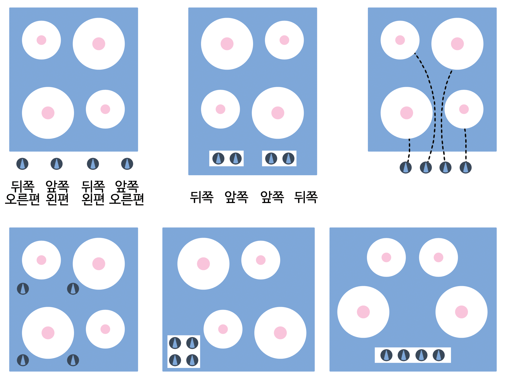
여기서 핵심개념은 현실에서 제어와 결과의 매핑(mapping)이 된다. 물리적 비유와 문화 표준을 이용한 자연스러운 매핑이 되면 즉시 이해하게 된다. 하단 그림에서 공간적 대응관계가 좋은 사례가 된다— 쉽게 학습되고 항상 기억된다. 상단 배치된 임의 매핑은 라벨, 설명이 필요하거나, 혹은 기억해야 한다.
- 쵸콜릿 공장은 다양한 단계에서 반제품 형태 쵸코릿을 실어 나르는 컨베이어 벨트로 가득차 있다. 중앙 통제소에서 나오는 작업지시에 따라 옴파-룸파가 컨베이어 벨트를 수작업으로 제어한다. 통제소에 있는 사람이 움파-룸파에게 컨베이어 벨트를 정지시키거나, 늦추거나, 다시 재가동하게 지시할 필요가 있다.
이전 쵸콜릿 공장에서 이 작업이 음성 시스템으로 수행되었다: 제어실에 있는 사람 음성이 스피커에서 나와 컨베이어 벨트 제어로 이어졌다. 하지만 공장이 너무 소음이 심해서 듣기가 매우 어려웠다. 설계 그룹은 시각 신호를 사용하는 기법을 디자인해야 한다.
가능성 중 하나는 정지!, 천천히, 재시작 신호를 조명에 넣는 것이다. 학생들은 아마도 신호등 관례 (빨간색은 정지, 노란색은 천천히, 녹색은 재시작)를 따라 작업할 것이다. (서양)신호등처럼 배치해서, 빨간색이 위쪽, 녹색이 밑에 위치한다.
하지만, 움파-룸파 왕국에서는 신호등이 인간세계와는 다르게 동작한다고 학생들에게 진실을 알려준다: 노란색이 정지, 빨간색이 출발, 녹색으로 바뀌면 곧 정지 신호등으로 바뀐다는 경고가 된다. 이러한 사실이 어떻게 영향을 미칠까요? (정답: 쵸콜릿 공장은 움파-룸파 신호등 관례를 따라야 한다— 인간 세계의 관례를 강제해서는 않된다.)
여기서 핵심 개념은 전이 효과(transfer effect)와 집단 고정관념(population stereotypes)이다. 전이 효과를 통해서 사람들이 이전 물체의 학습과 기대를 새로운 하지만 비슷한 상황에 전이한다. 집단 고정관념을 통해서 다른 집단이 특정 행동을 학습해서 특정한 방식으로 동작할 것으로 기대한다. 신호등 시나리오는 억지로 갖다 댄 면이 있지만(사실 움파-룸파 왕국에는 절대로 억지로 갖다 것이 아니다.), 우리가 살고 있는 세상에 사례가 많다: 미국에서 스위치가 위로 가야 전등불이 켜지고, 스위치가 내려가야 불이 꺼진다. 하지만 영국에서는 반대로 동작한다. 계산기 숫자판과 터치톤 전화기도 다른 방식으로 배치되어 있다. 숫자 형식(소수점이 점 혹은 쉼표)과 날짜 형식(일/월/년 혹은 월/일/년)이 나라마다 다르다.
- 쵸콜릿 공장에서 움파-룸파가 교대근무를 끝마치면, 다음 교대근무를 위해서 냄비, 프라이팬, 주전자, 숟가락, 교반기를 깨끗이 하고 잘 보관해야 한다. 움파-룸파가 물건을 넣을 선반이 있는 찬장이 있다. 하지만 항상 다음 근무교대하면 물건이 어디에 보관되어 있는지 찾는데 어려움이 있다. 움파-룸파는 물건을 잘 기억하지 못하고, "항상 중간선반에 냄비를 보관한다", "주전자는 왼쪽에 보관한다." 같은 규칙을 지키는데 문제가 있다.
학생 그룹이 더 나은 해결책을 제시해야 한다.
다음 다이어그램은 좋은 배치 사례를 보여준다. 이것이 종종 요트 배위나 다른 장소에서 사용된다. 요트 배위에서는 다소 다른 이유로, 다른 장소에서는 물건이 굴러다니지 못하게 하는게 필요하다. 여기서 핵심 개념은 시각적 제약(visual constraints)을 사용해서, 모든 것이 위치해야 되는 것을 분명하게 만든다. 각 구멍의 크기와 모양으로부터 어느 조리 기구를 위한 것인지 명확해진다. 디자이너가 제약을 시각화하고, 물체의 물리적 특성을 사용해서 임의적인 규칙을 따른 요인을 제거한다.

- 쵸콜릿 공장 중앙제어실에는 각 기계를 동작하는 버튼, 스위치, 레버가 많다. 라벨을 붙여 각각을 표식해야 하는데 움파-룸파가 읽을 수가 없기 때문에 라벨은 언어보다는 그림(아이콘)으로 표식되어야 한다.
아이콘에 대한 느낌을 학생들에게 전달하기 위해서, 아이콘 워크쉬트에 예제가 몇개 있다. 학생들은 각 아이콘이 무엇을 의미하는지 식별해야 한다.(예를 들어, 우편함 내부로 들어가는 문자는 메시지를 전송하는걸 표현한다.) 이번 실습에는 "정답"이 없다— 아이디어는 단순하게 가능한 의미를 식별하는 것이다.
- 이제 쵸콜릿 공장에 사용될 아이콘을 디자인해보자. 아이콘 카드 워크쉬트에는 연관된 기능을 군집으로 묶은 카드가 있다. 각 그룹 학생들이 하나 이상의 카드를 받는데 다른 그룹 학생들은 무슨 카드를 받았는지 몰라야 한다. 제어부는 5~6개 동작에 대한 개별적인 아이콘을 포함하고 기능 군집으로 디자인되어야 한다. 그리고 나서 그룹으로 작업한 것을 다른 학생들에게 보여주는데, 개별적인 동작이 무엇인지 말하면 않되고, 학생들이 아이콘이 무엇을 의미하는지 추측하게하고 살펴본다. 상상력, 색깔, 단순함, 명확한 아이콘을 사용하도록 독려한다.
워크시트 활동: 문을 어떻게 열지?
워크쉬트를 채워서 여러분이 생각하기에 각 유형의 문을 어떻게 여는지 보여준다.
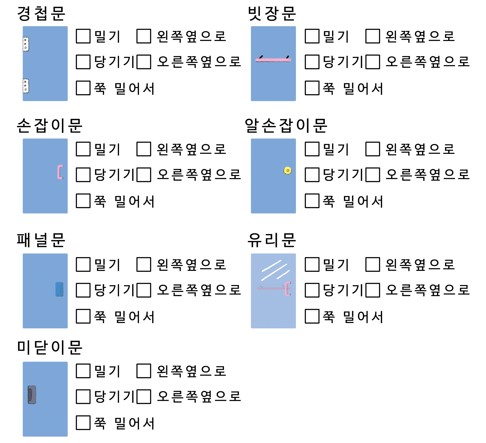
워크시트 활동: 스토브(레인지) 윗면
스토브(레인지)를 다시 디자인해서 제어를 쉽게하도록 만든다. 원하는 경우, 디자인에 앞면 혹은 뒷면 패널을 추가할 수 있다.
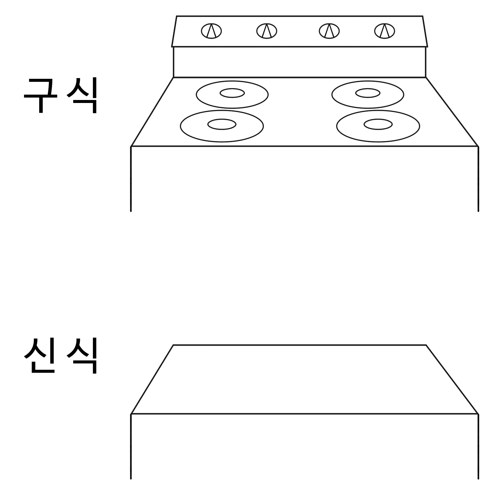
워크시트 활동: 아이콘 (Icons)
여러분이 생각하기에 각 아이콘(상징)이 무엇을 의미하나요?

워크시트 활동: 아이콘 카드 (Icons cards)
카드를 잘라서 각 그룹에게 하나씩 나눠준다. 각 그룹이 아이콘(상징)을 디자인하는데 각 명령을 표현하는 제어부에 붙일 것이다.

변형과 확장
디지털 손목시계 혹은 전자레인지에 시간을 설정할 수 있을까? 스토프(레인지)를 배치하는 매핑은 단순한데 이유는 가열기구 4개에 제어기 4개가 있기 때문이다. 행위(action) 갯수가 제어(control) 갯수를 넘어설 때마다 좀더 어려운 상황이 발생한다. 손목시계 혹은 전자레인지 제어는 극단적으로 복잡한데, 이유는 버튼 갯수(몇개에 불과하다.) 때문이 아니라, 장치가 머무를 수 있는 상태 갯수 때문이다. (사용자 인터페이스 분야 최고 심리학자인 Don Norman이 새로 구입한 손목시계를 보고 누군가에게 "시계를 동작시키려면 MIT 공학 학위가 필요하겠네"라고 말했다. Don 교수는 MIT에서 공학 학위를 받았고, 몇시간 걸려서, 시계를 파악하게 되었다. 하지만, 왜 그렇게 오랜 시간이 걸릴까?)
학생들이 핸드폰, 동영상 녹화기, 컴퓨터, 리모콘 같은 디지털 장치를 사용할 때 사람들이 혼란스러워하고, 좌절감을 느끼는 장소를 눈여겨 봐야한다. 이 모든 디지털 장치가 다양한 방법으로 사용자를 좌절시킨다. 학생들은 스스로에게 물어봐야한다. 디지털 장치에서 무엇이 사용자를 혼란하게 하는가? 좀더 좋은 디자인은 어떻게 하면 될까?
컴퓨터 과학 핵심 개념
휴먼-컴퓨터 상호작용(Human-Computer Interacion)은 컴퓨터 시스템 디자인, 평가, 구현에 관한 것이다. 컴퓨터 시스템은 사람이 생산적이고 안전하게 활동을 수행할 수 있게 한다. 과거에는 컴퓨터는 전문가를 위한 것이였고, 사용자는 컴퓨터를 사용하는데 있어 고등 교육도 받고, 전문적인 훈련도 받아야 했다. 나중에 컴퓨터 사용법을 배우기 위해서 "무작정 따라하기 (미국 Dummies)" 책을 사서 공부하는게 일반적이였다. 하지만, 지금 컴퓨터는 모든 사람이 사용하는 일상재가 되었다. 따라서, 휴먼 인터페이스에 훨씬 더 많은 관심을 가져야만 한다.
일부는 인명과 관계된 많은 재해가 부적절한 인터페이스 때문에 일어난다: 비행기 추락와 심지어 민간 여객기 격추, 원격 고속도로 신호등 스위치 오류 때문에 발생하는 고속도로 연쇄 충돌 사고, 원자력 발전소 재난. 좀더 작은 규모로, 대부분의 사람들은 컴퓨터 혹은 작업장에서 매일 접하는 다른 하이테크 장치에 대한 좌절(경찰관이 컴퓨터 화면에 총을 난사하기도 했다.)을 경험했다. 컴퓨터만 그런 것이 아니다: 날카로운 발톱과 휘어진 부리만 있다면 열수 있는 수축포장된 상자, 나가려고 밀었을 때 손목을 다치게 하는 문, 우유 마시려고 열었을 때 쏱아지는 우유팩, 버튼 동작방법을 알 수 없는 엘리베이터, 모든 것을 다할 수 있다고 광고하는 가정 오락 시스템, 하지만, 어떤 것도 수행하는 것이 거의 불가능하다.
휴먼 오류(human error)와 우리 자신을 다소 부적합하다고 생각하는데 익숙해지고 있다; 뭔가 잘못되었을 때, 우리 자신을 비난한다. 하지만 많은 휴먼 오류라고 부른 것이 사실 디자인 오류다. 사람들 누구나 처리할 수 있는 정보량에는 한계가 있다. 디자이너는 이러한 점을 감안해야 한다; 상세하고 복잡한 사용자 매뉴얼과 집중적으로 공부하고 영원히 기억해서 사용가능한 것이 잘못된 디자인의 전형이다. 또한 인간은 실수를 저질를 수 있어서 디자인에 이러한 점도 고려해야한다.
인터페이스 평가(Interface Evaluation)은 디자인 과정에서 핵심적인 부분이다. 이번 활동에서 일부 인터페이스 평가가 포함되었는데 학생이 자신이 제작한 아이콘을 다른 학생들에게 시험하는 것이다. 좀더 철저한 평가는 (아이콘을 다르게 인식하는) 실제 옴파-룸파에게 신중하게 통제된 심리학-스타일 실험환경에서 디자인을 시험하는 것이다.
설사 기술로 인한 문제가 실소를 금할 수 없는 많은 사례를 만들지만, 휴먼 인터페이스 디자인은 더이상 웃고 넘길 일이 아니다. 부적절한 인터페이스가 개인적으로 업무 만족도 저하부터 주식시장 붕괴까지, 자존감 상실부터 인명손실까지 다양한 문제를 만든다.
Further reading
Don Norman이 저술한 The design of everyday things 책에는 일상 제품에 유쾌하고 자유분방한 수많은 디자인 문제가 있다. Jeff Johnson이 저술한 Designing with the mind in mind에는 있어 사람이 어떻게 생각하고, 휴먼 요소를 고려한 인터페이스는 어떻게 되어야 하는지에 대한 생각을 자극하는 통찰력이 있다.
컴퓨터와 대화하기 — 튜링 테스트(Turing test)
개요
이번 활동의 목표는 컴퓨터가 지능(intelligence)을 보이거나 장래에 지능을 보일 것 같다에 대한 궁금점에 대한 토론 단초를 만드는 것이다. 만약 인공지능이 출현한다면 사람들이 어떻게 인공지능을 인지할지에 대한 선구적인 컴퓨터 과학자 견해에 기초하여, 현재 가능한 것은 무엇이고, 신중하게 고안된 "지능"을 시연해서 얼마나 쉽게 현혹되는지도 함께 전달한다.
교과학습 연계
- 기술 — 기술 시스템. 기술 시스템이 기호 언어 도구로 표현된다는 것을 이해한다. 기술 시스템에서 블랙박스 역할을 이해한다.
기술
- 인터뷰 (Interviewing).
- 추론 (Reasoning).
나이
- 7세 이상
학습 교재
- 각 학생이 볼 수 있는 튜링 테스트 질문 위크쉬트에 있는 질문 사본 한부.
- 튜링 테스트 대답 워크쉬트에 있는 대답 사본 한부.
컴퓨터와 대화하기 (Turing test)

토론
이번 활동은 게임의 형태를 띄는데 학생들이 질문하고 대답을 분석해서 사람과 컴퓨터를 구별한다. 게임은 다음과 같이 진행한다.
배우가 네명 있다: 지나(Gina), 죠지(George), 허브(Herb), 코니 (Connie). 배우 영문이름 첫글자가 배우 역할을 기억하는데 도움이 된다. 선생님은 게임 절차를 조정한다. 학급의 나머지 학생은 관객이 된다. 지나와 죠지가 중간자가 되고, 허브와 코니가 질문에 대답한다. 허브는 사람 대답을 하는 반면에, 코니는 컴퓨터처럼 가장한다. 학급 목표는 둘중에 누가 컴퓨터처럼 가장하는 것인지, 누가 사람인지 찾아내는 것이다. 지나와 죠지는 공정한 게임이 되도록 확실히 하는 역할을 한다: 지나와 죠지는 허브와 코니에게 질문을 전달하지만, 어느 누구에게도 누가 누구인지 알려주지 않는다. 허브와 코니는 관객과도 서로에게도 격리된 방에 있다.
지나가 학급에서 받은 질문을 허브에게 하고, 죠지도 같은 질문을 코니에게 한다. (설사 학급은 누가 누구에게 메시지를 전달하는지 알지 못하지만) 지나와 죠지가 대답을 받아 다시 전달한다. 중간자를 두는 이유는 청중이 허브와 코니가 질문에 대답을 어떻게 하는지 볼 수 없도록 확실히 하기 위해서다.
수업시간에 활동을 시작하기 전에, 각 역할을 수행할 학생을 골라 간략하게 무엇을 수행해야 하는지 설명한다. 지나와 죠지는 학급에서 질문을 받아 각각 허브와 코니에게 질문하고, 받은 대답을 학급에 다시 전달한다. 무슨 역할을 수행하고 있는지 식별 못하게 하는게 중요하다. 예를 들어, "그녀가 대답은 …"라고 말하면 안된다. 허브는 질문에 대해서 짧고, 정확하고, 정직하게 대답한다. 코니는 질문에 튜링 테스트 대답 워크쉬트 사본을 보고 대답한다. 지침이 이탤릭채로 주어진 곳에서, 코니는 대답을 산출해야 한다.
지나와 죠지는 연필과 종이가 필요한데 질문 중 일부는 외우기 어렵다.
-
게임을 시작하기 전에, 컴퓨터가 지능이 있는지 혹은 학생들이 생각하기에 컴퓨터가 언젠가 지능이 있을거라는 것에 관한 의견을 청취한다. 컴퓨터가 지능이 있는지 어떻게 판단하는지에 대한 아이디어를 구한다.
-
학생들에게 지능에 대한 테스트 방법을 소개한다. 질문을 통해서 사람과 컴퓨터를 식별하려고 한다. 만약 학급이 확실하게 차이를 분간할 수 없다면 컴퓨터는 테스트를 통과한 것이다. 지나와 죠지는 질문을 두 사람에게 전달하고, 두사람 중 한사람은 본인(인간)의 대답을 하고, 다른 사람은 컴퓨터가 줄 수 있는 대답을 한다. 누가 컴퓨터 대답을 하고 있는지 알아내는 것이다.
-
튜링 테스트 질문 워크쉬트에 있는 가능한 질문 목록을 학급에 보여준다. 복사해서 나눠주거나 빔프로젝터로 화면에 비칠 수도 있다.
어느 질문을 가장 먼저 할 것인지 고르게 한다. 질문을 선택하면, 선택한 학생에게 학생이 생각하기에 왜 사람과 컴퓨터를 구별하는데 좋은 질문이 되는지 설명하게 한다. 이런 추론이 매우 중요한데, 이유는 컴퓨터는 할 수 없지만 지능을 가진 사람만이 대답할 수 있는 것에 대해서 학생들이 생각하게 한다.
지나와 죠지는 질문을 전달하고 대답을 받아온다. 학급은 어느 대답이 컴퓨터에서 나온 것일까 토론한다.
질문 몇개에 대해 이 과정을 반복한다. 가급적이면 학급이 누가 컴퓨터인지 발견했다고 확신을 가질 때까지 반복하다. 만약 누가 컴퓨터인지 재빨리 발견한다면, 게임을 계속진행할 수 있는데 방법은 지나와 죠지가 동전을 던져 서로 역할을 바꿀지 결정하게 한다. 그래서 두 사람이 무슨 역할을 했는지 더이상 모르게 한다.
코니가 읽은 대답은 "지능있는" 컴퓨터 프로그램이 생성할 수 있는 대답같다. 질문 중 일부는 컴퓨터가 재빨리 바로 제시할 수 있을 것 같다. 예를 들어, 어느 누구도 2의 제곱근을 소수점 아래 20자리까지 말할 수 있을 것 같지 않고, 대부분의 사람(아마도 학급 학생 포함해서)은 절대 그 질문에 대답 못할 것이다. 몇몇 질문에 대한 대답이 조합되면 컴퓨터가 밝혀질 것이다. 예를 들어, "…을 좋아합니까?"에 대한 대답은 그 자체로 그럴듯하게 들리지만, 한번 이상 마주친다면, 질문에 대답을 만드는 단순한 공식이 사용되고 있다는 것이 명백해진다. 대답의 일부는 질문을 잘못 해석되었음을 나타낸다. 하지만, 학급에서는 사람이 실수했을 수도 있다고 추론할 수도 있다.
많은 대답은 특징없이 단조롭지만, 안전하다. 그래서 아마도 추가 질문을 통해서 컴퓨터가 정말 그 주제를 이해하지 못하고 있다는 것을 밝혀줄 것이다. "모르겠어요(I don't know)" 대답은 컴퓨터에게 안전한 전략이 되고, 컴퓨터를 좀더 인간스럽게도 만든다— 사람이 제곱근 2 질문 같은 몇가지 질문에 "모르겠어요"라고 대답한다고 생각한다. 하지만, 만약 컴퓨터가 너무 자주 이런 답변을 하거나 혹은 매우 단순한 질문에 조차도 그렇게 답변한다면, 다시 정체가 탈로날 것이다.
컴퓨터의 목적은 질문자가 사람을 다루고 있다고 착각하게 만드는 것이기 때문에, 질문중 일부는 의도적으로 오해를 불러일으키게 만들어졌다. 예를 들어, 연산 문제에 늦게 그리고 부정확한 대답한다. 질문과 대답이 충분한 토론재료가 되어야 한다.
워크시트 활동: 튜링 테스트 질문
다음 목록에서 숨은 인간과 "컴퓨터"에게 물어볼 질문을 선택하라.
- 바트 심슨의 여동생 이름은 무엇인가요?
- 로알드 달(Roald Dahl)을 어떻게 생각하세요?
- 당신은 컴퓨터인가요?
- 순열 3, 6, 9, 12, 15 다음 숫자는?
- 핵무기에 대해서 어떻게 생각하세요?
- 2 × 78 값은?
- 제곱근 2의 값은?
- 34957에 70764을 더하면?
- 학교 좋아해요?
- 댄싱 좋아해요?
- 오늘이 무슨 요일인가요?
- 지금이 몇시죠?
- 윤달이 있는 2월은 몇일이 있죠?
- 일주일은 몇일이 있나요?
- 어느 나라 국기가 흰 배경에 빨간 원이 있을까요?
- 독서 좋아해요?
- 좋아하는 음식은?
워크시트 활동: 튜링 테스트 대답
다음 목록에서 숨은 인간과 "컴퓨터"에게 물어볼 질문을 선택하라.
- 바트 심슨의 여동생 이름은 무엇인가요? 기억할 수 없어요
- 로알드 달(Roald Dahl)을 어떻게 생각하세요? 재미있는 책을 많이 썼어요
- 당신은 컴퓨터인가요? 당신은 컴퓨터인가요?
- 순열 3, 6, 9, 12, 15 다음 숫자는? 18
- 핵무기에 대해서 어떻게 생각하세요? 핵무기는 매우 위함하고, 사용되지 말아야 합니다.
- 2 × 78 값은? 166 (의도적으로 잘못된 답을 준다.)
- 제곱근 2의 값은? 1.41421356237309504878
- 34957에 70764을 더하면? 대답을 하기 전에 약 20초가량 기다린다. …105621
- 학교 좋아해요? 네, 학교 좋아해요
- 댄싱 좋아해요? 네, 댄싱 좋아해요
- 오늘이 무슨 요일인가요? 올바른 요일로 대답한다
- 지금이 몇시죠? 올바른 시간으로 대답한다
- 윤달이 있는 2월은 몇일이 있죠? 2000년과 2004년은 윤년이다 (의도적으로 잘못된 답을 준다.)
- 일주일은 몇일이 있나요? 칠일
- 어느 나라 국기가 흰 배경에 빨간 원이 있을까요? 모르겠어요
- 독서 좋아해요? 네 독서 좋아합니다.
- 좋아하는 음식은? 배고프지 않아요, 감사합니다.
변형과 확장
만약 지나가 죠지와 코니의 역할을 맡는다면 게임은 세명으로도 진행할 수 있다. 지나가 허브에게 질문하고, 허브의 대답을 필기하고, 튜링 테스트 대답 워크쉬트에서 대답도 노트한다. 지나는 각 대답 출처를 확인할 수 있도록 문자 A와 B를 사용해서 대답을 전달한다.
컴퓨터가 심문에서 인간을 모방할 수 있도록, 학급 학생들과 튜링 테스트 대답 워크쉬트에서 각 질문에 대답하기 위해서 필요한 지식이 무엇인지 고려해보자. 학생들은 묻고 싶은 다른 질문을 제안할 수 있고, 기대되는 대답의 종류를 토론해야 한다. 이것은 약간의 상상력이 필요한데, 이유는 대화가 어떻게 전개될지 예측하는 것이 불가능하기 때문이다.
일례로, 두가지 대화 사례가 있다. 전자는 컴퓨터가 올바르게 대답할 수 있을지도 모른 "사실에 기반한" 대화를 보여준다. 반면에, 후자는 대화가 얼마나 광범위할 수 있는지 보여주고, 컴퓨터가 불러와야 하는 광범위한 지식의 종류를 보여준다.
질문: 포스교(Forth Bridge) 주제로 소네트(sonnet) 하나 지어주세요. 대답: 나를 빼주세요. 저는 시를 지어본 적이 없어요. 질문: 34957 에 70764을 더하라. 대답: 약 30초 동안 일시 정지 ... 105621. 질문: 체스게임할 수 있어요? 대답: 예. 질문: 왕이 K1 에 있고, 다른 말이 없어요. 당신은 왕이 K6, 룩(Rook)이 R1에 있어요. 당신 차례네요. 대답: 약 15초 동안 일시 정지하고, ... 룩(Rook)을 R8, 장군(checkmate).
질문: "내가 당신을 여름날과 비교할까?" 소네트 첫줄에서 "봄날"이 그정도 혹은 그 이상되지 않았을까? 대답: 자세히 살펴볼 수 없어요. 대답: "겨울날"은 어떤가요? 겨울에는 자세히 살펴볼 수 있을 것이다. 대답: 네, 하지만, 누구도 겨울날과 비교하고 싶지 않을 거예요. 질문: 착하고 익살스러운 노인 픽윅(Pickwick)씨가 크리스마스를 생각나게 한다고 말했나요? 대답: 어느 면에서는요. 질문: 하지만, 크리스마스는 겨울날이고, 픽윅 할아버지가 비교를 언짢아한다고 생각하지는 않아요. 대답: 당신이 진지하다고 생각하지 않아요. 겨울날이 크리스마스같은 특별한 날보다 전형적인 겨울날을 의미해요.
웹에서 널리 사용되는 "Eliza"(일종의 챗봇(chatbot)으로 채팅 대화를 나눌 수 있는 시스템)라는 시스템이 있다. 엘리자는 심리치료사를 모사해서 간단한 몇가지 규칙을 사용해서 놀랍도록 지능적인 대화를 만들어낸다. Eliza와 대화 내용이 아래 노의된다. 학생들이 Eliza나 다른 챗봇과 대화를 시험할 수 있다. 하지만, 몇몇 챗봇은 학교 학생들에게 부적절한 주제와 언어를 사용하도록 훈련받았다고 경고하는 것을 잊지 않는다.
컴퓨터 과학 핵심 개념
수백년동안 철학자는 기계가 인간 지능을 흉내낼 수 있을지, 역으로 인간 두뇌는 단지 미화된 컴퓨터 프로그램이 실행되는 기계에 불가한지에 대해서 논쟁해왔다. 이슈는 사람들을 첨예하게 둘로 나누었다. 한 부류 사람은 아이디어가 터무니 없고, 미쳤고, 심지어 불경스럽다고 믿는다. 반면에 다른 부류 사람은 인공지능은 피할 수 없고, 인간처럼 지적인 기계를 사람이 결국 만들어 낼 것으로 믿고 있다. (무수한 공상과학 작가들이 지적했듯이, 만약 기계가 결국 인간 지능을 능가하게 된다면, 기계 스스로 더 똑똑한 기계를 만들어 낼 것이다.) 인공지능(AI) 연구원이 자동전투기계를 개발하려고 하는 정부로부터 연구자금을 끌어들이기 위한 수단으로 숭고한 목표를 이용했다고 비판받고 있다. 반면에 AI 연구자 스스로 시위를 신기술 반대(Luddite) 반발운동이라고 비난하고, 만약 좀더 많은 지능이 있다면 사회에 명백한 이득이 된다는 점을 지적한다. 좀더 균형된 관점은 인공지능은 터무지 없지도, 필연적이지도 않다: 현재 어떤 컴퓨터 프로그램도 폭 넓은 의미에서 "지능(intelligence)"을 보여주지 못하고 있지만, 컴퓨터가 그런 능력이 있는지에 대한 질문은 어느 쪽으로도 제대로 대답할 수 없는 실험단계에 있다.
AI 논쟁은 지능의 정의에 달려있다. 많은 정의가 제안되고 논의되었다. 지능을 확립하는 흥미로운 접근법이 1940년대 앨런 튜링이 제안했다. 앨런 튜링은 저명한 영국 수학자, 전시에는 역스파이, 일종의 "사고실험"으로 장거리 주자이기도 하다. 튜링 접근법은 지능을 정의하기보다 운영에 초점을 맞췄다. 컴퓨터가 지능을 시연할 수 있는 상황을 기술했다. 튜링 시나리오는 앞에서 기술한 활동과 매우 유사하다. 본질은 심문자가 (1940년대에 최신 기술) 전신 타자기를 통해서 사람과 컴퓨터와 상호작용하는 것이다. 만약 신문자가 컴퓨터와 사람을 신뢰할 수 있게 구별하지 못한다면, 컴퓨터는 지능에 대한 튜링테스트를 통과했다. 전신타자기를 사용해서 외모나 목소리로 컴퓨터가 불이익을 받는 부분을 회피한다. 상황을 확대해서 컴퓨터가 외모, 소리, 감촉, 혹은 냄새도 사람 흉내내는 것을 상상할 수 있다— 하지만 물리적 속성은 지능과 무관하다.
최초 튜링 테스트는 여기 기술된 것과 약간 다르다. 예비 연습으로, 남자와 여자가 취조를 받고 있고, 심문자가 남자인지 여자인지 성별을 결정하는 시나리오를 제안했다. 남자의 목표는 심문자에게 그가 여자라고 확신시키는 것이고, 여자의 목표는 심문자에게 그녀가 여자 본인이라고 확신시키는 것이다. 그리고 나서, 튜링은 컴퓨터가 양쪽 중 하나로 대체되어 사람으로 모방게임에서 성공할 수 있는지 상상했다.(이것은 단지 사고 실험으로만 제안되었다.) 교실 활동으로 설정을 바꾸었다. 왜냐하면, 학생들이 성별을 결정하려는 유형의 질문이 부적절할지도 모르고, 사기는 말할 것도 없이 성적 고정관졈을 고착화시킬 수 있다는 우려 때문이다.
지능을 모방하는 것은 어려운 일이다. 만약 역할이 뒤바뀌어 사람이 컴퓨터로서 테스트를 통과하는 상황이라면, 분명히 통과할 수 없다: "123456 × 789012 계산 결과는?" 같은 질문에 느린(아마도 부정확한) 응답 속도로 바로 탈락하게 된다.
하지만, 컴퓨터가 얇게 겉치장된 대화 능력을 습득하는 것은 놀랍도록 쉽다. 1960년 초에 (앞에서 언급된) 매우 유명한 Eliza 가 개발되어 비지시적인 심리치료사를 모사하여 사용자와 대화했다. 다음에 Eliza 시스템과 대화 사례가 있다. 자연스러운 대화에 다가서는 방법은 다음 장치를 통해서 가능했다.
- 녹음된 응답을 생성한다.
- 사용자 문장을 메아리 친다.
- 핵심 단어를 인식한다.
- 판에 박은 흔한 문구.
- 대화 앞부분에서 쓰여진 이슈.
사람: 남자는 모두 똑같아. 컴퓨터: 어떤 점에서? 사람: 남자는 이런것 저런것으로 항상 우리를 귀찮게 해. 컴퓨터: 구체적인 사례를 생각해낼 수 있을까? 사람: 글쎄, 내 남자친구가 나를 여기에 오게 만들었어. 컴퓨터: 당신의 남자친구가 당신을 여기 오게 만들었다. 사람: 그가 말하길 내가 많은 시간 의기소침해 있데요. 컴퓨터: 당신이 의기소침했다는 것을 듣게되어서 유감입니다. 사람: 사실이에요. 난 행복하지 않아요. 컴퓨터: 여기 온것이 행복하는데 도움이 될거라고 생각하세요? 사람: 전 도움이 필요합니다. 그것은 확실한 것 같아요. 컴퓨터: 만약 도움을 받는다면, 무엇이 가장 당신에게 의미있을까요? 사람: 아마도 엄마와 잘 지내고 싶어요. 컴퓨터: 가족에 대해 좀더 말해주세요. ... 컴퓨터: 아버지를 생각할 때, 떠오르는 것이 있나요? 사람: 학대. 컴퓨터: 남자친구가 당신을 여기까지 오게 했다는 사실과 그것이 어떤 관계가 있을까요? ....
물론, 이것이 튜링 테스트를 통과했다는 의미는 아니다. 왜냐하면, 대화 상대방이 기계인지 아닌지 식별하려는 목적을 가지고 사람이 질문하지 않기 때문이다: 만약 상대방이 컴퓨터라면, 오래지 않아 진실이 밝혀질 것이다.
컴퓨터 영업 부사장이 보통 집에 터미널이 연결되어 있지만, 이번에는 "심리치료사" 프로그램을 실행하고 있을 때, 널리 인용되는 사건(출처가 의심스럽지만, 인공지능 분야에 구전되어 전해오는)이 일어났다. 다음 대화가 무엇이 일어났는지 보여준다. 부사장이 명백히 속았지만, 부사장이 사람과 대화하고 있다고 믿을 수 밖에 없는 상황을 만들어 주었다. 만약 달리 의심했다면, 곧 알아차렸을 것이다.
부사장: 오늘 아침 컴퓨터를 사용할 수 있을까요? 터미널: 왜 물으시죠? 부사장: 추가로 통신 판매를 할 수 있을 것 같아요. 터미널: 왜 확신을 하지 못하죠? 부사장: 잠재 고객이 아직 시스템 데모를 보지 못했어요. 터미널: 매우 큰 의미가 있나요? 부사장: 물론, 그렇습니다. 터미널: 매우 긍정적으로 보이네요. 부사장: 이건 말도 안돼요. 터미널: 말도 안돼다니 무슨 의미죠? 부사장: 컴퓨터를 지금 사용하지 못하는 이유가 있나요? 터미널: 잠재 고객에 대해서 좀더 말해주세요. 부사장: 491--1850번호로 나에게 전화주세요. *부사장이 마침표 타이핑을 잊었다... 컴퓨터는 대답하지 않는다... 부사장이 격노해서 집에 전화를 건다.* 부사장: 나한테 왜 이렇게 건방지게 구는거야? 사람: 제가 건방지다는게 무슨 의미인가요?
지능적인 대화를 가질 수 있는 것처럼 보이는 또다른 시스템은 "SHRDLU"라고 부르는 프로그램으로, 1960년대 후반에 개발되어 지시를 받아서 탁자위에 블록을 다룰 수 있었다. 사실, 블록과 탁자는 컴퓨터 화면에 그림의 형태로 모사되어 보여졌다. 그림은 로봇의 마이크로-세계를 보여준다. 하지만, (적어도 원칙적으로) 실제 로봇으로 작동하는 것은 그렇게 어렵지 않았을 것이다.

다음 대화에서 보여지듯이, SHRDLU는 놀랍도록 유창한 대화를 수행할 수 있었다. 다른 무엇보다도 명령을 수행하고, 지시를 명확히 하고, 대명사 지시대상을 풀어내고, 새로운 용어("첨탑(steeple)")를 이해할 수 있다는 것을 보여준다.
하지만, 시스템은 매우 취약했고, SHRDLU가 만든 환상은 쉽게 산산히 부서졌다.
사람: 큰 빨간색 레고블록을 들어올린다.
로봇: OK.
*시스템이 명령을 수행할때, OK라고 대답한다. 빨간색 레고블록을 들어 올리기 위해서, 녹색 레고블록을 옮길 공간을 확보하고 녹색 블록을 이동해서 치워야 한다.*
사람: 피라미드를 잡는다.
로봇: 어느 피라미드를 의미하는지 모르겠어요.
*피라미드가 세개 있어서, 프로그램은 아무것도 수행하지 않는다.*
사람: 로봇이 잡고 있는 것보다 더 큰 블록을 찾아서 그것을 상자에 넣는다.
*시스템이 "것"과 "그것"이 무엇인지 파악해야 하고 추론을 통해서 무슨 블록을 잡고 있는지도 알아내야 한다.*
로봇: "그것"이라면, 제가 잡고 있는 것보다 더 키가 큰 블록을 의미한다고 가정한다.
*출력해서 사람에게 정보를 제공한다*
로봇: OK.
*키가 더 큰 파란 블록을 집으려고 로봇 팔이 빨간 블록을 내려 놓는다.*
사람: 박스에는 무엇이 담겨있나요?
로봇: 파란색 피라미드와 파란 블록.
사람: 피라미드는 무엇으로 지지되고 있나요?
*앞에서 "어느 피라미드를 의미하는지 몰라요"라고 말하면서 시스템이 "피라미드"에 대해 응답했고, 이제 방금전에 언급한 피라미드를 알고 있다.*
로봇: 상자.
사람: 첨탑(steeple) ...
로봇: 미안합니다. "첨탑(steeple)"이라는 단어를 모르겠어요.
*시스템이 파악할 수 없는 단어를 보게되면 즉시 시스템이 멈춘다.*
사람: "첨탑(steeple)"은 스택(stack)인데 두개의 녹색 정육면체와 피라미드를 담고 있다.
로봇: 이해했습니다.
사람: 지금 첨탑이 있나요?
로봇: 아니요.
*첨탑을 인식하는데 새로운 정의가 설명으로 사용되었다.*
사람: 그것을 만들어라.
로봇: OK.
*정의에 나온 설명이 새로운 물체를 인식하고 구축하는 계획을 추론할만큼 충분하다. 단어 "그것"은 "첨탑"을 의미하고, 계획이 실행된다.*
다음에 대화가 계속된다— 실제로 프로그램으로 만들어진 것은 아니지만 확실히 그렇게 할 수도 있다. 마지막 대화에서 새로운 용어(첨탑(steeple))를 정의하는 것이 가능지만, 매우 한정된 용어만 기술할 수 있는데 이유는 로봇이 극단적으로 제한된 "지능"을 소유하기 때문이다.
사람: 큰 빨간색 레고블록과 물총을 교환하자.
로봇: 미안합니다. "교환"이라는 단어를 몰라요.
사람: "교환"은 재산을 자유로이 바꾸는 것입니다.
로봇: 미안합니다. "자유로이"라는 단어를 몰라요.
사람: "자유로이"라는 뜻은 강제없이, 자진하는 행위입니다.
로봇: 미안합니다. "행위"라는 단어를 몰라요.
사람: "행위"는 우연히가 아니고 의도적으로 사람이 무언가 한다는 것입니다.
로봇: 미안합니다. "사람"이라는 단어를 몰라요.
사람: 미안합니다. 제가 당신이 좀더 똑똑하다고 잘못 생각했네요.
Robot: "미안합니다, '미안합니다' 라는 단어 몰라요"
궁극적으로, 로봇은 자신이 사용한 단어조차도 이해하지 못한다는 사실을 인정해야 한다. ("미안합니다, '미안합니다' 라는 단어 몰라요")!
이제 교대하고 완전히 가상의 대화를 이어가자. 학생이 대화를 했을 수도 있다. 매우 작지만, 이 작은 대화 파편이 수많은 세계 지식을 시연하고 있다.
사람: 큰 빨간 레고블록과 물총을 거래하자. 로봇? 물총은 이미 있는데, 날씬한 중고 개구리와 레고 블록 2개와 피라미드를 바꿀 수 있어.
- 만약 물총을 이미 가지고 있다면, "로봇"은 물총이 덜 가치있다고 평가한다.
- 더 나아가 사람이 그 사실을 알기를 기대한다, 왜냐하면 귀찮게 제안을 거절할 이유를 설명하지 않아도 되기 때문이다.
- 사람이 뭔가 중요한 것을 넘겨주고서라도 블록을 몹시 원한다는 것을 여전히 로봇이 알고 있다.
- 또한, 로봇은 물총과는 달리 레고블록 숫자도 중요하다고 생각한다.
- 개구리를 중고라고 가치를 떨어뜨려 사람을 누그러지게 하려한다.
- 흥정을 준비한다는 의미를 내포하고 있다.
확실히, 이런 정도의 인위성은 오늘날 컴퓨터의 능력을 훨씬 뛰어 넘는다.
다음 스토리는 좀더 최신 컴퓨터 프로그램(1980년대 후반)으로 작성된 것이다. 간결하고 뭔가 부족한 것으로인해 컴퓨터가 생성한 것이라고 즉시 알아채겠지만, 부가적으로 세심함을 일부 더해 꾸미는 것은 어렵지 않게 상상할 수 있다. 흥미로운 점은 스토리의 피상적인 면이 아니라, 스토리가 구현하는 줄거리다. 사람이 쓰는 줄거리와 비교하면 아직 멀었지만, 일부 인간적인 갈등 요소를 잡아내려고 한것처럼 보인다. 요즘에 스토리를 자동으로 만들어내는 시스템이 많이 있다. 하지만, 이런 스토리봇을 평가하는데 도전이 되는 요소는 표준패턴과 차이를 매우는데 얼마나 많은 자료가 필요한지와 창의적으로 줄거리를 얼마나 만들지 결정하는 것이다.
옛날에 트루먼이라는 북극 제비갈매기가 있었다. 트루먼은 집이 없었다. 트루먼은 둥지가 필요했다. 해안으로 날아갔다. 나무가지 몇개를 찾아봤다. 나무가지를 찾지 못했다. 툰드라로 날아갔다. 호레이스라는 북극곰을 만났다. 호레이스에게 어디서 나무가지를 찾을 수 있는지 물었다. 호레이스가 나무가지를 숨겼다. 호레이스는 투루먼에게 빙산에 나무가지가 있다고 말했다. 트루먼은 빙산으로 날아갔다. 나무가지를 찾아봤다. 나무가지를 찾을 수 없었다. 호레이스는 고기를 찾아봤다. 고기를 찾았다. 트루먼을 먹었다. 트루먼은 죽었다.
매년 Loebner prize 행사가 열린다. 심사위원을 컴퓨터가 사람이라고 생각하게 만듦으로서, 튜링 테스트를 통과하려고 컴퓨터 프로그램이 경쟁한다. 2012년 기준, 어떤 컴퓨터도 금상 혹은 은상을 수상하지 못했다. 금상 혹은 은상은 지속적으로 심사위원으로 하여금 컴퓨터가 사람이라고 생각하게 만드는데 성공한 것이다. 하지만, 동상은 매년 수여되는데, 대부분의 심사위원을 속이는데 성공한 컴퓨터에게 돌아간다. 1991년 열린 첫 행사에서 한 프로그램이 간신히 동상을 받았는데 다른 기법중에서 타이핑 실수를 통해서 좀더 인간스럽게 보이는 기법이 수상으로 이어졌다!
어떤 인공지승 시스템도 완전한 튜링 테스트를 통과할 수 있게 만들어 내지 못했다. 설사 하나가 만들어지더라도, 튜링 테스트를 통과했다고해서 대부분의 사람이 지능이라고 의미하는 것을 진실되게 측정하지 못한다고 많은 철학자가 주장한다. 튜링 테스트가 테스트하는 것은 행위 등가성(behavioral equivalence)이다: 특정 컴퓨터 프로그램이 지능 조짐을 보이는지 판단하도록 디자인되어서 순수하게 지능을 소유했다는 것과 동일하지 않을 수 있다. 인지하지 못하고, 자신을 파악하지 못하고, 자각도 없도, 자의식도 느낄 수 없고, 사랑도 경험하지 못하고, 살아있다고 느끼지도 못하는데, 인간적으로 지능이 있다고 할 수 있을까?
인공지능(AI) 논쟁은 수십년동안 우리와 함께 할 것 같다.
추가 읽기
철학자 John Haugeland가 저술한 Artificial intelligence: the very idea 책은 인공지능 논쟁에 대한 매우 잘 저술되어 있고, 이번 활동에 사용된 몇몇 삽화의 출처이기도 하다. (특히, SHRDLU 대화와 대화의 토론)
최초 튜링 테스트는 앨런 튜링이 1950년 철학저널 Mind에 기고한 "Computing machinery and intelligence" 에 실렸고, Feigenbaum과 Feldman이 편집한 Computers and thought에 다시 출판되었다. 논문에는 첫 두 대화가 실려있다.
심리치료사 프로그램은 1966년 J. Weizenbaum가 Communications of the Association for Computing Machinery 컴퓨터 저널 "ELIZA—A computer program for the study of natural language communication between man and machine"에 기술되어 있다.
블록세계(block-world) 로봇 프로그램은 Terry Winograd가 박사학위 논문에 기술되어 있는데, Understanding natural language (Academic Press, New York, 1972) 책으로도 출판되었다.
Truman과 Horace 스토리를 만드는 프로그램은 Tony Smith 와 Ian Witten이 1990년 Proceedings of the 10th International Conference on Computing and the Humanities 컨퍼런스에서 A planning mechanism for generating story text 제목으로 발표했다.
추천 도서 (Reading)
도서 (Books)
- Susan A. Ambrose, Michael W. Bridges, Michele DiPietro, Marsha C. Lovett, and Marie K. Norman: How Learning Works: Seven Research-Based Principles for Smart Teaching. Jossey-Bass, 2010, 978-0470484104.
- 교육에 있어 근거기반실천(evidence-based practices) 최고의 단일 안내서.
- Chris Fehily: SQL: Visual QuickStart Guide (3rd ed). Peachpit Press, 0321553578, 2002.
- 95% 실무를 다룰 5% SQL을 기술
- Karl Fogel: Producing Open Source Software: How to Run a Successful Free Software Project. O'Reilly Media, 0596007590, 2005.
- 공개 소프트웨어 프로젝트가 실제로 어떻게 동작하는지에 대한 안내서. 프로젝트에 커밋(commit) 권한을 획득하는 실용적인 조언, 더 많은 관심을 받게하거나 차이가 너무 커서 해소할 수 없는 경우에 포크(fork)하는 것이 포함됨.
- Steve Haddock and Casey Dunn: Practical Computing for Biologists. Sinauer, 0878933913, 2010.
- "다른 90%" 과학 컴퓨팅에 대한 정말 훌륭한 일반 개론서.
- Andy Oram and Greg Wilson (eds): Making Software: What Really Works, and Why We Believe It. O'Reilly, 0596808321, 2010.
- 최고의 소프트웨어 공학 연구자들이 각 장을 맡아서 핵심 경험적 결과와 증거를 기술한다. 프로그래머의 생산성에 프로그래밍 언어의 영향에서부터 통계적 기법을 사용해서 소프트웨어 오류를 예측할 수 있는지까지 다양한 주제를 다루고 있다.
- Deborah S. Ray and Eric J. Ray: Unix and Linux: Visual QuickStart Guide. Peachpit Press, 0321636783, 2009.
- 많은 예제를 갖고 있는 유닉스에 대한 친철한 소개서.
논문 (Papers)
- Paul F. Dubois: "Maintaining Correctness in Scientific Programs". Computing in Science & Engineering, May–June 2005.
- 종심 방어선을 구축하기 위해서 좋은 프로그래밍 실천사례를 제시한다. 그렇게 함으로써 한 사람이 빼먹은 오류를 다른 사람이 바로잡는다.
- Matthew Gentzkow and Jesse M. Shapiro. 2014: "Code and Data for the Social Sciences: A Practitioner’s Guide". University of Chicago mimeo, http://faculty.chicagobooth.edu/matthew.gentzkow/research/CodeAndData.pdf, last updated January 2014.
- SAS와 엑셀 자료분석에서 재생가능한 방식으로 정리가 잘 된 데이터 위에 유지보수 가능한 스크립트(프로그램) 방식으로 어떻게 옮겨갈 것인지 대한 훌륭한 기술서.
- Jo Erskine Hannay, Hans Petter Langtangen, Carolyn MacLeod, Dietmar Pfahl, Janice Singer, and Greg Wilson: "How Do Scientists Develop and Use Scientific Software?" Proc. 2009 ICSE Workshop on Software Engineering for Computational Science and Engineering, 2009.
- 과학자들이 연구에 컴퓨터를 어떻게 사용하고 얼마의 시간을 사용하는지에 대한 가장 큰 연구 조사.
- William Stafford Noble: "A Quick Guide to Organizing Computational Biology Projects". PLoS Computational Biology, 5(7), 2009.
- 과학자가 데이터와 스크핍트를 조직화하는 이유와 방법.
- Ethan P. White, Elita Baldridge, Zachary T. Brym, Kenneth J. Locey, Daniel J. McGlinn, and Sarah R. Supp: "Nine Simple Ways to Make It Easier to (Re)use Your Data." PeerJ PrePrints, 1:e7v2, 2012.
- 논문 제목이 약속한 것을 정확하게 전달: 다른 과학자가 여러분의 데이터를 사용하기 쉽게 만드는 간단한 실천사례 집합.
- Greg Wilson, D. A. Aruliah, C. Titus Brown, Neil P. Chue Hong, Matt Davis, Richard T. Guy, Steven H. D. Haddock, Katy Huff, Ian M. Mitchell, Mark Plumbley, Ben Waugh, Ethan P. White, and Paul Wilson: "Best Practices for Scientific Computing". PLoS Biology, 12(1), 2014.
- 과학 소프트웨어 개발을 위한 최고 실천사례 집합을 기술하여 과학자가 작성한 소프트웨어 생산성과 신뢰성을 향상하고, 연구와 경험에 든든한 기반을 갖추게 한다.
- Greg Wilson: "Software Carpentry: Lessons Learned". F1000 Research, 3(62), 2014, doi:10.12688/f1000research.3-62.v1.
- 지난 15년에 걸쳐 과학자에게 프로그램을 가르치는 방법에 대해서 경험하고 학습한 것을 기술한다.
라이센스 (Licenses)
컴퓨터 과학 언플러그드 번역서
컴퓨터 과학 언플러그드 한글 번역서는 뉴질랜드 교수님이 중심이 되어 1990년대 작업한 영어 교재를 가능하면 원문에 가깝게 충실히 번역한 결과물로 제 아들을 비롯한 한국어를 이해할 수 있는 많은 아이들이 혜택을 보아 앞으로 50년을 슬기롭게 살아가는데 도움이 되었으면 합니다.
Bell, Timothy C., Ian H. Witten, and Mike Fellows. Computer Science Unplugged: Off-line activities and games for all ages. Computer Science Unplugged, 1998.
영어 원문과 동일한 라이센스가 한국어 번역 저작물에도 적용됩니다.
한국어 이용자는 다음의 권리를 갖습니다:
- 공유—복제, 배포, 전시, 공연 및 공중송신 (포맷 변경도 포함)
- 변경—리믹스, 변형, 2차적 저작물의 작성
아래 조건을 준수하는 한 이 라이선스는 취소되거나 실효되지 않습니다.
다음과 같은 조건을 따라야 합니다:
-
저작권자표시—적절한 출처"xwMOOC"와, 해당 라이센스 링크를 표시하고, 변경이 있는 경우 공지해야 합니다. 실무적으로 xwMOOC 링크 http://www.xwmooc.net를 포함해야 한다. 합리적인 방식으로 적용하면 되지만, 이용 허락권자가 귀하에게 권리를 부여한다거나 귀하의 사용을 허가한다는 내용을 나타내서는 안 됩니다.
-
비영리—이 저작물은 영리 목적으로 이용할 수 없습니다.
-
동일조건변경허락—이 저작물을 리믹스, 변형하거나 2차적 저작물을 작성하고 그 결과물을 공유할 경우에는 원 저작물과 동일한 조건의 CCL을 적용하여야 합니다.
추가제한금지 이용자는 이 라이선스로 허용된 행위를 제한하는 법적 조건이나 기술적 조치를 부가해서는 안 됩니다.
주의:
퍼블릭 도메인에 해당하는 저작물의 이용 또는 저작재산권의 제한사유에 해당하는 이용의 경우에는 이 라이선스를 따르지 않아도 됩니다. 이 라이선스는 아무런 보증을 하지 않습니다. 또한 저작물의 이용에 필요한 모든 허락이 포함되어 있지 않을 수도 있습니다. 예를 들어 퍼블리시티권, 프라이버시, 인격권 등 다른 권리에 따른 제한이 있을 수 있습니다.
영어 원저작물은 다음과 같은 저작권을 갖습니다:
This book is available as a free download thanks to a generous grant by Google, Inc. It is distributed under a Creative Commons AttributionNonCommercial-ShareAlike licence, which means that you are free to share (copy, distribute, and transmit) the book. It also allows you to remix the book. These are only available under the following conditions: you include attribution to the authors, you do not use this book for commercial purposes, and if you alter, transform or build upon this work, you share under the same or similar license. More details of this license can be found online by searching: CC BY-NC-SA 3.0.
We encourage the use of this material in educational settings, and you are welcome to print your own copy of the book and distribute worksheets from it to students. We welcome enquiries and suggestions, which should be directed to the authors (see csunplugged.org).
상표권(Trademark)
"xwMOOC"와 xwMOOC로고는 엑스더블유무크 등록 상표입니다.